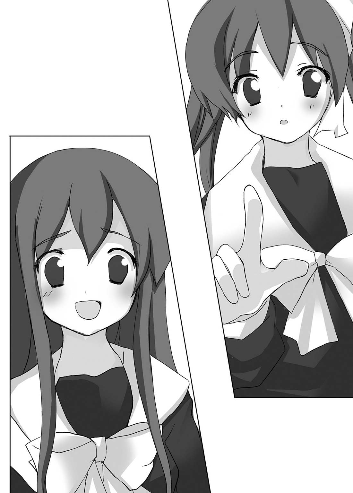

| AKUMAで少女 悪魔の国のお姫様 (HJ文庫) | |
| わかつきひかる | |
| (2008) | |


プロローグ
――遅 いなぁ。ゆり絵 のやつ。
滝 沢 僚 は、ケータイを開いて時間を確 認 した。いくら学校まで近いとはいえ、そろそろタイムリミットだ。これ以上待つと遅 刻 になってしまう。
僚は、朝、となりに住んでいるおさななじみ、如 月 ゆり絵と待ち合わせて学校へ行く。
僚が遅 れることはたまにあるが、ゆり絵が寝 過 ごすことはめったにない。
「おかしいなぁ......」
ケータイに電話しても、「電波の届かないところにいるか、電源を切っている」と合成音声が無機質な返答をするばかり。
如月家の玄 関 のブザーを押 すが、森 閑 として猫 の子一匹 姿を見せない。
朝日はうららかにふりそそぎ、さわやかに響 く小鳥の声が朝だ朝だと告げている。
――まさか、発 作 じゃっ!?
いやな予感にキモが冷えた。
ゆり絵は生まれつき心臓が悪い。心臓の部屋を隔 てる壁 に、小さな穴が開いているという。激しい運動はできず、ときおり発作を起こす。
如月家のポストのダイヤルキーを操作して、中に入っているカード型の鍵 を取り出す。
ポストに鍵を入れるのは、ゆり絵の習慣だった。彼女のお父さんは単身赴 任 で、お母さんはとうに亡 くなっている。一人暮らしになってけっこう経 つのに、習慣だけが続いていた。
「ゆり絵、入るぞー」
恋 人 とはいえ、他人の家に勝手にあがりこむのは、悪いことをしている気分でどきどきする。
――あれ？ 電気、点 けっぱなしだ。
「ゆり絵、いるのか？」
壁や掃 除 機 が、僚を非難の視線で眺 めているようで落ち着かないが、今はそれどころではない。
一階は人の気配がしないので、階段を急いであがり、いやな予感で高鳴る胸をなだめながら、部屋のドアを開ける。
「ゆり絵？」
ぬいぐるみだの、化 粧 品 の瓶 だの、ガラス製の耳の大きなネズミだの、クッキーの缶 だの、香 水 の瓶だの、ちまちました小物であふれた少女めいた部屋だ。
掃除は行き届いているにもかかわらず、妙 に散らかってみえるのは、ものがありすぎるせいだろう。
「寝 てる......よかった」
ゆり絵は、ベッドで眠 っていた。パジャマではなくセーラー服のまま、すうすうと寝息を立てている。
眠くなって制服のままでベッドに倒 れこみ、そのまま眠ってしまったみたいだった。
過激な性格をした彼女だが、眠っているときの彼女は愛らしい。
ツインテールに結 ったままの黒 髪 が首筋にまとわりつき、半開きの唇 がつやつやと輝 いている。長いまつげが影 を落とす顔立ちは、天使のような、という使い古された表現がぴったりだ。
「ゆり絵」
そっと肩 を揺 すってみたが、起きそうな気配はない。
――疲 れてるのかな？
文化祭は大変だった。僚でさえ疲 労 が抜 けきらないのだから、体力のないゆり絵は、さぞ疲れていることだろう。
昨日は文化祭の代休だったのだが、寝ても寝ても眠くて、一日中家でごろごろしていた。
――寝かしておいてやるか......。
ゆり絵は成績がいいのだし、健康な生徒よりは多少休みがちではあるものの、まじめに学校に行っている。
一日ぐらい休んでも、バチは当たらないだろう。
「あれ」
ベッドの下に開いたままのケータイが落ちていた。
セーラー服のままでベッドに仰 向 けになり、ケータイをいじっていて、眠りに落ちると同時に落としてしまったという雰 囲 気 だ。
僚は、ケータイを持ったままできょろきょろした。
「無いなあ......」
充 電 器 がみあたらない。
ゆり絵の手にケータイを持たせ、掛 け布 団 をかけ直す。
甘 い匂 いがふっと香 った。コロンとかではない。ゆり絵の体 臭 だ。
髪 を撫 で、おでこにちゅっとキスをした。
「大好きだよ」
言ってしまってから赤面する。
「わーっ、うわぁあぁああっ。ぼ、僕、ななななんて、恥 ずかしいことをっ」
「う、んっ」
僚の声がうるさかったのだろう。ゆり絵が小さな声をあげ、寝返りを打った。
ケータイを大事そうに抱 えこみ、無 邪 気 な横顔で眠っている。
僚は、片手で口を押 さえた。
そのとき、ぐぅ、と音がした。僚のお腹 が鳴った音だ。つい二十分ほど前、ミルクとトーストの朝ご飯でお腹を満たしたはずなのに、もうお腹が減っている。
――なんでかなぁ。文化祭が終わってからこっち、やたらと腹が減るんだよな......。
「コンビニでおにぎりでも買うか......」
僚は、ひとりごちながら階段を下りた。
このときはまだ、これが大 騒 ぎの前 触 れなんて、予想だにしなかった。
第１章 ゆり絵、僕!?
おにぎりを入れた白い袋 をぶらぶらさせながら校門をくぐった僚 は、いきなり足を取られて転びそうになった。
「おわっ」
手に持っていたケータイを取り落としそうになり、あわてて詰 め襟 のポケットに入れる。
「うわ、ご、ごめんっ」
校門をふさぐ形で、男子生徒がひとり倒 れていた。彼の下 肢 にけつまずいてしまったのだ。
詰め襟の少年はぐったりと仰向けになり、ぴくりとも動かない。
どこからどう見ても行き倒 れだ。
平成日本の平和な地方都市で、通学を行き倒れで迎 えられるという体験は、そうそうできるものではなく、目にしているものが信じられない。視神経に異常が起こったのかと思うほどだ。
「だいじょうぶか？ 生きているか？ し、死んでないよな？」
あまりの意外さに、足先で少年の下肢をつんつんすると、倒れている彼がうめき声をあげて僚を見た。
違 う、彼が見ているのは僚ではない。
僚がさげているコンビニの袋を眺 めている。
それも、やたらと熱い視線で......。
「それ？」
「ああ、これ？ コンビニのおにぎりだけど......」
彼の手がコンビニの袋に伸 びる。不意打ちだった。僚の持っていたおにぎりの袋は、あっという間に行き倒れの生徒に奪 われた。
「お～に～ぎ～り～っ」
男子生徒の高い声に、生徒たちがざわめく。
「おにぎりっ？」
「おにぎりなのかよっ」
あちこちで、生徒たちがぐったりしているのにようやく気付く。
彼ら彼女らは、むくりと起きあがると、わらわらと寄ってきた。幽 鬼 のような表情を浮 かべた彼らのあいだで、おにぎりの奪い合いがはじまる。
三個しか入っていないから、バトルはなかなかに激しかった。
「私のっ」
「いやーっ、髪 引っ張らないでよーっ」
「やった。取ったぞーっ」
引 っ掻 いたり殴 ったり、蹴 り飛ばしたりの阿 鼻 叫 喚 の嵐 が吹 き荒 れる。
見事おにぎりをＧＥＴできた生徒は、フィルムを引き剥 がすと、おにぎりをむさぼり食った。
「何だ？ 何事なんだぁっ？」
食料を奪われたことよりも、飢 饉 の農村のようなありさまに怯 えてしまう。
元女子高の桜 井 坂 高 校 はのんびりした校風で、おとなしい生徒が多い。その彼ら彼女らが、目の色を変えておにぎりを食べている。
チャイムの音がした。
朝のミニホームルームが終わり、一時間目の授業がはじまる合図だ。遅 刻 認 定 されるかどうか微 妙 なところだ。
――一時間目、何だっけ？ あ、若 葉 先生か。だったら少しぐらい遅 れても大目に見てくれるよな。
さいわい、彼ら彼女らの関心は、僚からおにぎりに移った様子だ。
僚は、どぎまぎしながら学生カバンを胸に抱 えて校門をくぐり、教室に急いだ。食われそうな恐 怖 で背中がぞくぞくしてしまう。
僚も腹が減っているものの、人の物を奪いたいほどではない。
僚には、ちゃんと人間としての倫 理 観 があるのである。
☆
「なんだよ......これは......」
廊 下 はもっとすごいありさまになっていた。お菓 子 の空き袋が宙 を舞 い、あちこちで生徒が行き倒れ、あるいはぐったりと座 りこんでいる。
空腹のあまり歩けなくなったようにも、睡 魔 に襲 われて眠 ってしまったようにも見えた。
ヤキソバパンの取り合いをしている生徒たちがいれば、陶 然 とした表情でポテトチップスを食べ続けている女子生徒がいる。
ポテトチップスの匂 いに反応したのか、ぐぅ、とお腹 が鳴った。
「腹減った......」
おかしい。
こんなのヘンだ。
この空腹は異常だ。
ゆり絵 は寝 たまま起きてこないし、みんなヘンだ。人間としての倫理観はどうなったのだ？
「みんなどうしたんだよ？ まともなやつはいないのかよ？」
ひとりごちたとき、教室から、若葉先生の悲鳴が聞こえてきた。
「みんなどうしちゃったのーっ。まともな生徒はいないのーっ」
いた。
まともな人間が。
僚は、遠 慮 がちに教室のドアを開けた。
スーツを着ていなければ女子大生にしか見えない若い先生が、えんま帳を振 り回して悲鳴をあげている。手の甲 で涙 を拭 きながら、一生懸 命 に出席を取っている。
教室の中は、廊下と似たり寄ったりだったが、生徒たちが机についているぶんまだマシで、校門や廊下の無法地帯ぶりに比べると、ずっと秩 序 だって見えた。
「すみません。遅 刻 しました」
「だいじょうぶよ。名前を呼ぶ前だから。早く席につきなさい......ああ。やっとまともな会話ができたわ。職員室の先生方もみなさんも、どうかしてるんだもの......っ」
若葉先生は言葉を詰 まらせると、瞳 をうるませた。
泣きそうに下を向いたが、手の甲でぐいっと涙を拭き、キッと前を向いた。
「返事をしない生徒は欠席ですからねッ！」
甲 高 い声で名前を読みあげていく。
――あれ、藤 宮 さん、気分悪そうだ。
藤宮沙 希 が、お腹に手を当て、青い顔をしている。
学園のマドンナだけあって、お行 儀 の悪いマネはしていないが、座っているだけでも苦しいという雰 囲 気 だ。
「先生、すみません。藤宮さん、気分悪そうなので、保健室に行っていいですか？」
「気分悪いのは私のほうよーっ」
堰 を切ってしまったとばかりに、両手で顔を覆 い、おいおいと泣き伏 す。
――よかった。若葉先生は普 通 だ。
美しい日本語を愛し、熱心でわかりやすい授業をする国語の先生なのだが、熱意と実力の乖 離 が激しく、ときおりこうしてパニックを起こす。
「保健室は誰 もいないよ」
花 村 勇 作 が言った。立てた教科書の陰 でクッキーをばりばり食べている。
行儀の悪い様子は、サッカー王子と愛 称 で呼ばれ、女子生徒たちの憧 れの視線を一身に集める男子生徒らしくない。
だが、廊下の惨 状 に比べると、勇作はマシなほうだ。
「どうして？」
「麻 子 さん、休みなんだ」
「古 泉 先生が？ 珍 しいな」
「うん。眠いって言っていた。一度起きたんだけど、また寝てしまった。昨日も一日中寝たり起きたりしてたらしい」
「ゆり絵もだ......あいつ、もしかすると、おとといからずっと寝ていたのかも」
「う......」
沙希が口を押 さえ、つらそうな声をあげた。顔色が悪い。
「ど、どうしよう。保健室、入れないんだよな」
「違 うの。気分悪いわけじゃないの。食べ過ぎでお腹がもたれてるの、でも、お腹が減って死にそうなの」
「だったら購 買 に」
「購買と食堂はとうに略 奪 済みさ。食べられるものは何も残っていないよ」
「りゃ、略奪？ ......食堂のおばさんたちは？」
「さあ？ 逃 げたんだろうな」
「せめて薬だけでも探してくる」
「じゃあこれ」
勇作が制服のポケットからキーホルダーを取り出した。三本足の不気味な蛙 の飾 り物と鍵 がついている。
養護教 諭 の恋 人 である勇作だからこそ持つことができる、保健室の合い鍵だ。
「私も逃げたいわよ～っ」
国語教師が悲鳴をあげた。
「先生、僕、保健室に行きます」
「勝手にしなさいっ。じゅ、授業、するからねっ。ぜったいに授業するからねっ。教科書八十七ページを開いてくださーい」
僚は、若葉先生の泣きそうな声を背中で聞きながら、教室をでていった。
☆
保健室は静かだった。
薬臭 い匂 いが漂 い、シンと静まり返っている。食べ物の匂いと殺 伐 とした雰囲気に満ちた学校の中で、この静けさは貴重だった。
「はーっ」
ため息をつきながら、薬箱をあさる。胃薬だけでもいろんな種類があり、何を選べばいいのかわからない。
薬の瓶 に張り付けてある説明書をしげしげと眺 めていたとき、ポケットの中のケータイが振 動 した。
メールが来ていた。
ゆり絵からだった。
【みんなおかしくなっていると思うけど心配しないで。そのうち元に戻 るから】
群れることを良しとしないゆり絵は、いまどきの女子高生のように小文字や絵文字を使わないため、液 晶 画面にはシンプルな文字が並び、読みやすい。
数字盤 を親指で押し、返信する。
【学校来れそう？】
【行けない。巷 にいるわ。私を助けて】
「ん？ ど、どういう意味だよ。これ、何て読むんだ。港？ 違うな。さんずいがないんだから。ええい、もう、読みがわかんねぇとネットで調べることもできねー」
【どこにいるって？】
【ごめん、バッテリーが心配。デビルベアをそちらに行かせるから説明を聞いて】
保健室の鏡から、丸い毛皮のカタマリがにゅっと出た。クマのぬいぐるみのしっぽだった。
「わーっ」
やがてお尻 からコロンと転がり落ちる。
首に赤いリボンを巻いたクマのぬいぐるみだった。洗面所のフチに後頭部が当たって撥 ね返り、きゅうと鳴きながら床 に落ちる。
いつもはまんまるの黒い瞳 をしているのだが、瞳が蚊 取 り線 香 のようなぐるぐる渦 巻 きになっていた。
目を回してしまったらしく、ぴくりとも動かない。
意外なものの出現に目を見張る。
「デビルベア、ど、どうして......？」
ぐったりしている彼は、まるで本物のぬいぐるみみたいだった。
ビジュアルが愛らしいので、にわかには信じられないが、彼はれっきとした悪 魔 である。
デビルベアは、ゼンマイ仕 掛 けのオモチャのようにパッと立ちあがると、鏡に向かって飛びあがった。
「えらいこっちゃーっ」
鏡にびたんと激 突 し、ずるずると滑 り落ちる。
「えらいこっちゃ、えらいこっちゃ、えらいこっちゃーっ」
また鏡に激突し、滑り落ちる。
それを何度も繰 り返す。
「ちょっとは学習しろよ......」
僚はあきれてひとりごちた。
五度ほど激突を繰り返したデビルベアは、はーっとため息をつきながら、洗面所のフチに座 りこみ、短い両手で側頭部を押 さえた。
「ホンマや。ワシ、学習能力が低いんや......なんでこう毎回毎回同じ目に......うぅ......っ」
弓なりに背中を反 り、小さな手でアタマを掻 きむしって悶 絶 する。
「あかん。どないしょう。帰れへんやおまへんか。ま、まさか、巷 でゆり絵はんに出会うなんて......ま、まさか、け、蹴 り出されるなんて......、バケモノや。オソロシイオソロシイ」
ぼんやりと見ていた僚は、恋 人 の名前を耳にしてはっとなった。
僚は、ひょいとデビルベアを持ちあげた。
デビルベアは、ジタバタと手足を動かしている。
「僚はんっ。僚はんや。わぁああぁあっんっ」
「おい、デビルベア。ゆり絵はどこに行ったんだ？ なんでおまえがここにいるんだよ？ おまえ、魔 界 に帰ったんじゃなかったのか？」
「僚はん......。ゆ、ゆり絵はんはほんまに人間なんでっか？ なんであのお人、巷でぴんぴんしてはりますねん？ バケモノやおへんかっ」
黒く丸い瞳を涙 でうるませ、ガタガタと震 えながら訴 える。米 粒 のような涙がぽろぽろ落ちて、見るからに哀 れっぽい。
いやな想像がふくらんだ。
文化祭の悪魔召 喚 の儀 式 。
恋人の魂 を蘇らせようとした産休補助教員の数学教師が、生半可な知識で書いた魔法陣 。
魔界ではなく向こう三軒 両 隣 の位置にある地 獄 とリンクしてしまい、地獄のカマの蓋が開きかけてしまった。
デビルベアがカマの中に入り、内側から閉めたので、事なきを得た。デビルベアはそのまま魔界へと帰っていったはずだった。
「ゆり絵がいるところはどこだ？ 地獄なのか？ おいっ、デビルベア、早く言えっ」
「巷 ですわ」
「巷？ なんだそれ？」
「道 又 のことです。ステュクスとかアケロンとかトゥオネラとか言いますわな」
「ごめん。何のことだかわからない」
デビルベアは、ふっとため息をつき、小さな両手を広げて顔を振 った。
バカは困るんだよなーとばかりの態度が気に障 ったが、いちいち怒 っている余 裕 はない。
「もっとわかりやすく説明してくれないか？ せめて日本語で頼 む」
「日本語ねぇ。黄 泉 比 良 坂 とか、三 途 の川とか、賽 の河原とか、根の国とか黄 泉 の国とか、聞いたことおへんか」
「あるよ。それぐらい......えっ？ そ、それって、死者の国、ってことじゃないのか!? ゆり絵は死者の国にいるのか!? 」
「正確に言うと死者の国やありまへん。天国と地獄と魔界と下界に行くことのできる廊 下 ですな。生まれる前の世界というか、死んだあとの世界というか、時の発生する場所ちゅーか、ようは鏡の内側の世界ですわ」
「それで道又......」
巷がさんずいのない港と書く理由が理解できた気がした。
「ワシが鏡を通り抜 けて魔界に行くときも、巷を通っているんですわ。下界から魔界へ直接扉 を開くよって、巷を通り抜けるのはほんの一 瞬 やけど」
「な、なんでそんな......」
「文化祭の日に、地獄のカマの蓋 が浮 きましたやろ。たぶんあのとき、生体エネルギーが巷に向かって流れこんだんですわ。あの場にいたお人は、ねこそぎやられてるはずです。こういうのは、そのときはわりと平気やのに、あとになってガクーッと来るんですわ」
「あ、ああ、そうか......」
学校中がおかしくなっている理由がやっとわかった。
僚も、わけのわからない疲 労 、空腹と睡 魔 に悩 まされた。まだ今も、倦 怠 感 が抜けきらない。
――じゃあ、あれは、僕のせいなのか。
僚のせいとは言い切れないが、責任の一 端 は確かにある。
「でも、僕、平気だぞ。ちょっと腹が減っているだけだ。昨日は眠 かったけど、今日はちゃんと起きてるよ。それに、若葉先生も元気だった」
「そら、僚はんは健康どっしゃろ。エネルギーの有り余っているお人は腹が減る程度で済むんですな。若葉先生というのはわかりまへんけど、屋上から離 れたところにいて、生体エネルギーを吸われずにすんだんとちゃうやろか」
「な、なるほど」
「生体エネルギーは、食べたり寝 たりしたら元に戻 ります。あれからもう二晩経 ってるんやから、昼過ぎにはみんな普 通 になりまっさ。でも、ゆり絵はんは......」
僚はデビルベアをつかんでいた手を、力無く下ろした。
体力のないゆり絵は、生体エネルギーを取られたあげく、魂だけが巷へとさまよい出た。
「それって、それって、危ないんじゃないのか......」
――私を助けて。
メールにはそうあった。
――どうすれば助けられるんだ？ ゆり絵は巷 からメールしてきたのか？ あの、りょうっていう、僕に取り憑 いた生き霊 みたいになってるわけか？
「ゆ、ゆり絵は、い、生きてるのか？」
「もちろんですがなっ！」
デビルベアは小さな両手で、床 をドンと叩 いた。
「ゆ、ゆり絵はんは、ワシを、け、蹴 り飛ばしたんやぞっ。行けぇーっ。言 うて。な、なんでゆり絵はんが蹴ったら下界に出るねんっ。巷でゆり絵はんにぶつかったときはそらびっくりこいたわ。ワシ、ワシ、これで魔 界 に帰れると喜んでたのに......妻よーっ。子よーっ。先立つ不孝を許してくれーっ。みんなビンボが悪いんやーっ」
まるっきり錯 乱 状態だ。
デビルベアは床に伏 すと、おいおいと泣きじゃくった。
いじめてオーラを放つあわれっぽい姿に、背中を踏 みつけてやりたい誘 惑 に駆 られたが、意志の力で追い払 う。
今はそんなことをしている余裕はない。
デビルベアを冷静にさせて、味方につけなくてはならない。
かかっているのは恋 人 の命だ。
――どうすりゃいいんだ？ 考えろ、僕っ!!
「君を、必ず、魔界に返す」
デビルベアは、一瞬で泣きやんだ。
「ほ、ほんまどっか？」
「ああ、だけど、ゆり絵を戻すのが先だ」
「そらそうですな。不思議な力を持ってるのはゆり絵はんだけやさかい」
「だから、君の力を貸してくれ」
「貸したりまっさ」
デビルベアはぴょんと立ちあがり、小さな手を脇 腹 に置いて胸を張った。
「ワシはデビルベアやでぇっ。悪 魔 やぞっ」
「早っ」
切り替 えの早さにあきれてしまう。
「僕はどうすればゆり絵を助けられる？」
「生体エネルギーを集めて、ゆり絵はんにキスしたらよろしおま。眠り姫 よろしく、起きはりますわ。ワシがエネルギーをチャージできる身体に改造してやります。チャージ完 了 したら、もう一回改造して、チャージしたエネルギーをゆり絵はんに渡 せるようにしてあげます」
――改造......。
なんとなく怖 そうだが、それしか方法がないなら、やってみるしかない。
「ど、どうやってエネルギーを集めるんだ？」
「粘 膜 の接 触 ですわ」
「うっ。そ、それって、セ......」
人間の心の機 微 がわからないデビルベアはあっさりと言い切った。
「セックスすれば一発ですな。皮 膚 の接触でも効率は悪いですがチャージできまっせ。キスだとかおさわりでも。あ、そうそう、ゆり絵はんは女 でっさかい、女から集めた生体エネルギーでないとあきまへんでー」
――うぅ。こいつ、何げにスゴイことを言ってんなぁ......。
――僕、チェリーボーイなのに、ど、どうすりゃいいんだ。勇作みたいな人間とはワケが違 うんだよ。
――ゆり絵を助けるためとはいえ、他 の女の子に手を出したら、ゆり絵に殺されるぞ......。
嬉 しいような困ったような気分で黙 りこむ。
「僚はん、何を考えこんではりますのや？ 女と乳 繰 りあったらゆり絵はんが元に戻 るんやで。いつまでもゆり絵はんを巷においとくわけにはいかへんやろ。巷は人間がいくところやあらしまへん。はよう助けださな迷わはりまっせ」
「そ、その通り、だけど......エネルギーを取られた女の人はどうなるんだ？」
「どうもしまへん」
「どうもしない？」
「自然に出るもんやからです。口から出た息や汗 を集めても、どうもしまへんやろ」
「それなら安心だけど......そ、その......僕には......」
「そうやなぁ。僚はんは、女と乳繰り合うのは難しいやろな。そやな......いい方法がありますな。どっちみち、改造するやったら同じやしなぁ......」
デビルベアは、にやぁっと笑った。
真横に避 けた口から、赤いフェルトがのぞく。
悪魔めいた笑 顔 だった。
泣いている姿はあわれっぽいし、黙っていると愛らしいのに、笑うとひどく不気味で、悪魔っぽく見える。
圧 倒 された僚は後ずさった。
☆
悪魔語の詠 唱 がようやく終わった。
「目を開けてよろしおま」
目の前の鏡には、詰 め襟 を着た女子高生が映し出されていた。黒目がちの大きな瞳 、整った鼻 梁 、さくらんぼのような唇 、肩 を覆 うさらさらの黒 髪 、胸 元 を押 しあげる乳 房 のふくらみ、ほっそりした肢 体 。
まぎれもなく如 月 ゆり絵だ。だが、髪をとき流しているせいなのか、ゆり絵の纏 う驕 慢 な雰 囲 気 はまるでない。
どこか頼 りなげで、気弱そうだ。長いまつげが影 を落とす顔立ちは、薄 幸 の美少女を絵に描 いたようだ。
詰め襟を着ているせいで、体つきの華 奢 さと、儚 げな美少女ぶりが強調されているようだった。
「これが、僕......」
目の前で見ているのに、信じられない。
片手をあげて、鏡の中の少女も手をあげることを確 認 する。頬 を触 ると目の前のゆり絵も、頬を触る。
「なんや、ゆり絵はんに変身したんでっか。どうせやったら、アイドル歌手とかに変身したらよろしほしたのに」
「でも、今から改造するから、女の子の姿をイメージしろ、って言われて、思い浮 かぶのはゆり絵だったんだよ」
「ラブラブでよろしな」
「わ、悪かったなっ!! 恋 人 が助けてくれって言ってるんだぞ。他の女の子をイメージできるわけがないだろっ？」
「へっへっへっ、とらわれのお姫 様 を助けに行く王女様でんな」
デビルベアは、コテコテの大 阪 弁 で僚をからかった。
なまじ愛らしい外見をしているせいで、オッサン臭 いしゃべくりがかちんと来る。
「とらわれのお姫様を助けに行く王子様、だろ」
律 儀 に訂 正 してから、恥 ずかしくなった。
鏡に映る自分が直視できない。
――か、かわいい......。かわいすぎる......。
僚は、ごく平 凡 な男子高校生にすぎないのに、女性化するとやたらとかわいくなってしまう。
女の子の身体に詰め襟というのも、アブナイかわいらしさを醸 し出す。
「デビルベア、詰め襟、なんとかしてくれ。これじゃ外に出られない」
「そやった！」
ぽんとデビルベアが手を打つと、パッと手品のように服が変わり、詰め襟がセーラー服に、ズボンがヒダスカートに変化した。
細くて長い手足も、きゅっとくびれたウエストも、間 違 いなく女の子のものだ。胸の前でリボンを結ぶデザインは、胸のふくらみを目立たせて、プロポーションの良さを際 だたせる。
手をパタパタして胸だの股 間 だのをそっと押さえる。
――やっぱり、チンチン、無くなっているんだ。
――見たい。僕の裸 ......どんなふうになっているのか......。
魂 の交 換 ではなく肉体改造による変身だから、肉体は僚のものだ。自分の身体がどんなふうに変わっているのか確かめたかった。
変身はすでに一度体験しているのだが、健全な男子なのだから、女の子の身体に興味を持つのは当然だ。
――だめだ。見ている時間なんてないぞっ。
僚は、自分の身体を鏡に映して見始めると最後、おっぱいの世界にトリップしてしまう。
「デビルベア、お願いがあるんだ」
「何でっか。ワシのできることやったら何でもやりまっせ。ワシも早う魔 界 に帰りたいんですわ」
「僕をモテモテにして欲 しい」
「アホなことをお言いやすな。人間の心は操作できまへん。ワシができるのは、悪 魔 のささやきで気まぐれを起こさせる程度やな。魔が差すとか、気の迷いとか、ああゆうたぐいのやつや。自分でがんばりなはれ。心配する必要おまへん。女の子になった僚はんは魅 力 的 ですわ」
デビルベアは、げっへっへと下品に笑った。
愛らしい外見を裏切るオッサン臭い笑い方にげっそりする。
「言い忘れてましたけど、男と粘膜の接 触 をするとチャージした生体エネルギーが消えますんで、注意してつかあさい。ワシは目立たへんように姿を消すけど、僚はんをずっと見守ってますんで、何かあったら呼んでください」
「わ、わかった」
女の子と乳 繰 り合って、生体エネルギーを集めること。
それが僚のミッションだ。
巷 にとらわれたゆり絵を助けるために......。
僚は、両手で頬を叩 き、活を入れてから保健室を出た。
第２章 エネルギーチャージ大作戦
ちょうどその頃 ......。
セーラー服を着たゆり絵 は、グレイに曇 った世界で、膝 を抱 えて座 っていた。
天 井 が低いようにも、やたらと高いようにも見える。霧 が立ちこめているのだろうか。視界が悪く、広いのだか狭 いのだかわからない。
そのあいまいな世界の向こうから、赤いものが走ってきた。燃えあがる車が移動しているのだとすぐに気付く。
車と言っても、自家用車ではなく、リヤカーとか、平安時代の牛車とか、馬車といったたぐいのものだ。それがぼうぼうと燃えあがりながら走っていく。
「火の車だわ」
車を引いているのは、赤 鬼 と青鬼だった。
かと思うと、ゆり絵の膝の横を、身長十五センチほどの三身頭の人間たちがちょこまかと走り抜 ける。ふきの葉を傘 がわりに持っているところが愛らしい。
子供の頃に絵本で見たコロボックルそっくりだ。
傘にしているふきの葉がぽろんと落ちる。本人は、落としたことに気付かないのか、いそいそと歩き去っていく。
「落ちたわよ」
拾いあげて渡 そうとするが、そこにあるはずなのにつかめない。ゆり絵の伸 ばした手は、スカスカと空気をつかむばかりだ。
「やっぱりね」
巷にあるものは、触 れない。
巷にいて平然としているなんて信じられない。見えているだけでも奇 跡 的 だとデビルベアが言った。
「そっか、私、やっぱり、魂 だけの存在なんだわ......」
とてちてと二足走行しているデビルベアを捕 まえ、彼から話を聞いたので、ここが何か、自分がどういう状態になっているかわかっている。
生まれる前の場所、死者が通る場所、時が発生する場所、鏡の内側の場所。
天国でも地 獄 でも魔界でも、もちろん人間のいる世界でもなく、そのどれもに通じている道 又 の世界。
誰 かに扉 を開いてもらわないと、ここから外には出られない。
出口を探して歩いても、同じところをぐるぐるするだけで、その先に行きつかないことは、すでに何度も実験済みだ。
「キャイッ？」
コロボックルは、首をひねりながら戻 ってきた。ようやく傘がないことに気付いたらしい。そして、ふきの茎 を持ち、顔を真っ赤にしてよっこらせと直立させる。
「ウキャッ！」
勢い余ってゆり絵のほうへと倒 れこんできた。ゆり絵の足に背中が当たるが、感 触 はぜんぜんない。空中に投 影 された映像のようだ。
小 人 は、もういちどふきの葉を立てると、ゆり絵の足 下 をかすめて走り去っていった。
向こうのほうでは、腐 乱 死体がいっせいに踊 っている。
腕 をだらんとさげて、身体をギクシャクさせながらステップを踏 む、ヒップポップダンスみたいな踊りだ。
音楽も聞こえてきた。
「あーははは、はははっ、スリラー、なんちゃら、えへっえへっ、おほっおほっ、スリラー、スリラー」
ほとんどガイコツに近いゾンビたちが、動きをあわせて踊る様子は迫 力 があり、集団美を感じさせる。
まるで３Ｄ映画を見ている気分だった。
はじめは楽しかったが、だんだん飽 きてくる。こんなところにずっといると、おかしくなってしまいそうだ。
「デビルベア、ちゃんとやってるかな？ あいつ、バカだし、頼 りないし......僚 、お願い、私を助けて......」
ひとりごちると、不安と孤 独 が、ほんの少しまぎれる気がする。
ゆり絵は手に持っているケータイをお守りのように握 りしめた。
ここに来たときは持っていなかったのに、ふっと気付くと、ケータイを持っていた。僚にメールしたら、返信が来ててびっくりした。
このケータイは、きっと僚が、眠 っている私に持たせてくれたのだ。通話はできないけど、メールは打てる。今となっては外部との唯 一 の通信手段だ。
僚にメールしたくてたまらないが、バッテリーが不安なので我 慢 する。
「大好きよ......」
ゆり絵は白い霧 に向かってつぶやいた。
そして膝 を抱 えて腕の中におでこを埋 める。
体力のないゆり絵のこと。あてどなくさまよって体力を消 耗 するよりは、じっと座 って待っているほうがいい。
「大変だ、大変だ。急がなくては、急がなくては」
渋 い重低音が聞こえてきた。
ウサギのぬいぐるみが直立して走っている。
片手に持った懐 中 時計に目を落とし、顔をしかめる。
「大変だ、大変だ。急がなくては、急がなくては！」
顔をしかめた気むずかしそうな様子が、シャーロック・ホームズのウサギ版という感じだ。いやこれは、シャーロック・ホームズというより、不思議の国のアリスだろう。
童話では、アリスは、懐中時計を見ながら直立して走るウサギを追ってウサギ穴に入り、不思議の国へと迷いこんでしまう。
ウサギは、ゆり絵を見て足を止めた。ぬいぐるみである彼には眉 はないが、眉をひそめると表現するしかないほど、不 審 そうな表情でゆり絵を見る。
右耳の付け根に、タグだかイヤリングだかわからないわっかがついているのがおしゃれっぽい。
「あんたに言ったんじゃないわよ。うぬぼれないでね」
「何のことだ？」
「えっ、会話、できる？」
ゆり絵は、ぱっと立ちあがると、ぬいぐるみを両手で押 さえこんだ。
「な、何をするっ？ 痛いではないかっ!! 」
ウサギのぬいぐるみは、手足をじたばたさせて暴れている。
ぬいぐるみのモコモコの手 触 りに興奮した。
「やっぱり、触 れるっ！ 触れるわっ!! 」
巷 に来てから触 感 があるものに出会ったのは二度目だ。
一度目はデビルベアで、彼が扉はあっちの方向かもと指差したところに向けて蹴 り出してやった。
このウサギは、デビルベアの仲間なのだ。
「君は悪 魔 ね」
「失敬だ！ 手を放せっ」
「逃 げないって約束するなら手を放すわ」
「わかった。約束する。そのかわり、私に触るな」
「はいはい。君って、デビルラビット？ それともデビルウサギ？」
「いかにも。私はデビルウサギである！」
「そうなの。君はデビルウサギなのね。ウサギのくせに、えらそうに反っくり返らないでよ」
「そなたも名を名乗られよ」
「アリス、ううん、如 月 ゆり絵よ。ゆりはひらがなで、絵だけ漢字。百 合 の絵よ。綺 麗 な名前でしょう」
不思議の国のアリスみたいだと思っていたせいか、つい口からでてしまった。
「アリス......様と申されたか？」
デビルウサギは、ぽかんと口を開けて立ちつくした。
ウサギのぬいぐるみなのに、表情は豊かだ。驚 いている気配が伝わってくる。
「ばかな。アリス様は、魔界から忽 然 と姿を消されて......。だが、そなたは、心臓に穴が開いているな......こ、これはもしかして......そ、それに、ゆり絵と申したな。百合の絵だと......如月......月、だな......人間になっているなんて......いや、年回りはぴったりだ......」
ウサギのぬいぐるみは、ぶつぶつと呟 いている。壊 れたオモチャみたいだった。
――イカレちゃったのかしら？
「君ってさ、日本語しゃべれるんだし、巷を出入りできるのよね？」
ゆり絵は、ぬいぐるみを捕 まえようとして手を伸 ばした。
デビルウサギは、なんなくジャンプして、ゆり絵の手から逃 れる。捕まえようと伸ばすゆり絵の手と、逃げるデビルウサギの間で攻 防 が繰 り広げられた。
「お願いがあるの。私をも」
元の世界まで送って欲 しいの、と言おうとしたときのことだった。
デビルウサギは、何かのおまじないのように、懐中時計を高く掲 げた。懐中時計から生まれた円い光が斜 め上に向かって走っていく。
まるで特 撮 のようだった。光の当たったところが、長四角に浮 かびあがる。
「扉 ？」
ドアノブはないが、高い位置に直立している長四角の平面は、扉のように見えた。まるで風が吹 き抜 ける水面のように揺 らいでいる。
「なにこれ？ 君がしたのっ？」
デビルウサギはワンステップで勢いをつけ、長四角の水面に向かって飛びあがる。
「これにておさらばっ」
「逃げないって言ったじゃないっ!? 」
「先に約束を破ったのはそなたであろうっ！」
「待ちなさいよっ」
デビルウサギはそのまま長四角の水面に吸いこまれていく。やっぱりだ。あれは出口だ。
デビルウサギは、あの懐中時計を使って、ムリヤリに扉を開いたのだ。
長四角の出口は、デビルウサギの姿を呑 みこみ、霧に隠 れた。次に霧が晴れたときには、もう出口は見つからなかった。
☆
滝 沢 僚は、ゴミを拾いながら廊 下 を歩いた。
クッキーの空き箱をゴミバコに捨てようとしたのだが、誰 かの手が伸びてきてお菓 子 の箱を横取りする。
その女子高生は、中身が入ってないことに気付き、ぽいと投げ捨てた。そして、力無くうずくまる。
青ざめてぐったりしている彼女が誰か、ようやく気付く。
二年Ｄ組のクラス委員で、担任の若 葉 先生よりよほどしっかりしている女子生徒だ。
責任感があり、まとめ役である彼女がこんなになるなんて思わなかった。
「だいじょうぶ？」
「あ、如月さんだ。声、ヘンだね。男みたい」
――あ、そうか。ゆり絵とは、声が違 ってるんだよな。
「うん。ちょっと、風 邪 引いたのかな。喉 が痛くて」
「そうなんだ、心臓、だいじょうぶ？」
ゆり絵は確かクラス委員のことをあっちゃんと呼んでいた。
「うん。あっちゃん、薬飲んでるから平気だよ」
「薬って......？」
「し、新薬なんだよっ。新しい薬でっ......だ、だから、平気なんだっ」
苦しい言い訳だったが、クラス委員は、追及する余 裕 がないらしい。
「そうなんだ。よかったね......私、どうしちゃったのかな。お腹 空いて死にそう」
「寝 るなら、保健室で寝たらどう？」
「鍵 、閉まってるよ」
「さっき、鍵、開けてきた」
「ほんと、ありがと。職員室で鍵を借りてこようと思うのに、元気が出なくて歩けなかったの」
「すぐそこだから、がんばって歩こうよ。私、支えてあげるよ」
クラス委員に肩 を貸し、よろよろの彼女を支えて歩く。密着している部分から、わずかながら生体エネルギーが流れこんでくる。
――なるほどね。こうすりゃいいわけか。
別にキスだのセックスだのしなくても、手を握 ったり、身体を寄せ合ったりする程度でも、チャージできるらしい。
空腹が収まっていることに気がついた。
生体エネルギーは、まずは僚の身体のエネルギーとして充 填 されたようだ。
「あっちゃん。ゴミ袋 、どこにあるかな？ 掃 除 したいんだ」
クラス委員は、驚きの表情で目を見開いた。
ゆり絵は、率 先 してクラスの用事をするタイプではない。
クラスの皆 が盛りあがっているのを、冷めた様子で眺 めている生徒。それがゆり絵だ。
掃除したいなんて、キャラが違っているのはわかっている。
だが、皆の体調不良の責任の一 端 は僚にあるわけだし、何かしたかった。
「教室の、掃除用具入れの、いちばん下の引き出し」
「わかった。寝てて」
「うん。寝させてもらうね。あーあー、クラス委員なのに、みんなを助けてあげられないや」
「私がするよ。心配しないで」
ベッドに仰 向 けになり、ぐったりと目を閉じた彼女を残して保健室を出る。
ゴミを拾ってはゴミバコに捨てながら廊下を歩き、教室に戻 る。
授業はもう成立しておらず、若葉先生もいない。
時計を見ると、二時間目の授業が始まっている時間だった。
自習になってしまったらしい。先生は、職員室か家で、寝ているか、食べているかのどちらかだろう。
「藤 宮 さん。薬持ってきた」
胃薬を差し出すと、ぐったりしていた沙 希 が不思議そうな表情で僚を見た。
「あれっ。如月さんなの？ 声、ヘンだね。滝沢くんは？ 如月さんって、学校、来てたっけ。休みかなって思ってた」
「やだなぁ。来てたよ。ああ、そういや、僚も声がヘンだって言ってたな。薬はね、僚から預かってきたんだ。だるいから動きたくないんだって」
「そうね。わかるわ。薬、ありがとう。水飲み場で飲んでくるね」
「一 緒 に行くよ。なんか、心配だし」
ふらふらの沙希と手をつないで廊 下 を歩き、水飲み場まで案内する。
生体エネルギー、チャージ。
今度は僚の身体には使われず、ちゃんと蓄 積 されたみたいだ。
「あっ」
「だいじょうぶ？」
ふらついた沙希を支えたところ、彼女はまじまじと僚を見た。
「あなた、ほんとうに如月さん？ 私をカバンで殴 ったときと、雰 囲 気 が違うわ」
ぎっくうっと胸が躍 りあがった。
「私は私よ。そんなこと言わないでよ」
右手で左胸を押 さえて小首を傾 げ、気弱く笑って目を伏 せる。
――おおっ。き、決まったっ！ すげぇっ。僕ってかわいいぞっ。
鏡に映る自分は外見はゆり絵なのだが、楚 々 としてはかなげな印象だ。惚 れてしまいそうなほどかわいい。
「私が好きだったときのゆり絵だわ」
沙希が熱い瞳 で僚を見た。
彼女は真性百 合 で、女性化した僚を押し倒 して自分のものにしようとしたことがある。
沙希の笑い方は、どこかエッチっぽくて怖 い。内心で身構えてしまう。
だが、沙希の体調が悪いせいだろう。それ以上迫 ってこない。
薬を飲んだ彼女を支えながら廊下を歩くと、正気を取り戻した男子生徒がまぶしそうに僚を見た。
学園のマドンナと、綺 麗 だがキツイ性格で有名なゆり絵が身体を寄せ合って歩いているのだから、注目が集まって当然だろう。
教室に戻り、沙希を座 らせる。
「さてと」
掃 除 用具入れを開け、ゴミ袋 を取り出す。
両手で振 って広げるとぱんと乾 いた音がした。
音につられた生徒たちの視線が集まる。
僚は、教室に散らばるゴミを拾い、ゴミ袋に入れていく。
「そのゴミ、捨てていいかな？」
「薬、飲む？ 胃薬ならあるから」
「眠 いなら、保健室に行こう。先生はいないけど、鍵 開けてあるから」
「早退する？ じゃあ、早退届、ぼ......じゃなくて、私が書いて出しておこうか。自分で出す？ そうか。わかった。気をつけてね」
皆はあっけに取られた表情で僚を見ている。
「如月さんが掃除してる......」
「そ、それだけじゃないわ。如月さんが、親切してる」
「怖ぇよ......。何か起こるんじゃねぇか？」
教室中がシンと静まりかえった。
――うぅ、すげぇ言われ方......。ゆり絵って、確かに過激な性格をしているけど、だいぶマシになってきたのになぁ。
聞こえよがしのウワサ話に、頬 がかっと熱くなったが、知らないフリで掃除を続ける。
「如月さんが、か、顔を、赤くしてるわ......」
「カワイイッ！」
「如月さんっぽくないわっ」
教室中がザワめいた。
「いじめるのはよせよ。如月さん、文化祭のときも、メイクの担当をしたり、後片づけをがんばってたじゃないか」
冷静な声が響 いた。
勇 作 が立ちあがり、皆 をなだめている。サッカー部所属の彼は、さすがに体力があるようで、もう元気になっている。
――げっ。勇作っ！
男とキスをすると、チャージしたエネルギーが消 滅 する。
女と見れば、くどくのが礼 儀 であると思いこんでいる勇作に、抱きよせられたりキスされたことは一度や二度ではない。
なるべくなら今は逢 いたくない存在のひとりだった。
「そうね。如月さんって、ときどき発 作 的 にかわいくなって、また元に戻 るよね？」
「お雛 様 のときに、イライラするんでしょ。仕方ないよ」
「そうだよね。女の子の日ってイラつくよねー」
女子高トークが炸 裂 した。
男子生徒が酸 っぱいものを食べたような顔をして、そろそろと後ずさる。
お雛様とか女の子の日というのは、生理のことである。男子としては、あまり耳にしたくない性質のものだ。
桜 井 坂 高 校 はもともと女子高で、共学に変わって三年しか経 っていないから、ノリはまるっきり女子高だ。
女の子たちがひとたび群れると、男子なんか関係ないわとばかりのあけすけな話で盛りあがる。
「ごめん、ぼ、わ、私、た、体調が悪いとき、つい八つ当たりしてしまうのよ......。わ、悪気はないの。だ、だから、その......ゆ、許してねっ......」
ねっ、で、お辞 儀 をして、皆を見回す。
僚の背後で、あれっ、と声が響いた。
勢いよく礼をした拍 子 にスカートがめくれあがり、ボクサーブリーフを穿 いた少女のお尻 が丸出しになってしまったのだ。
「如月さん、何を穿いてるの？ スパッツ？ なんか見かけないデザインね」
僚は、後ろ手にスカートを押 さえた。そして気付く。
――し、下着、男のまんまだ。
そうだった。僚はデビルベアに、詰め襟をセーラー服にしてくれ と頼 んだのだ。下着の変 更 は頼んでない。
人間の心の機 微 が理解できないデビルベアに、下着まで女ものに変えるという高等技術ができるわけがないのだった。
――ってことは......。
もう片方の手で胸を押さえた。ふよんとした感 触 にどぎまぎする。
――ノーブラだ......。
顔を赤くしてうつむく。
――どうすんだよ。貧乳ならまだしも、ゆり絵みたいなロケットおっぱいでノーブラだと......揺 れるぞ......。
背中をたらありと冷たい汗 が伝う。
「かわいいっ」
「如月さんっ、かわいいっ」
少女たちが、僚へと迫 ってきた。みんな、エッチっぽく笑っている。体育会系の少女ばかりだから、迫 力 があって怖 い。
男たちが怖そうに後ずさり、アスリート女子たちが距 離 をつめる。
デビルベアの言ったとおり、元気な生徒たちから順に、体力を取り戻しているようだ。
――うっ、こ、これ、は、まずいぞ......。
僚はずりずりと後ずさった。いやな汗が白い肌 を濡 らす。
このパターンはわかっている。女子高特有の過激なスキンシップだ。
女の子たちの小さな手が乳 房 を揉 む感触は単純に気持ちがいいし、生体エネルギーのチャージもできるだろう。だが、下着が男物であることを知られてしまう。
「僕、ちょっ、トイレっ！」
僚は、脱 兎 のごとく逃 げ出した。
☆
僚は振 り返りながら廊 下 を走った。
本人は意識していないが、すっかり内 股 の女の子走りだ。
とき流した黒 髪 が背中で揺れ、廊下の窓から射 しこむ陽光にきらめく。
泣きそうな顔をして、必死になって走っている姿は、男であれば見とれずにおかない、アブナイ魅 力 を帯びていて、廊下を行く男がぼうっと足を止めて僚を見ている。
「きゃああーっ！ 如月さんっ、な、何をしているのっ!? 走っちゃダメーっ。発 作 を起こすわっ!! 」
若葉先生がすれ違 いざまに悲鳴をあげ、怖い顔で追いすがろうとする。
だが、出席簿 は落とすわ、缶 ペンケースを落として中身を散乱させるわ、あげくにパンプスが脱 げて転んでしまうわ、大 騒 ぎを繰 り広げている。
「平気ですっ」
「平気じゃないわ......っ」
「新薬飲んでるんでっ！」
「あ、そ、そうなの......ほんとね、平気そうだわ......やだっ、ストッキング破れちゃったーっ」
ゆり絵のメールでは、みんなそのうち元に戻 る、とあったが、ほんとうにその通りだった。
朝来たときは大半の生徒がぐったりしていたのに、今は、行き倒 れている生徒は朝の三分の二ぐらいまで減っていた。
早退も多いのかもしれないが、背後から迫ってくる女の子たちなんか、元気いっぱいで怖いほどだ。
「如月さん、待ってっ！」
「待ってよーっ。如月さーんっ」
くすくすうふふあははと笑う声が聞こえてきて、心臓が縮みあがる。
肉体改造による変身だから心臓は僚のものだ。走っても大 丈 夫 なのだが、やはり女になると体力が落ちるらしく、息があがってきた。
女子トイレが見えた。
――あともう少しだ。
身体を翻 してトイレに入る。個室に入って内鍵 を閉めてしまえば、さすがの女の子たちだってあきらめるだろう。
だが、五つある個室が全部塞 がっている。顔からさっと血の気が引いた。
――ど、どうする？ 男子トイレに入るか？ いっそ窓から脱出するか？ こ、こんな高い窓、どうやって登る？
ゴボゴボと水音が聞こえた。
――天の助けっ！
僚は、水音が聞こえた個室の前に立った。
だが、いっかなドアが開かない。
女の子は用を足してしまっても、身だしなみに時間がかかるのである。
じりじりしていたとき、誰 かに襟 首 をつかまれた。ひんやりした指先が首にあたり、悲鳴をあげる。
「きゃあっ！」
自分でも、いやになるほどかわいい声がでてしまった。
クラスの体育会系女子軍団だ。
アスリートの彼女らと追いかけっこなんて、やはり元からムリだったのだ。
「いいなぁ。その怯 えた表情、たまんない」
「如月さん。どうして逃げるのよ？」
「えっ、そ、その」
恐 怖 を感じたからだ、なんてとても言えない。
トイレの中に入ってしまうと袋 小路 だ。まだ、廊下のほうがいい。
体育会系女子軍団も、他人の目があるなかでは、あまり過激なことはしないだろう。
僚は顔の前で両手を組み合わせるお願いポーズで小首を傾 げ、じわじわと移動した。僚が動くにつれて女子軍団も移動する。肘 で乳 房 をガードして、ノーブラを目立たせないようにしている。
なんとかトイレを出ることに成功したものの、トイレの入口のすぐ横、廊 下 の壁 に背中が密着する。
「な、何か、用事かしら......」
僚は、体育会系女子軍団に取り囲まれてしまった。
女の子の甘 い体 臭 が、危険な色を帯びて漂 ってくる。
「かわいいなぁ。如月さん。いつもぷんすかしているのに、こういうときって、泣きそうに困った顔をするんだもの。そそられちゃう」
柔 道 部 四十八キロ級女子が、人差し指で僚の頬 をつつく。
僚はひくっと喉 を鳴らしてすくみあがった。そのとき、乳房をガードしていた両 肘 が開いてしまった。
「あれ、如月さん、ノーブラじゃない？」
新体操部女子がめざとく気付き、僚の乳房をぎゅうとつかんだ。甘痛い刺 激 が乳房で生まれ、四 肢 の先 端 へと走り抜 けていく。
「あっ、んんっ......あ、んっ!! 」
鼻にかかった甘い声が漏 れ、上半身がセクシーにくねる。
「ほんとだーっ。ねぇねぇ如月さんってなんでブラジャーしないの？」
「いつもはつけてるよねー？ まさかノーブラ派？」
卓 球 部 女子と陸上部女子が、瞳 を好 奇 心 に光らせて聞いた。
「き、気分が、体調が悪くて......む、胸が苦しくて......は、外しちゃったの......」
「ああ、わかるぅっ。ブラジャーって苦しいときあるよねぇ」
女の子たちの小さな手が、交 互 に乳房を揉 み始めた。
彼女らなりに遠 慮 をしているのだろう。確かめるようなさわり方で、服越 しのソフトな刺激がたまらなく気持ちがいい。
「あぁあ、んっ!! ん、ぅっ」
「わぁっ。大きいっ。Ｆカップはありそう」
「そりゃ、こんなに大きなおっぱいだと、ブラジャーが苦しくなるわよねぇ」
「いいなぁ......。なんかくやしいぞっ。ええいっ。くすぐってやるっ」
アスリート女子たちが、僚の乳房ばかりではなく、腋 の下や脇 腹 、背中をくすぐりはじめた。
生体エネルギーがチャージされていく。体内のエネルギーゲージがあがっていくのがはっきりわかった。
だが、服の上からの接 触 は効率が悪いのか、ゲージがあがるスピードはゆっくりだ。
一 般 生徒とは違 い、体育会系女子はさすがに握 力 が強い。はじめはさわさわと揉んでいたのに、だんだん調子に乗ってきて、乳房をきゅっと握 られると、甘い疼 痛 がじぃんっと身体に響 く。
「や、やめて......んっ、んんっ......ぁあ......」
甘い吐 息 が出てしまう。
痛いのにすぐったくて気持ち良く、どうしていいかわからない。
これは危険な快感だった。
――我 慢 だっ。我慢するんだっ。僕っ！
アスリート女子たちは、僚の反応が楽しいのか、容 赦 のない強さで乳房を揉んだ。
「うわぁ。おっぱいぷりぷりっ」
「かわいい。かわいいわっ。如月さんっ」
「あーん、もう、悔 しいなぁっ。えいえいっ」
痛いほどなのに、それが不思議に気持ちがいい。
感 触 を司 る機関が、おかしくなってしまったとしか思えない。
くすぐられる感触もたまらなかった。ゾクゾクッと来る戦 慄 が、弱電流のように身体を走る。指の先までも痺 れてしまう。
――うぅ。勃 起 しそうだ。って、チンチン無いんだよな......。
「や、やめて......やめてぇっ......」
☆
「僚はん、気持ち良さそうでんなぁ......」
デビルベアは、空中にぷかぷか浮 きながら、女の子に囲まれてきゃあきゃあ騒 いでいる僚を見下ろしていた。僚は頬を紅潮させ、陶 酔 の表情を浮かべながら、胸だの腹だの腋 の下だのを触 られて、身体をくねらせている。
「うらやましいなぁ。げっへっへっ」
姿を消しているので誰 にも見えないが、口 の端 から涎 がじゅるっと垂れて、廊下の床 に滴 った。
「も、もう、やめてぇっ......お、お願い......っ。誰かっ！」
僚の望みを叶 えることは簡単だった。
悪 魔 のささやきをしたら、彼女らを追い払 うことはできる。
だが。
「本人が喜んでるんやし、生体エネルギーもチャージできるし、よろしいやおへんか。そやけど......」
服越しの接触は効率が悪い。
せっかくのチャンスではないか。
「もっと効率良くチャージするべきやな......」
デビルベアは、にやぁ、と笑うと、悪魔語で呪 文 を唱えはじめた。
詠 唱 が完 了 した瞬 間 を見計らったかのようなタイミングで、空気が動いた。
「んっ？ この匂 いは......魔界の......」
デビルベアは、はじかれたように振 り返った。
女子トイレのいちばん手前の鏡から、デビルウサギがころんと転がり出た。
「デビルウサギはんっ！」
トイレの入口のところでホバリングしていたデビルベアは、デビルウサギに抱 きついた。
「デビルベア、そなた、こんなところで何をしてるっ！」
「わーんっ。デビルウサギはんっ。逢 いたかったーっ!! 」
「抱きつくなっ！ 暑苦しいっ。手続きもせずに下界に行くなど、始末書ものだっ」
「ワシが悪いわけやあらへんっ。悪魔みたいな怖 い女 に、下界に引っ張り出されるわ、巷 から蹴 り出されてしまうわで大変やったんです」
「こうしちゃおれん。魔界の扉 が閉じてしまう」
デビルウサギは懐 中 時計を持ち直した。
「ワシも連れていってくださいっ」
鏡に向かってジャンプするデビルウサギのお尻 にデビルベアが抱きついた。
「ええいっ、抱きつくなっ、うっとうしいっ!! 」
「ワシには嫁 はんも子供もおるんですわーっ。魔界に帰りたいんやぁっ」
「だめだ。閉じるっ、閉じるっ、閉じるぞーっ」
「閉じますわっ」
「私の頭を踏 み台にするなっ」
「いやや、ワシ、魔界に帰りたいんやぁっ!! 」
二匹 のぬいぐるみは、くんずほぐれつ絡 み合いながら、我先に鏡の中に入ろうとする。醜 い争いが繰 り広げられたが、それでもなんとか二匹とも鏡の中へ入りこむことに成功した。
乱 闘 のあとを示すように、デビルベアが首に巻いていた赤いリボンがぱらっとほどけた。
デビルウサギの持っていた懐中時計がころんと落ち、洗面台に転がる。
「あーっ、懐中時計がぁっ!! 」
小石を投じた水面のようにゆらめいていた鏡面は、すぐに元通りになった。
何事もなかったかのように女子トイレは静まりかえっている。
洗面台に落ちた懐中時計ひとつ残して。
☆
女子トイレの前の廊 下 では、阿 鼻 叫 喚 の嵐 が継 続 中だった。
――き、気持ち、良すぎるよぉーっ。
――女の子の身体って、どうしてこんなに気持ちがいいんだぁっ!?
「あぁん、やめてぇ......っ」
自分でもいやになるほど、セクシーな声が出た。
女の子たちがきょとんとした表情を浮かべて僚を見た。
そのときちょうど、デビルベアが悪魔のささやきをしたのだが、そんなことはわからない。
――な、なんでだろ!? なんでこんな気分になるんだ？ ぬ、脱 がせてやりたい、みたいな......。僕、まさか、直接タッチしたいって思ってる？
「あぁあん、やめてぇっ、だってさーっ」
「なんか悔 しい。だって、如月さんって、かわいいんだものっ」
水泳部がセーラー服の下に手を入れて乳 房 を揉 んだ。
とくにたまらないのが乳 首 だった。女子生徒の細い指先が乳首をくりくりするたびに、重い刺 激 が背筋を通り抜 け、ビクンッと身体が震 えてしまう。
痛くて気持ちいい、どこかアブナイ感 触 に怖くなり、両 腕 で乳房を抱いて背中を向ける。
「あぁん、もう、脱がせちゃいたいーっ」
「そうだねーっ」
悪 魔 のささやきが、彼女らの興奮をけしかけているのだが、僚にはそんなことはわからない。
「きゃっ」
スカートがパッとめくられ、お尻と太 腿 がひんやりした手で撫 でられる。
これはもう、女の子同士のスキンシップを超 えている。
――尻まで触るのかよーっ！
――うぅ、パンツ、め、めくり降ろされそうだ......。お、犯 されるかも......。
――き、気持ち、いいけど、気持ちいいんだけど、怖いよぉーっ。
生体エネルギーがどんどんチャージされていく。もうすぐだ。もうすぐでフルチャージになる。
だが、僚には、心配事がひとつあった。
――スパッツじゃなくて、ボクサーブリーフだって気付かれたら......。
男物の下着をつけているなんてヘンタイだわ、と彼女らは言うだろう。
その場合、非難されるのは僚ではなくゆり絵だ。
そんなことになってしまったらどうしたらいいのだろう。
「ねえ。やっぱり、脱がしちゃおうよっ！」
「そうね。脱がしちゃおうかっ!? 」
――ほ、本気？
おそるおそる彼女らを見るが、さっきと目の色が変わっていた。
悪魔のささやきの効果である。
――本気だ......。
ぞっとした。
僚は耐 えきれずしゃがみこんだ。
「や、やめてぇっ!! 」
「やめなさいっ。やめてぇーっ、やめるのよーっ!! 」
駆 けつけた若葉先生がぶんぶん腕 を振 り回して悲鳴をあげる。
「それはいじめよーっ。いじめなのよーっ!! 」
体育会系女子たちが、ぴたりとおさわりをやめた。
悪魔のささやきは、人間に気まぐれを起こさせる程度の効果しかない。魔が差すとか、気の迷いとか、ああいうたぐいだ。だから、効果もすぐにとけてしまう。
女の子たちの瞳 は、もう元通りになっていた。
「いやだわーっ。先生っ。ふざけていただけですぅっ」
「如月さんがあんまりかわいいから、つい」
「失礼しまーすっ」
「あっ。やぁだっ。次って体育じゃないのっ」
「みんな急ぎましょうっ!! 」
人 垣 がバラバラとほどけ、遠巻きに見守っていた生徒たちが、ため息をつきながらその場を離 れていく。
女の子たちに囲まれて見えなかっただけで、気にしてくれている生徒たちもちゃんといたのだ。
僚は、安 堵 と落 胆 のため息をついた。
――あと少しでフルチャージだったのにっ！
助けてもらえた安 堵 感 と、邪 魔 をされた悔しさで、どんな顔をしていいかわからない。
――ごめん。ゆり絵。
心の中で謝罪する。
「如月さん、いじめられているの？ 先生でよければ、聞かせてもらえないかしら」
「なんでもありませんっ」
「そうなの......でも......」
「なんでもないって言ってるだろっ!! 」
男言葉で怒 鳴 ってしまう。
だが、先生は冷静だった。
心配そうな表情で指 摘 する。
「如月さん、顔、洗いなさいね。髪 も乱れているわ」
「あ、そ、そうですね。ありがとうございます」
ゆっくりと立ちあがる。
チャージした生体エネルギーのせいなのか、あるいは脱 力 状態から抜 けきれないせいかわからないが、やたらと身体が重い。
トイレに入り、鏡の前に立つ。髪の毛は乱れているし、口 の端 によだれのあとがついていて、みっともないことこの上ない。
ブラシがなかったので、手 櫛 で髪を整える。
「あれ？」
顔を洗おうとして、洗面台のところに懐 中 時計が落ちていることに気がついた。
ちゃんとした懐中時計ではない。王 冠 ほどの大きさだ。だが、けっこう重 厚 で、子供のおもちゃではなさそうだ。
ちゃんとした時計のメーカーが、記念品として作ったノベルティグッズのようだ。
「これ、短針がないじゃないかよ」
時計に似た別のものだ。この形は方位磁石かもしれない。
「違 うな、針、動かないし。なんだろこれ？」
僚はなんの気なしに、懐中時計をスカートのポケットに入れた。
第３章 ウサギとカメとお姫様
巷 で佇 んでいるゆり絵 の目の前に、デビルベアが降ってきた。
うつぶせに落ちて、きゅうと目を回す。
続けてデビルウサギが降ってきて、デビルベアに折り重なった。
二匹 とも、目が文字通りぐるぐる渦 巻 きになっていて、彼らが目を回していることがはっきりわかる。
――チャンスだわっ。
ゆり絵は、突 如 として巷に降ってきたデビルベアとデビルウサギを二匹一 緒 に踏 み付けた。ぐえ、とうなり声が聞こえたが気にしない。
デビルベアが首に巻いている赤いリボンの結び目がほどけていた。
コロボックルがリボンの端 を持ち、ゆり絵を見あげて小首を傾 げた。
リボンを片手でひらひらさせ、指を差 して何か言っている。
「キキッ」
持っていっていいか？ と聞いているようだった。
「いいんじゃない？ 別に」
どうせ他 熊 の持ち物だからと安 請 け合いをすると、小人さんはパッと顔を輝 かせた。
「ウキッ」
お猿 のような声をあげ、自分の身長の何倍も長い赤いリボンをいそいそと引っ張っていく。
「ふふっ、嬉しそうね。君にはそのリボン、大きいんじゃない？ 何に使うの？ ふんどしかな？」
体長十五センチぐらいのコロボックルだと、ぴったりくる使い方が他 に思いつかない。小人さんは盛大にうなずいた。
「ウキッ！」
そうだ、と答えているみたいだった。
「うぅっ」
デビルウサギがうなり声をあげて目をさまし、ようやく気がついたらしいデビルベアがじたばたする。
「あぁっ、デビルウサギはんっ。押 し倒 すなんてあんまりやっ。ワシには女 房 も子供もいるんやぞっ。お願いやっ。貞 操 だけはっ、貞操だけはぁっ!! 」
ふざけているわけではない。座高三十センチの彼がうつぶせになっていると、ゆり絵の顔は視界に入らない。
わかるのは、背中から熱く抱 擁 してくるデビルウサギの感 触 のみ。
デビルベアが本気で怯 えていることは、さんずいになった目と、米 粒 のような涙 が放射状に吹 き零 されていることからわかる。
だが、外見はかわいらしいテディベア、中身はオッサン悪 魔 のエロセリフは、潔 癖 な乙女 の激 昂 を誘 った。
「気持ち悪いこと言わないでよっ」
ゆり絵は、デビルウサギの背中を踏む足に力をこめた。
「なにをするっ、重いではないかっ!? 」
どうせぬいぐるみとばかりに、容 赦 のない強さで、ぐりぐりと踏みにじる。
そして、二匹のぬいぐるみを踏み付けて腕 を組んだ女王様ポーズで言い放つ。
「今すぐ私を元の世界に戻 しなさいっ」
「あっ、ゆり絵はんの声やっ」
「デビルベア、君ってウソツキね。巷は簡単には出入りできないって言ったけど、ウサギくんは、自由に出入りしているじゃない？ それとウサギくんっ。失礼なこと言わないでねっ。私は今、魂 だけの存在だから重いはずないでしょ？」
「そ、それでも重いもんは重いんどっせーっ」
「ムリだ。私は下界に懐 中 時計を落としてしまった。おまけにデビルベアのリボンも無くなっている」
「あっ、ほ、ほんまやっ！ リボンがないっ!? 」
デビルベアの顔がさーっと青くなった。
比 喩 ではない。茶色のモコモコの外皮が、一 瞬 で青く染まったのである。
「小人さんが持っていったわ。ふんどしにするんだって」
「ふ、ふんどしっ!? しょ、しょ、正気どっかっ？ あれがないと、あれがないとぉーっ」
デビルベアが手足をじたばたして悶 絶 している。
デビルウサギが冷静な口調で解説した。
「あれがないと帰れない」
「はぁ？」
「私の懐中時計は方位磁石とオープンドアの機能を兼 ねたマジックアイテムだ。デビルベアのリボンも同じマジックアイテムだ。扉 を開かせる機能はないが、方位磁石の力を持つ。デビルベアが巷 で迷わなくて済むのはリボンのおかげだ」
「ちょ、ちょっと、やめてよ。二人とも、方位磁石を失ったってこと？」
「オープンドア機能もだ」
「そ、それって、私たち、出られなくなっちゃった、ってこと？」
「その通りだ。早い話が迷子だな。しかしデビルベア、そなた、妙 なところから巷に入って、どうやって魔 界 に帰るつもりだったんだ？ 私が来ないと、永久に巷をうろつくはめになったかもしれないのだぞ」
「ルール違 反 したら、デビルウサギはんが来るやないか」
「そなた、私を道案内にするつもりだったのかっ!? 警備隊長の私をっ!! 」
「そやけど......結局、迷子になってしもうた......」
空気がどよんと重く濁 る。
頭上にくろぐろとしたカケアミが渦 を巻いている気分になる。
ゆり絵は腕をほどき、ぬいぐるみに乗せていた足を外した。
二匹 のぬいぐるみはよろよろと這 い出て、せんべいになっていた身体を自分でトントンして元に戻した。
一人と二匹は力無く座 りこむ。
「どうすればいいのかしら？」
「わからぬ。八方ふさがりだ」
ウサギの耳が前方へと垂れさがり、しおたれているのがひとめでわかる。
「そんなもん、ワシが聞きたいわっ！」
デビルベアは、おいおいと泣き出した。
あわれっぽい泣き方に、いじめてやりたくなったが自重する。
今はそんな状態ではない。
「ねぇ、ほんとうに出られないの？ ウサギくんは警備隊長なんでしょう？ 私、デビルベアを鏡の中から引きずりだすことができたわよ。巷から、出口に向かって蹴 り出すこともできたのよ。何とかなるんじゃないかしら」
「何ともならない。巷は時が生まれる場所だ。時が満ちたり引いたりするのだから、扉の場所は刻一刻と変わっていく。かりにそなたに扉を通り抜 ける能力があると仮定しても、方位磁石がないとどこに出るかわからないぞ」
「恐 竜 さんこんにちわ。宇宙人さん元気ですか？ ってこと？」
笑いにまぎらわせようとしたのだが、デビルウサギは重々しくうなずいた。
「その通りだ。巷を方位磁石なしで通れるのは......」
デビルウサギが言いかけたときのことだった。
天使のわっかを浮かべ背中に羽をつけた神 々 しいほど美しい幼児が、すぐ目の前を飛んでいく。幼児の後方には、まるまると太った赤ん坊 が列をなしていた。
天使は先 端 に星をつけた棒を持っていて、遠足の引 率 さながら、その棒を振って方向を合図している。
「はーい、みなさん。よそ見をしてはいけませんよーっ。列からはみ出ると、迷子になってしまいますよー。あなたたちは生まれる前の魂 なんですから、自動的に天国に戻 ってしまいますからねー」
天使に先導された赤ん坊の魂たちが、天使のあとを一生懸 命 に飛んでいく。
汚 れ無き魂はぴかぴかと輝 いていて、まるで星が流れるようだ。
「天使さんに質問ーっ」
愛らしい声がかかった。
赤ん坊の一人が手をあげている。
「はい。何でも聞いてね」
「天使さんは迷わないんですかーっ」
「私たち天使と死神は天界のお使いだから、迷うことはありません。巷で迷うのは人間と悪 魔 と神様です」
「あははーっ。人間と悪魔と神様ってバカだよなぁ～っ」
「君たちは人間になるんですから、そういうことを言ってはいけません。天使と死神は人間の命を司 り、神様は幸運を人間に、悪魔は不運を人間に与 えます。人間は神様と悪魔を信じることで、神様と悪魔を存在させます。たんなる職分の違 いで、元々の魂は同じなんですからねーっ」
「はーいっ」
「いいお返事ですねーっ」
生まれる前の魂にバカだと言われた人間と悪魔は、巷で顔を見合わせた。
だが、三者とも、何をもいう気力はない。
「ほら今度は死神が通るぞ」
目の前を赤 鬼 と青鬼が引く火の車が走っていく。
あっというまに通り過ぎた。
なかなかの速さだった。
「あれが死神？ 鬼だったわよ」
「車の中に、人間が乗っているのが見えなかったか？」
「乗ってたの？ 炎 が揺 らめいているからわからなかったわ」
「火の車は地 獄 への直行便だ。死神だとか閻 魔 大王だとか三 途 の川 の渡 し守 だとか奪 衣 婆 とか、人間たちが宗教や風 俗 の違いで、勝手に呼んでいるだけだ」
「彼らに頼 むことはできないの？」
「できぬ」
「できまへんな」
デビルベアとデビルウサギが口々に言った。
「天使なんか、捕 まえて脅 せばいうことを聞きそうな気がするけど」
「ばかものっ。我々に種族間戦争をさせたいのかっ」
「そ、そうか。その通りよね。ごめんなさい」
「ゆり絵はんに謝 ってもろうても、ここから出ることはできしまへん......」
デビルベアがしおたれた様子で言った。
「デビルベアのリボンが、そんな大事なものだと知っていたら、小人さんの赤ふんにプレゼントしたりしなかったんだけど」
デビルベアとデビルウサギは、恐 縮 するゆり絵をジト目で見た。
「迷子になると、どうなるのかしら？」
「ああなる」
デビルウサギが耳で前方を指し示す。
「スリラー、スリラー、なんちゃら、なんちゃら、えほっ、えほっ。スリラー、スリラー」
ゾンビ軍団がスリラーを踊 っている。
骨だけならまだ見よいのだが、中 途 半 端 に溶 け崩 れた肉と服を纏 っているものだから、なかなかに不気味な光景だ。
「腐 乱 死体ってこと？」
「その通りだ。他 にはあれとか......」
マスクをした女の人が、ウサギの声に反応したように振 り返った。
トレンチコートが似合う、なかなかの美人だった。モデルかタレントのように、整った顔立ちをしている。プロポーションが良いだけに、顔の下半分を隠 すマスクがいかにも無 粋 だ。
女の人は、デビルウサギに問いかけた。
「私、綺 麗 ？」
「ああ、綺麗だ綺麗だ」
ウサギが邪 魔 くさそうに答える。
「これでも綺麗？」
美女が、ゆっくりマスクを取った。
口が横まで裂 けて、歯が露出している。
「口裂け女ね。小学校のときに流 行 ってたわ。いまどきこんなの時代遅 れだわ」
「迷うとこうなる」
「やだぁっ。そんなのっ。こんなに美しい私が、あんな格好になるなんて許せないっ。私、心臓が悪いから、ダンスなんか踊れないわよ」
「いや、彼らは本能に任せて踊ってるだけで、別にダンスをしなくてもいいのだが。生前はきっとマイケル・ジャクソンのファンだったのであろう」
「何よそれ。平成生まれの人間はそんな名前知らないわよ。あの気持ち悪いのは？」
ウネウネとうごめきながら移動しているスライムを指差す。
「腐乱死体のなれの果てだ」
「コロボックルは？」
「寝 ているあいだに小人さんが仕事をしてくれたらいいなぁと思いながら居 眠 りをしていた、横着な人間のなれの果てだ」
「具体的なのね」
「そうでもない。適当に言ってるだけだ」
「あはは......」
ゆり絵は力無く笑った。
☆
――よかった。みんな、だいぶ元に戻 ってら......。
廊 下 ですれ違 う生徒は、座 りこんでいたり、食べてたりする生徒も散見されるものの、みながみなぐったりしている、という雰 囲 気 ではなかった。
大半とまでは言えないが、かなりの生徒が元通りになり、学校らしさが戻ってきた。
三時間目の体育は自習だったが、四時間目の英語は授業があった。五時間目は倉 森 先生の数学だがこれはたぶん自習だろう。
悪 魔 召 喚 の儀 式 をした先生は、体力を奪 われてぐったりしているはずだ。
だが。
――自 業 自 得 だよ。
わざとではないものの、この騒 ぎを引き起こしたのは倉森先生なのだから、理由はどうあれ同情はできない。なにより僚 は、恋 人 のゆり絵を奪われたのだ。
僚は、女子トイレに入り、洗面台の前に立った。
鏡の中をのぞきこむ。
ゆり絵は、深夜の合わせ鏡で、デビルベアを召 喚 した。
ゆり絵を助け出すヒントが見つからないだろうかと考えて、ヒマさえあれば鏡を見ている。
だが、鏡に映っているのは、ゆり絵の姿をしている自分だけ。
僚は、あきらめてトイレを出ると、廊下に舞 い散るゴミを拾い、ゴミバコに捨てることを繰 り返す。
「如 月 さん、僕も手伝う」
男子生徒がひとり、僚の手伝いをはじめた。
「ありがとう」
にっこりと笑うと、彼はまぶしそうな顔をした。
心臓の悪いゆり絵が掃 除 をしていると、手伝わずにはいられない気分になるらしい。生徒たちが声をかけた。
「私もするね」
「俺も手伝うよ」
「ありがと」
白い歯を見せて、さわやかに笑っているのは勇 作 だった。
「げっ、勇作っ!? 」
勇作の顔が、不思議そうな表情に変わる。
――うわぁっ、僕、呼び捨てにしてしまったぁっ!!
――僕は今、ゆり絵なんだ。気をつけないと。
あわてて口を押 さえたが、勇作はにこっと笑った。女子高生にはたまらないだろう無 邪 気 な笑 顔 だ。
「ゆり絵さんに名前を呼んでもらえるなんて嬉しいよ。君は何て神秘的なんだろう。ゆり絵さんは名前の通りの人だ。月のように印象が変わり、百 合 のようにたおやかだ。今の君は、僕が好きだったときのゆり絵さんだ......」
――ま、まずい......。
僚は、ずりずりと後ずさった。
勇作は、かつて、ゆり絵と入れ替 わった僚を気に入り、モーションを掛 けてきた。キスされたこともあるし、押し倒 されたこともある。あともう少しで挿 入 寸前までいったのである。
だが、今、キスされるわけにはいかない。八割がた完 了 した、生体エネルギーのチャージがゼロに戻ってしまう。
勇作の背後に、派手なワンピースを着て、ブランドもののバッグをさげた三十歳 ぐらいの女性が立った。
保健室の先生だ。休みだと思っていたが、重役出勤してきたらしい。責任感の強い養護教 諭 らしかった。
彼女はゴゴゴという効果音と暗雲を纏 いながら、柳 眉 を逆立てて勇作を睨 んでいる。
「古 泉 先生っ」
勇作の恋人の出現に、僚は緊 張 をといた。それがスキを生んだ。
勇作は僚を抱 き寄せた。
「きゃっ。やめてっ」
両手で彼の胸を押してもがく。
まさか廊下で、いきなり抱き寄せられるとは思ってなかったので、思考がまっしろになる。
「は、花 村 ～っ」
「花村のやつなんてこと......っ」
「きゃーっ!! 」
生徒たちの動 揺 する声が聞こえてくる。
顔を背 けたところ、頬 にチュッとキスをされた。
エネルギーが加速度的に蒸発していく。
僚は真っ青になった。
――ほっぺにチュでこんなに消えるのか......。
唇 にキスをされたら、エネルギーがゼロになるだろう。
それだけはなんとしても避 けたかった。
勇作の背後の養護教諭の眉 尻 が、きりきりとあがっていくのもオソロシイ。
「ゆ、勇作っ、勇作ぅっ」
ぜんぜん気付いていないらしい勇作に合図をするが、彼は僚に熱い視線を送っている。
「俺の恋人は古泉先生じゃない。君だ......」
ひゅんっと空気が鳴る音がした。
養護教諭が無言でバッグを振 り下 ろしたのだ。勇作の頭上に向けて。
いや違 う。
ねらいは、僚だ。
体調が悪いなか、ムリして出勤してきたら、恋 人 が乳 繰 りあっているのである。よりにもよって学校の廊 下 で。怒 って当然だろう。
そしてまた、怒 りの矛 先 が、大事な恋人よりも相手の女に向かうのは、女性心理として当然のことだった。
「いやっ」
僚は、全力で勇作を突 き飛ばした。
身体が重いとはいえ、いちおう僚は男だから、本気で抵 抗 したらこれぐらいはできる。
「わっ」
病弱な美少女の思いがけない抵抗に、勇作がバランスを崩 してたたらを踏 む。
背後からふりおろされたバッグのヒモが勇作の頭頂部にあたり、遠心力で顔面に激 突 する。
ブランド物のバッグはひどく丈 夫 で、フチはやたらめったら硬 い。
「ぐげっ」
僚は、その場にへなへなと座 りこんだ。
生体エネルギーは、減少していた。
せっかく八割方溜 めたのに、半分以下にまで減ってしまった。
脱 力 感で、腰 をあげることができない。
顔面を叩 かれた勇作は、おそるおそるという感じで背後を見て、びっくうと身体を震 わせると、直立不動の姿勢を取った。
「こ、古泉先生......げ、元気そうだね」
「如月さん、気をつけなさいね......」
古泉先生は静かな口調で言った。
僚にひたと向けられた冷ややかな視線と、抑 えた口調が迫 力 だ。
――怖ぇ......っ。
そのとき、はじめて、ひとだかりに気がついた。
二重三重にできた人 垣 が、僚たちを取り巻いている。
廊下で男子生徒と女子生徒、それに保健室の先生が、痴 話 喧 嘩 をはじめたのだ。
しかも、片方は過激な性格で有名な美少女で、もう片方は女の子たちに王子様扱 いされる少年だ。彼らの好 奇 心 を誘 うのもやむをえない。
僚は、ふらふらしながら立ちあがった。
脱力感のあまり派手にふらついたさい、スカートのポケットから懐 中 時計が落ちたが、本人はまるで気付いていない。
「失礼しますっ」
僚は、泣きそうに顔を歪 めながら走り去っていった。
生体エネルギーが減ったことが原因なのか、さっきよりずっと身体が軽い。
走り方は内 股 で踵 を外に跳 ねあげる女の子走りになっている。
☆
「花村くん。保健室に来なさい」
麻 子 は冷たい口調で言った。
――あーあ、花村のやつ、先生に怒られるぞっ。知ーらねー。
――古泉先生って、いつもはやさしいんだけど、怒ると怖 いんだよね。ご愁 傷 様 ......。
――私が熱出したとき、小テストだから授業に出たいって言ったら、身体のほうが大事よって怒られたことあるわ。
ギャラリーは、無責任なため息をつきながら散開していった。
麻子が、勇作の耳を持って引っ張っていく。
「あら」
パンプスのつま先が、丸い小さなものを蹴 り飛ばした。
ミニチュアサイズの懐中時計だ。
さっき、如月ゆり絵のポケットから落ちたものだ。
麻子は王 冠 ほどの懐中時計を拾いあげ、眉 をひそめた。
イヤな記 憶 が刺 激 されたのである。
麻子は少し迷ったものの、懐中時計をバッグの中に放り入れた。
☆
ゆり絵は手持ちぶさたのあまり、お守り代わりに持っていたケータイを開いた。
「あ、メール、来てる」
【デビルベアと逢 った。話、聞いたよ。僕がゆり絵を助けるから、もうちょっと我 慢 してくれ】
――僕がゆり絵を助ける......。
胸がきゅんと疼 く。
こんなときだというのに、ワクワクと胸が弾 む。
ゆり絵はケータイを胸に抱 いて甘 く笑った。
「あぁっ。私って、とらわれのお姫 様 だわ......っ！ やはり、美しい私には、お姫様の役割が似合うのねっ!? 」
「お姫様？」
デビルウサギが、耳をぴくっと立てた。
「そうだわ。デビルウサギが懐 中 時計を落としたところ、桜 井 坂 高 校 よね？」
「ああ、そうだ」
「どのあたり？」
「女子トイレの鏡から出入りしたから......。女子トイレの洗面台だろうな」
「何階？」
「わからぬ。トイレの斜 め前の廊 下 の壁 に、保健室はこちら、という張り紙があった」
「だったら、一階ね」
ゆり絵はケータイを開き、数字盤 に親指を走らせた。
【一階の女子トイレ、洗面台に落ちている懐中時計を拾って私に持たせて。サイズは王冠ぐらいよ】
「送信っと」
速 攻 で返事が来た。
ワクワクしながら開 封 する。
【拾ったけど無くした】
「なんですってぇっ!! 」
ゆり絵は、ケータイの液 晶 画面に向かって怒 声 をあびせた。
「僚のバカッ！ 頼 りないんだからっ!! 」
【捜 して。懐中時計がないと帰れない】
【わかった。次は自習だから捜してみる】
【お願い】
パチンと音を立ててケータイを閉じる。
「ふう」
ため息が出た。
「あぁんっ、もう、僚ってどうしてこう、頼りないのかしらっ!! 」
「それはケータイと申すものでござろう。そなたはなぜ、巷 でケータイを使えるのだ？」
横に座 るデビルウサギが、お髭 と耳をぴくぴくさせながら話しかけた。耳につけた銀色のわっかが愛らしい。
「理由なんかわからない。通話はできないけど、メールはできるみたいね。あ、メールっていうのは、手紙のことよ」
「お相手はどのような？」
「恋 人 よ」
「恋人......」
「なによ。私に恋人がいたらおかしい？ 僚はステキよ。ちょっと頼りないし、身長は普 通 だし、成績も普通だけど......カッコイイって思ってるのは私だけみたいだけど。でも、それでも、僚はステキなんだからっ!! 」
デビルウサギは、顎 に手を置き、片方の耳を折れ曲がらせた。
考えこんでいるときのクセなのか、ぶつぶつと口の中で独り言を言う。
「もしもアリス様だとしたら......界渡 りの手紙を飛ばすぐらいできるやもしれぬな」
「アリス様って何よっ!? 」
「げぇっ、ゆり絵はんがアリス様どっか～っ。アリス様って、あのオソロシイ幼女ですな。ありえる～っ。そうやぁっ。なんで今まで気付かなかったんやぁっ。悪 魔 よりも悪魔っぽい女やと思うてたんやーっ。こ、怖 ぁっ、ど、どないしょうっ」
デビルベアが怖そうに飛びすさった。
「アリス様って何？」
「失 踪 された我らの姫 君 だ」
「あははっ。私があんたたちの仲間だって言うの？ 私、ぬいぐるみの親 戚 なんかいないわ」
「ぬいぐるみは巷服だ。まあ、宇宙服みたいなものだな。よほど高位の存在でないと、巷ではぬいぐるみなしでは長くいられない」
「なんでよ？ 私、平気よ」
「それがわからない。魂 だけの存在だとしても、巷で平然としていられるのは普通ではない」
「私、デビルベアがぬいぐるみを脱 いだ格好、見たことあるわ。あんな気持ちの悪い格好してないわよっ」
「さよう。そなたは人間の姿をしておる。だから私は、そなたがアリス様ではないかと思ったのだ」
「どういうことよ？」
「高位の存在ほど、姿が人間に近いのだ」
「デビルベアは下 っ端 なのね」
「アリス様やっ、アリス様なんやぁっ」
デビルベアは、ウサギの背中に回りこみ、こわごわとゆり絵をのぞきこんでいる。
「その、アリス様の話、聞かせてよ。どうせヒマなんだしさ」
「よかろう」
デビルウサギは、重々しくうなずいた。
☆
僚は、自転車を押 しながら、とぼとぼと帰宅の途 についていた。
自転車のペダルを漕 ぐ元気もない。
せっかくチャージした生体エネルギーが半分以下になってしまった上に、ゆり絵に頼 まれた懐中時計も見つからなかったのである。
捜 し物をしていたせいですっかり遅 くなってしまい、周囲がうす暗くなっているのも、うらぶれた気分をけしかける。
――ゆり絵、だいじょうぶか？ 元気なのか。
――結局見つからなかったなんて、怒 るかな？
――怒るよな......当然だよな......。
ゆり絵の激 昂 が怖くて、メールができない自分自身の勇気のなさに気がめいる。
「あっ、如月さんだっ」
「如月さーん」
聞き慣れた声に顔をあげると、藤 宮 沙 希 と岡 下 留 香 が手を繋 いで歩いていた。いったん帰宅して着 替 えたのか、二人とも私服だ。沙希はフリフリのワンピース、留香はカットソーにジーンズだ。
二人は立ち止まり、何か相談をはじめた。
――あれ？ 何かヘンだな？
「こ、こんばんは。じゃあね」
僚は、かわいく笑って通り過ぎようとした。
「待って。如月さん。一 緒 にスパに行かない？ タダ券が三枚あるの」
「スパ？」
――なんだろう？ スパゲッティのことかな？
「そろそろ券の期限が切れるんだ。今日、如月さんが、妹に親切にしてくれたって聞いたから、お礼をしたいんだよ」
留香が言い、沙希が笑う。
「タダ券だけどね」
「ありがとう。ご一緒させて頂くわ。お腹 減ってたのよね」
「私は平気だ。みんな似たようなこと言ってたな。今日のアレってなんだったんだろう？」
「私はもう、空腹は収まったけど、まだなんか元気が出ないのよね」
――ああ、それで歌い踊 らないわけか。
二人は、桜の木の下で制服のリボンタイを交 換 して契 りを交 わした姉妹だ。
ひとりひとりは普 通 なのだが、二人きりになると何かのスイッチが入るらしく、宝 塚 さながら歌い踊るという悪 癖 がある。
陶 酔 の極 致 に行き着いて歌い踊る二人は怖いが、普通にしているときはいずれ劣 らぬ美少女だ。
手をつなぎ、身体を寄せ合っている様子は、まるで絵のように美しい。
「スパで元気をつけよう。妹よ」
「あぁん、お姉さま～っ」
「元気が出るスパゲッティかぁ。楽しみだね」
二人は、まじまじと僚を見た。そして、くすくすと笑い出す。
「やだぁっ。スパって、温泉入浴施 設 よぉ」
「温泉か、いいね。疲 れが取れそうだな」
答えてから気がついた。
――ちょっと待てよ。僕は今、女の子、なんだから......。
女風 呂 ！
手から力が抜 け、自転車がガッチャンと不 穏 な音を立てて横 倒 しになった。
嬉 しい。小 躍 りするほど嬉しい。すごく嬉しい。男の夢の世界に、合法的に入れるのである。しかも、減ってしまった生体エネルギーのチャージができる。
だが、大きな問題がひとつあった。
身体は女に変身しているとはいえ、穿 いている下着は、男物のボクサーブリーフだ。
「ど、どうしたの？ 何をぼんやりしているの」
「し、しし、下着の替 え、どうしようかなーって」
「そうね。じゃあ、取りに戻 れば？ タオルとかもいるもんね。如月さん家、そこでしょう？」
「そ、そうだねっ。ちょっと待っててねっ」
僚は、自転車を如月家の前に止めると、沙希と留香に待ってもらい、ポストに入っている鍵 を使って如月家に入った。
勝手知ったる他人の家で、ボクサーブリーフを脱 いで洗 濯 機 に入れてゆり絵の部屋に行き、洗濯済みのゆり絵のショーツをタンスから出してそそくさと着替える。
――ブラジャーはどうしよう......。うー、困ったなぁ。背中ホックばっかりだなぁ。
背中で止めるホックは難しい。両手を背中に回して、手 探 りで止めなくてはならないからだ。
前で止めるフロントホックのほうがやりやすいのだが、あいにく背中ホックのブラジャーしかタンスにない。
「ノーブラで行くしかないな......」
沙希と留香をあまり待たせるわけにはいかない。
今からスパだからブラジャーは外してきた、ということにしよう。
タオルを適当な袋 にセットして、入浴準備を整える。
ベッドでひとり、セーラー服のままで眠 っているゆり絵に声を掛 ける。
「ゆり絵。待っててくれ。必ず君を助けるから」
風 邪 を引かないよう掛け布 団 を掛けなおしてやり、乱れた髪 を手で撫 でつける。
おでこにチュッとキスをした。
「んっ」
眠っている彼女はなまめかしかった。胸 もとから甘 い体 臭 が立ちのぼる。無 抵 抗 なところにドキドキする。
気の強い彼女が、何をしてもいい弱々しい女の子に変わってしまったみたいだった。
――うぅ。勃 起 しそう......って、チンチンないんだけど......。
「あれっ、ゆり絵、やつれてないか？ あ、そうか当然だよな。飲まず食わずでずっと寝 てるんだから」
体力がないゆり絵には、何日にも亘 る昏 睡 は、身体に負担がかかるに違 いない。
そう考えると同時に、エッチな気分は吹 き飛んでしまった。
「待ってろ！」
女風呂で、生体エネルギーをチャージして戻ってくる。
「僕は必ず、君を助ける！」
僚は、正気だととても言えないセリフを口に出し、身体の脇 で握 り拳 をつくり、よしっ、と勢いをつけた。そして死地に赴 く兵士の気分で部屋を出た。
☆
ちょうどその頃 。
古泉麻子は、ラッキーグッズとラッキーストーンのあふれる部屋で、パソコンに向かってマウスを操作していた。
懐 中 時計のサイトを表示して、キーボードの横に置いてある王 冠 サイズの懐中時計と見比べる。
「おかしいわねぇ。既 製 品 だと思ったんだけどなぁ......」
けっこう重 厚 だし、中 途 半 端 な大きさだから、ガチャポンのおもちゃやケータイストラップではありえない。
ちゃんとしたメーカーのノベルティグッズだと思って検 索 を掛けたのだが、みつからない。
ネットというのは不便なものだ。キーワードがわかっていると調べやすいのだが、キーワードがあいまいなときはどうしたって見つからない。
「あれっ、これ、短針がないじゃない？」
長針と短針が重なっているのだと思っていたが、よくよく見たら短針がない。
懐中時計だと思ったが、方位磁石かもしれない。針が動かないのは、壊 れているのだろうか。
方位磁石と検索エンジンに入力しても、方位磁石にはコレクターはいないのだろうか、まとめサイトなど出てこない。
「ああんっ、もう、どうしてこうなの」
ひとりごちたときのことだった。
「何を見てるんだよ。麻子さん」
背後から、上半身裸 の少年が抱 きついてきた。
お風 呂 の入 浴 剤 の匂 いと、ほこほこした湯気が立ちのぼる。
「勇作くん」
「お先に。いいお湯だった」
「もっとゆっくり入ってればよかったのに......勇作くん、如月ゆり絵の家、知ってるわよね」
「うん。知ってる。帰り道だよ。滝 沢 の恋 人 だろ」
「帰りに、これをポストに入れて欲 しいの。如月ゆり絵の落とし物よ」
「わかった。必ず持っていくよ。麻子さん、まだ怒 ってる？ なんか、声が怖 い......」
「そうね。少し怒ってるかな......。いきなり如月ゆり絵にキスするんだもん。しかも学校の廊 下 でよっ。如月さんが心臓が悪いの、知ってるでしょ。何かあったらどうするつもり？ 私、責任取れないわよ」
「責任は俺がとるよ。俺のやったことなんだから、当然だろ」
――勇作くんってば、アキラくんと同じことを言うんだから......。
胸の奥 がきゅんと痛んだ。
結 婚 をエサに、麻子からカネを巻きあげた結婚詐 欺 師 。
勇作とアキラは似ている。
顔かたちが似ているわけではない。
整った顔立ちや、女性を喜ばせる甘い言葉、態度......それらすべてが絡 み合って生まれる雰 囲 気 が、驚 くほど似ているのだ。
女あしらいのうまい男性に共通した匂いなのかもしれない。きっとホストとかいう人種も、似た雰囲気を持っているのだろう。
保健室の先生は表の顔、自宅では腕 のいいネットトレーダーとして剛 腕 を発揮する麻子にとって、アキラに貢 いだ数百万ほどのお金は、たいした額ではない。
勇作という若い恋人もできたし、ソンしたカネは、とうに株で取り戻 した。
だが、心に負ったキズはいまだ治らず、ふとしたことで疼 き出す。
――バカみたいね。私、アキラくんに、ミニクーパーまで貢いだんだもん。
――それとも未練？ 私、まだアキラくんが好きなの？
「いい匂い。俺、麻子さんが欲しくなってきた」
「俺の恋人はゆり絵さんだって言ってたくせに？」
「麻子さんはいじわるだ。俺がほんとうに好きなのは、麻子さんだけだよ」
――アキラくんもそう言ったわ。
王冠ほどの大きさの懐中時計。
アキラがこれとまったく同じ物を持っていた。
どうしてこれを、如月ゆり絵が持っているのかわからない。
たんなる偶 然 かもしれないのに、たったこれだけのことで気持ちが揺 れてしまう自分がなさけない。
ゆり絵がスカートのポケットから懐中時計を落としたとき、ちゃんと指 摘 してあげればよかったのに、嫉 妬 で気持ちがぐるぐるして、声を掛 けそこねてしまった。
勇作の手が、パジャマの衿 合わせから入り、乳 房 を直接に揉 みはじめた。
――勇作くんは、アキラくんじゃない。勇作くんは、私を愛している。
勇作が、どれほどたくさんの女の子にコナを掛けようと、彼がほんとうに愛しているのは麻子だけだ。
理由はないが、女のカンとしか言えない実感だった。
勇作の乳房を揉む手の動きは、だんだんねちっこさを増していく。仲直りエッチは激しくなるのが二人の間のお約束だ。
――未練がましいことはやめなきゃ。懐 中 時計を調べても、アキラくんは戻ってこないのよ。
――私には恋人がいるんだから、もう、アキラくんのことは忘れよう。
――懐中時計も如月さんに返さなきゃ。勇作くんに頼 んで、如月さんの家のポストに入れてもらうのよ。
「まだ夕方よ......晩ご飯も食べてないのに......」
「俺は麻子さんが食べたいんだ」
勇作の指先が、乳首をつんと押 した。
「あぁ......っ」
麻子は、勇作の指が与 える甘 い刺 激 に、セクシーな声をあげて上半身をくねらせた。
☆
「ねぇ、アキラくん。私の話聞いてる？」
「聞いているよ。若 葉 さん」
小さめの外車の中で、スーツを着た小 柄 な女と、背広姿の若い男が雑談をしていた。
スーツを着ていなければ女子大生で通りそうな彼女は、薄 く化 粧 をした顔に満面の笑 みを浮 かべている。
背広の男は、郊 外 型 紳 士 服 量 販 店 で買ってきたようなごく普 通 のスーツを着ているのだが、にじみ出る雰囲気がどこか上品だった。
整った顔立ちも、切れ長の瞳 が宿す強い光も、抜 け目なさそうというよりは、神秘的に見える。
アキラがハンドルを握 る車の車種は、ミニクーパー。
麻子という女がアキラにくれたものだ。
麻子はハズレだったが、若葉はどうだろうか。
本人でないことはほぼ確定なのだが、捜 し人につながる情報が欲 しい。
「学級崩 壊 かぁ。大変なんだね。でも、若葉さんはエライと思うよ。他 の先生方と違 って、授業を投げ出さなかったんだろ？ ナマイキ盛りの生徒たちを相手にしてるんだから、苦労が多いよなぁ」
助手席の若葉は、ほぅっと息を吸いこむと、両手で頬 を押さえて小首を傾 げた。努力を認めてもらえた喜びを抑 えきれないでいるのがはっきりわかる。
「そうよね。でも、今日は特別おかしかったのよ。みんなヘンになっちゃって。先生方までヘンだったの。いちばんまともだったのが如月ゆり絵なんて、思いっきりヘン！」
「如月、ゆり絵？ 如月って、如の月って書くんだよな。名前は百 合 の絵、って書くのかな？」
「そうよ。ゆりだけひらがな。絵は漢字。ゆり絵さん、うまれつき心臓が悪いのに、あんなにいっぱい掃 除 をして心配だわ」
「心臓が悪い？」
「うん。心臓の部屋を隔 てる壁 のところに、小さな穴が開いてるんだって」
アキラは考えこんだ。
百合の絵。月。心臓の真ん中に穴......。
「ねえ、アキラくん、私、先生、向いてない気がするの。生徒に舐 められている気がするな」
アキラは沈 黙 を返す。
助手席の若葉先生は、不安そうにアキラを見た。
「アキラくんって、公務員なのよね？」
「うん。書類を決裁して、整理して、ハンコ押す、つまんない仕事だよ」
「でも、安定してるのよね？」
「まあ、そうだね」
若葉先生は、言おうかどうしようかと迷うように視線をさまよわせていたが、思い切ったように口に出した。
「結 婚 したいなぁ......」
そして祈 る視線でアキラを見る。
アキラはしぶしぶ口を開く。
「いろいろと問題があって......公務員って安月給だし、残業が多くてさ。まあ、残業は、僕がドジでノロマなカメだから仕方がないんだけど」
「問題って、お金のこと？」
アキラは、車のキーを回した。キーホルダーにつけている王 冠 サイズの懐 中 時計がしゃらりと揺 れる。
長針が一本しかないそれは重 厚 なデザインで、どこかの高級時計メーカーが、ノベルティグッズとして作ったミニチュアのようにも見えた。
「だったら、私、お金、用意するからっ！」
アキラはレバーをドライブに入れてアクセルを踏 んだ。
ミニクーパーは滑 るように走り始めた。
「若葉さんに、迷 惑 を掛 けたくないんだ。僕のほうの問題だから、僕が何とかするよ」
「ううん。アキラくんに貰 って欲しいのっ！」
アキラは、あいまいに首を振 った。
若葉先生は黙 りこんだ。
考えこんでいるように目を伏 せている。
この女子大生のような若い女も、銀行の紙 袋 に入った札束を差し出すようになるまで、もうしばらくのことに思われた。
人間は、どうしてこんなにもお金にこだわるのだろう。
お金が問題を解決すると思っているのだろうか。
だが、アキラは断らない。
人間の世界において、お金は魔 力 だと知っているからだ。
アキラは、若葉先生のアパートの前に車を停 めた。
「じゃあ」
「泊 まっていってくれないの？」
「悪いよ。疲 れてるだろ」
「一 緒 にいて欲しいのよ」
「ごめん。今日は用事があるんだ」
「あ、そ、そうなの......、じゃあ、仕方ないわね」
若葉先生は車から降りて歩いていく。
ハンドルを握 るアキラのちょうど後ろ、後部座席の上のところに置かれたカメのぬいぐるみが、肩 を落として歩いていく若葉先生の後ろ姿をじっと見つめている。
第４章 阿鼻叫喚の女風呂
――こ、これが、スパ......。な、なんてすぱらしい......。
心の中の声がなまってしまうほど、女子更 衣 室 の光景はすばらしかった。低いロッカーが整然とならび、そこここで女性が服を脱 いだり、ほこほこと湯気が立つ白い身体をタオルでふいたりしている。
立ちこめているのは温泉露 天 風 呂 から漂 う硫 黄 の匂 いだが、甘 い香 りが満ちている気分になる。
――なんて豪 華 なんだ......。
設備そのものは、男性用も女性用もほとんど同じだ。女性用の更衣室だけ華 美 な内装をしているわけではない。
だが、僚 の目には、女子更衣室はぴかぴかと輝 いて見えた。
若い女性も、若すぎる幼女も、妙 齢 の女性も、高 齢 の女性も、皆 くつろいで、生まれたままの姿を晒 している。
女 体 化した喜びがじーんとばかりに染 みてくる。
――うわぁ。おっぱい丸出し。お尻 の丸みが......。太 腿 のムチムチ感が......あぁ......なんて白くって綺 麗 なんだ。
――神様、ありがとう。僕を女性にしてくれて......。って、神様じゃねぇ。デビルベアだよ。あれ？ あいつ、どうしたんだ？
「デビルベア？」
小さな声で呼んでみたが、デビルベアは返事をしない。何か用事があったら呼んでくれ、と言っていたのではなかったか。
「デビルベア」
――いないのかな？ なんだあいつ、いいかげんだな。姿を消して、僕の周りにいるんだろ。
「何か言った？」
「あ、ご、ごめん」
反射的に謝 ってから、声のしたほうを見る。
ショーツとブラジャーだけの沙 希 と、ショーツだけの留 香 がいた。
「......っ!! 」
ぷるるんと揺 れる双 丘 と乳 首 を目にしてしまい、かっとなった。
――岡 下 先 輩 、おっぱいでかいっ!!
これはもうメロン、いや、小玉スイカだ。
こんなに見事な身体をしている女性が百 合 なんて、なんと皮肉なのかと思ってしまう。
留香は僚に背中を向けると、沙希の胸の谷間に指を置いて何かをはじめた。
「外れたよ」
「ありがとうお姉さま」
フロントホックのブラジャーが、真ん中から分かれた。
中に収められている乳 房 が揺れながら飛び出した。
ぷるるん、と雪白のふくらみが弾 む。
鼻血ものの光景に目を逸 らし、どきどきと弾む心臓をなだめながら、そそくさとセーラー服を脱いでいく。
「如 月 さん、先に行くよ」
「そうね。お姉さま」
留香と沙希は、タオルで身体の前を隠 しながら、浴室へと歩いていく。
――う、後ろ姿が、後ろ姿がぁ......っ、うぅっ!!
白く輝く美しい曲線に悶 絶 しているとき、はっと気付いた。
――ぜんぜんエネルギーチャージできてねぇっ。
今のチャージ量は半分以下だ。
女性と接 触 しないことにはチャージができない。
でも、理由もないのに、風呂で他人にタッチするなんてヘンタイだ。
留香と沙希にならって、身体の前を垂らしたタオルで隠しながら浴室へと歩いていたとき、すれちがいざまに高齢女性と肘 がぶつかった。
「あっ、すみません」
「いえ、どういたしまして」
エネルギーのゲージが架 空 の音を立ててカチリとあがる。
――えっ。ウソだ。肘がぶつかっただけなのに......。
服越 しの接触より、皮 膚 接触のほうが効率よくチャージできるらしい。
浴室の入口で、かかり湯をしている二人が話している。
「お姉さま、私、露天風呂に行きたいわ」
「そうだね。露天風呂の次はミストサウナだ」
「今日のアロマはローズヒップオイルだって。美容とくつろぎって書いてあったわ」
――露 天 風 呂 っ、ミストサウナっ。あぁ、魅 惑 の響きっ!!
粘 膜 の接触なんて望むべくもないが、皮 膚 の接触ぐらいはできるかもしれない。
さっきのように肘が触 れたりするだけでもチャージできるのだから、これは期待できそうだ。
身体に力がみなぎっていく。
まだお風呂に入っていないのに、のぼせそうになった僚は、かかり湯をせずに壁 際 の洗い場に行き、そそくさと身体を洗った。
興奮を冷まそうとしたのだが、これは逆効果だった。
――おっぱいが、おっぱいが、ふわふわだぁ......。
これが自分の胸だなんて信じられない。僚の乳房は、アワよりも白く、マシュマロのようにふわふわだ。やわらかいのにもかかわらず、ぷりぷりとした手 触 りで、手をはじき返す低反発まくらのようだった。
触 っても触っても飽 きない。
――はっ。ダメだ。身体を洗ってるんだから、おっぱいだけ触ってちゃダメだ。ヘンに思われるぞ。
僚は冷水のシャワーを浴びて、興奮を冷ました。
そして周囲を見 渡 す。
スパは、大浴場が手前にあり、青い色のついたお湯に女性たちが浸 かっている。
ジャグジーバスがブクブクとアワを吹 き出し、日 替 わり湯には薬草をいっぱいに詰 めた麻 布 が浮 いている。
お風呂に浸かる女性たちは、お湯の色に隠されて下半身が見えないが、くつろいだ無防備な様子がゾクッと来るほどなまめかしい。
立ったままで見とれていると、幼女がぶつかってきた。
「きゃんっ」
幼 稚 園 児ぐらいの女の子だ。もちろん全 裸 だ。大人のようにタオルで身体を隠したりしていないので、幼い股 間 が丸見えだ。
「危ないよ。走っちゃだめだぞ」
僚は、反射的に幼女を抱 きあげた。
――うひゃぁ。柔 らかいーっ。幼い女の子っていいなぁ......。
僚はロリな感性は皆 無 だが、ぷりぷりの幼女の感 触 は単純に心地 よい。かわいくて胸の奥 がキューッとなる。
――いつか心臓手術を終えたゆり絵 と結 婚 して、女の子が生まれて......。
そんな妄 想 を紡 いでしまう。
エネルギーのゲージ、急速上 昇 。
見えない目盛りが、かちんと音を立てて跳 ねあがる。
「ごめんなさい。お姉ちゃん」
「気をつけるんだゾ」
幼女を降ろし、背中を軽く叩 く。
幼女は、お母さんのほうへと駆 け寄っていった。
そうこうしているうちに、露天風呂に行ったはずの留香と沙希が戻 ってきた。
「どうしたの？」
「寒かったの。お湯がぬるくて」
「長湯すると風 邪 ひきそう」
「あ、そ、そうなんだ......」
留香と沙希がミストサウナへと入っていった。
――ええい。ままよっ。
僚も、勇気を振 り絞 って、ミストサウナへ足を向ける。
ミストサウナの入口は、魅惑の香 りが漂 っていた。ローズヒップオイルの甘 い匂 い。
男性は一生、足を踏 み入れることのない秘密の場所を前にして、喉 がゴクリと鳴ってしまう。
――ゆ、ゆり絵を助けるためだからなっ。
自分に言い聞かせて、ミストサウナのドアをあける。白い湯気が顔を打った。
「うっ」
――み、見えねぇ......。
ミストサウナは、アロマの霧 を発生させた低温サウナである。霧 がもうもうと立ちこめて視界が利 かない。
ようやく目が慣れてきた。
壁際に作りつけのベンチがあり、そこここに女性たちが座 っている。
女性たちのくつろぎの時間を演出するベンチは、細かいタイルを一面に貼 った陶 器 製 の見事なものだ。
誰かの膝 が下 肢 に触れた。エネルギーがチャージされる。
「ごっ、ごめんなさいっ」
「いいのよ。如月さん」
顔はぜんぜん見えないが、この声は間 違 いなく沙希だった。
「横に座ってもいいかしら？」
「だったら私が」
留香がお尻 をずらしてくれた。
僚は、空いたスペースにタオルを引き、腰 を下ろした。
両 脇 に座る二人の、お尻と腕 が触 れ合う。服越 しではない。皮 膚 接 触 だ。
濃 密 な白い霧の下で、あいまいにゆらめく白い女 体 は、たまらなくセクシーだった。
――ミストサウナのバカやろーっ。見えねぇじゃねぇかよーっ。
触れあっている腕とお尻の脇 から、エネルギーがカチカチと架 空 の音を立てながらチャージされていく。
「あ、狭 かった？ ごめんね」
沙希が座り直した。その一 瞬 、臀 部 の脇が強く押 しつけられ、すぐに離 れた。
――うぉっ。お、お尻がぁっ。ぷりぷりの尻が密着したぁっ。
僚は悶 絶 した。
「どうしたの？ 如月さん。サウナ、苦手だった？ なんでそんなヘンな顔をしてるの？」
「ムリをしちゃダメだぞ。如月さんは心臓が悪いんだからな」
「そ、そうね。気をつけるわ」
意識して女っぽくふるまう。
恥 ずかしくなって下を向くが、自分の股 間 を見てしまってどきんとする。恥 丘 の上にまばらに生えているヘアが淫 靡 だった。
さっき身体を洗うときや、トイレで用を足すときも、下半身は見なかったから、ほんとうにペニスがないことを確 認 して目を見張る。
――なんかヘアまで薄 くなってるような......。
――さ、触 りたい......。
――だ、だめだ。ここをどこだと思っているんだ。自分で自分を触っても、エネルギーはチャージできないんだぞっ。
今にもオナニーに耽 りそうになる自分を、意志の力で引き戻す。
あわてて顔を背 けると、留香のタオルを掛 けた股間が濃 い霧 越しにわずかに見えた。
――うわっ。
反対側に顔を向ける。今度は沙希の股間が見えた。
僚は前 屈 みになって目をつぶった。
こうすれば、自分の裸 や、百 合 姉妹のタオル越しの股間に欲情することはなくなるはずだ。
「ごめん。沙希、タオル借りていい？」
「いいわよ。お姉さま」
沙希が身体をひねって手を伸 ばし、僚の背中のほうから留香に渡 す。
――うっ。
乳 房 と沙希の手が僚の背中に当たった。乳 首 が背中に当たって見えない文字を描 く。
「あ、ごめぇんっ。落としちゃったー」
背骨の付け根のあたりに濡 れたタオルがぽとんと落ちた。
沙希が拾おうとしてもぞもぞしている。
エネルギーのチャージ量が加速度的にあがっていく。血圧が上 昇 し、心臓がどきどきする。
――す、すごい。な、なんて柔 らかいんだ......。女同士って、女同士って、最高だ......。
――うっ、うぅっ......ど、どうしよう。な、なんかしらねぇけど、ちっこいのをてっぺんにつけたふわふわの丸い玉が、せ、せっ、背中に当たってもにゅもにゅするんだよぉ～っ!!
沙希のおっぱいが、僚の背中をこするたび、生体エネルギーがどんどんチャージされていく。
「はいっ。お姉さま」
「ありがとう」
ようやくタオルの移動が完 了 したらしい。ほっとした僚は、目を開いた。
沙希の太 腿 と股間が、ババンという音を立てて視界に飛びこんできた。ぷりぷりつやつやの太腿と、ヘアをまばらに乗せたふっくらしたヴィーナスの丘 。
「うっ」
意識がピンクのもやにかすんでいく。
僚は、横に座 る留香にしなだれかかっていた。
チーンと架空の音が響 く。
フルチャージを示す、僚にしか聞こえない音だ。
生体エネルギーのチャージは完了した。
「あっ、如月さん」
「如月さん。だいじょうぶ？」
声が遠くなったり近くなったりして、やがて完全に聞こえなくなった。
のぼせてしまったのである。
☆
「ごめんね。如月さん」
「ううん。こっちこそ、ごめん。せっかく誘 ってくれたのに、迷 惑 かけちゃったね」
「ううん。体調が悪いのは仕方がないよ」
僚は、百 合 姉妹に謝罪した。
夕暮れの街灯の下で、留香と沙希の顔が白い花のように見えた。
いずれ劣 らぬ美少女姉妹だが、お風 呂 あがりの二人はとびきり輝 いている。暮れなずむ景色が、彼女らを美しく彩 った。
二人は、のぼせてしまった僚を介 抱 し、スパを切りあげて送ってくれた。
身体が重いので、厚 意 はありがたく受け取った。
「ありがとう。二人とも」
「じゃあね。また」
ゆり絵の家の前で、手を振 って別れる。留香と沙希は手をつなぎながら、夕 闇 の中に溶 けていった。
恋 人 と一 緒 の時間を過ごし、スパで温まった身体には、夜風の冷たさも気にならないことだろう。
ゆり絵の家のポストに手を入れて鍵 を出し、ドアを開ける。
「ゆり絵ーっ」
のぼせてしまったせいか、それとも体内の生体エネルギーが重いのか、重力が倍になった気分だ。
――うわぁ。足が重い......っ。
一生懸 命 階段をあがり、ゆり絵の部屋のドアを開ける。
「ゆり絵ーっ。フルチャージできたぞーっ。起きれるぞーっ」
ゆり絵はベッドで眠 っていた。あどけない表情を浮 かべている。ケータイを大事そうに握 っているところは前に見たときと変わらない。
僚は、ゆり絵に覆 い被 さると、そっと唇 を重ねた。
まったく同じセーラー服、まったく同じ顔立ちの二人が唇を重ねあう。
ゆり絵のひんやりした唇の感 触 が、死んでいるようでドキッとする。
唇を離 した僚は、そのままでしばらく待った。
ゆり絵は、ああ、よく寝 たわ、と伸 びをしながら起きあがることだろう。
だが、待っても待っても、ゆり絵はぴくりともしない。
「ど、どうして......？」
再度キスを試みるが、僚の大事な眠り姫 は、眠りから覚めない。
「あっ、あぁ。そうか......」
デビルベアはエネルギーをチャージできる身体に改造したと言った。フルチャージになれば、エネルギーの受け渡 しができるようにもう一度改造すると。
つまり、今、ゆり絵にキスをしても、デビルベアが僚に魔 法 を掛 けない限り、彼女は目覚めないのである。
「おい、デビルベア、出てこい」
返事はない。
ゆり絵の部屋は静まり返っている。
「どこに行ったんだよ？ デビルベア、出てきてくれ。改造、やってくれよ」
ゆり絵が生きていることを示すように、呼吸音だけが規則正しく響いている。
「ウソだろ。冗 談 はよせよ。僕、がんばってフルチャージしてきたんだぜ。ゆり絵を起こしたいんだよ。ゆ、ゆり絵、心臓が悪いんだから、昏 睡 が続くと身体に悪いよっ」
空中に向かって話しかけるが、ゆり絵の寝 息 が皮肉のように聞こえるばかり。
「お願いだっ！ デビルベアッ!! 」
叫 んだ。
「デビルベア、デビルベアッ!! 約束だろっ、僕、がんばったんだぞっ!! 」
だが、やはり、返事はない。
デビルベアはいない。
どこかに行ってしまったのだ。
僚はその場に膝 をついた。
期待していただけに、はぐらかされた脱 力 感は大きかった。
呆 然 として座 りこむ。
思い直してケータイを開き、メールを確 認 するが、業者からのＣＭメールがいくつかあっただけで、新しいメールはない。
ゆり絵のメールを順ぐりに表示する。
【懐 中 時計を捜 して】
「明日捜すよ......」
僚は、ケータイに向かって呟 いた。
親指で数字盤 を押 し、巷 にいるはずのゆり絵にメールする。
【大好きだよ】
そのまましばらく待ったが、レスは返ってこなかった。
「帰ろ......」
大変な一日だった。
今日はもう家に帰って寝るしかない。
フルチャージした生体エネルギーのせいなのか、あるいはたんに疲 れているだけか、食べ過ぎで体重が増えてしまったのかわからないが、やたらと身体が重い。
「ゆり絵、おやすみ。起こしてあげることができなくてごめん。明日またがんばるから」
僚は眠っているゆり絵に声を掛けると、とぼとぼと階段を下りた。
そして、火の元・戸 締 まりをひとつひとつ確認する。
「あれ」
電話機の留守電ボタンが点 滅 していた。二件のメッセージがあると液 晶 画面に出ている。
「珍 しいな」
ゆり絵のケータイではなく固定電話、それも留守電に連 絡 が入るなんて何事だろう。
なにか悪い連絡かもしれないと思った僚は、留守電のボタンを押した。
「担任の佐 藤 若 葉 です。先生は如月さんの味方だからね。何かあったら私に教えて。いじめられているなら、先生がなんとかするから。よかったら電話してくれないかな。先生の電話番号は......」
「如月さん、英 子 でーすっ。今日はごめんねぇ。明日、学校で逢 おう。美 衣 子 です。今日はすみませんでした。二年Ｄ組の椎 子 です。如月さん、休んじゃだめだゾ。明日、ちゃんと登校してね。やっほー、デコだよー。如月さぁん、ごめんなさいでーす」
学校で、僚をつかまえ集団お触 りをやった体育会系女子たちだ。
休まないで、今日はごめん、明日学校で逢おうね、という内容を、口々に言っている。彼女らなりに、心配してくれてるらしい。
ケータイではなく固定電話に掛かってきたのは、きっと若葉先生に電話番号を聞いたのだろう。
若葉先生は頼 りないから、個人の電話番号だって、聞かれたらあっさり教えてしまいそうだ。
桜 井 坂 高 校 は元女子高で、個人情報保護に神経質になっているから、電話番号の漏 洩 など、ほんとうはあってはいけないことなのだが。
――ゆり絵に聞かせてやりたいな......。
先生もクラスメートも、ゆり絵を心配しているのだと教えてあげたい。
彼女らの心配の原因は僚が招いたのだということは、この際触 れずにおく。
「まっ、そのうち、ゆり絵も起きるだろうし」
僚は、なんとなく嬉 しい気分で如月邸 をあとにした。
☆
「まず、現在の魔 界 の状 況 について説明いたそう」
デビルウサギは、思 慮 深 そうにウサギの片耳をくいっと曲げた。
言葉を切り、お髭 をぴくぴくさせる。
出来の悪い生徒に授業をする謹 厳 な先生、という感じがした。耳のわっかがキラリと光る。
「状況って、悪いの？」
「とんでもない。極 めて安定しており、順調である。王様は若いが、卓 越 した政治能力の持ち主で、平和そのものだ」
「よかったじゃない」
「それがそうでもないんや。今の王様は前の王様を殺してなりあがった傍 系 、直系の王様に戻 さなあかん、言うお人もおって、にぎやかなもんですわ」
デビルベアが口を挟 む。
「前の王様を殺した？」
ゆり絵は、セーラー服のリボンをいじりながら聞いた。
「人間の時間感覚で十数年ほど昔のことだ。前の王様はご病気で弱っていて、死期が近かった」
「悪魔が死ぬの？ 悪魔って死ななさそうだけど」
「当然だ。普 通 は魔力の強いものが王様になるから、王様は長生きなのだが、それでも時が来れば死ぬ」
「魔力が強い悪魔って偉 いの？」
「その通りや。人間の世界かて同じやろ？ 魔力っちゅうのは、人間の世界でいう、お金とか若さとか運動神経とか格好良さやねん」
デビルベアが解説する。
「そうね。美人っていうのはエライよね。私のことよね」
「とにかく、王様がご病気なので、次の王様を決めなくてはならなくなった。ところが、後 継 者 が決まらない。王様の直系の子供は、幼いお姫 様 だけだった」
「ああ、きっと、それが私なんだわ......。私って何て不幸なのかしら」
ゆり絵は、両手で頬 を押 さえてイヤイヤをした。
童話や少女漫 画 でよくある話だ。
後継者争いに巻きこまれ、殺されそうになったお姫様は、召 使 いに助け出される。
そして、市 井 の中で美しく育ち、大人になった彼女は王子様と結 婚 して、幸せに暮らすのだ。
「あぁ、なんてステキなのかしら」
陶 酔 しているゆり絵には頓 着 せず、デビルウサギは解説を続けていく。
「後継者は、ぬいぐるみの背比べだった」
「？ ......あ、ああ、どんぐりの背比べってコトね」
「王様の叔 父 君 は高 齢 だし、王様の弟君は若く、お従 兄 弟 君 は傍系だ。直系のお姫様は三歳 の幼児でいらっしゃった。周囲の悪 魔 の思 惑 が絡 み合うから、よけいにやっかいなことになる。もうこのまま今の王様でいこうと言い出す者まで現れるしまつだった」
「そこで戦いで決めたらどないでっしゃろ、ということになったんやな」
「老人も病人も幼児もいるんでしょう。なのにみんなして戦うの？ 悪魔の発想だわ」
「ワシらは悪魔ですがな」
「当時の王様も、アリス様も、後継者候補たちも参加して、魔 法 合戦を繰 り広げたのだが、なかなか決着がつかない。戦いはどんどん激しさを増していく」
「幼いアリス様が、大人の男相手にきつう戦ってはった姿は、今でもおぼえてまっせぇ。ワシら庶 民 には、そら楽しいイベントやったし」
「はじめは皆 、大人相手に戦っているアリス様を見て、かわいいかわいいと騒 いでおった。だが、アリス様の戦いぶりは、子供ならではの容 赦 のないものだった」
「かわいいナリして、えげつのうてなぁ。ワシら、ドン引きしましたわ」
「戦いは、王位就任のための通過儀 礼 だ。大人同士なら戦っていくうちにお互 いの力量が見えてくる。だから、自然に王が決まる。あんな風に戦いが長引いたりしない」
「なんだか私が悪いみたいね」
「ワシもそう思いまっさ」
ゆり絵は、ホバリングしているデビルベアに、右ストレートをお見 舞 いした。
予備動作のない見事な右ストレートで、デビルベアの腹に拳 がめりこむ。
「きゅうっ」
ゆり絵の足 下 に落ちたデビルベアは、瞳 を渦 巻 きにして目を回している。
「戦いの日々が続いていたとき、アリス様は突 如 として失 踪 され、お后 様が自害なされた。これは想像だが、幼い娘 が戦うことに耐 えきれなくなったお后様が、アリス様の心臓をえぐって魔 力 を奪 い、人間にして下界へと放 逐 したのではないだろうか」
「で？」
「お従兄弟君が戦いに勝ち、王様になった」
「王様はどうしたのかって聞いてるのよ」
「王様は戦いで傷ついてみまかられた。お后様は自害されていたし、直系の血はそのとき途 絶 えた」
「そうなの......で、アリス様は私ってわけ？ 私の病気、心臓病の中でもありがちな症 例 なのよ。同じ病気の人っていっぱいいるわよ。証 拠 としちゃ弱いわね」
「そなたはゆり絵と申したな。アリス様のお印 が百 合 の絵だ」
「前の王様のお印は月でしたで。ゆり絵はんの名字って如月でっしゃろ」
「でも、私、お父さんいるわよ。単身赴 任 中だけど。田舎 にはお墓もあるし。おばあさんいるし。お母さんももちろんいたわよ。赤ん坊 のときの写真もあるわ。幼 稚 園 は僚と一 緒 に通ったし、臍 の緒 も母子手帳も、子供の頃 の写真もあるわ」
「これは仮定の話だが、同じような年格好の年 齢 の子供を亡 くした両親がいて、お后様が記 憶 を操作したのかもしれない」
「デビルベアは、人間の心は操作できないって言ってたわ」
「ははは。それは魔力の多 寡 による。高位の悪魔は、人間の記憶を操作するぐらい朝飯前だ」
「デビルベアは下 っ端 だからできないだけね」
「その通りだ」
「う、ま、まぁ、そうでんなーっ」
ゆり絵にストレートを決められたクマのぬいぐるみが、ヘコんだ身体を自分の手でトントンしながら答える。
「あまり驚 かないのだな？」
ゆり絵は答えなかった。
ずっと違 和 感 を覚えてきた。
幽 霊 が見えたり、不思議なものを感じたりする過 敏 さも、きつすぎる性格も、私はみんなと違 うと、どことなく気付いていた。
心臓が悪いせいで、性格がひねくれてしまったのだと思っていた。
なじめなさも、居 心地 の悪さも、異 邦 人 だったとしたら納 得 できる。
だが、僚という恋 人 ができて、一緒に生きたいと思うようになった。
クラスの皆ともうまくやっている。
文化祭は楽しかった。
桜井坂高校も、二年Ｄ組のみんなも、頼 りない若葉先生も好きだ。
手術をして、心臓病を治して、大学に進学して、美容関係の仕事について、僚と結 婚 して、子供を産んで、平 凡 に生きていく。
そう思っていた。
「で、私がアリスだとして、どうするつもり？」
「どうもしない。今の王様は名君であらせられるし、今 頃 アリス様が出てこられても皆は困 惑 するであろう」
「そう。よかった。悪魔が来たりて私を殺す、なんてことはないわよね？」
「それはない。力の源である心臓に穴が開いているせいか、そなたには悪魔の匂 いがほとんどしない。今まで何もなかったであろう？ 私も、そなたの顔を見て、アリス様とそっくりだとはじめて気付いたぐらいだ。デビルベアのように、そなたと一緒にいながらアリス様だと気付かない悪魔もいるぐらいだからな」
「ワシはゆり絵はんのこと、人間ばなれした女 はんやと思うておったでぇ」
「心臓の穴を手術で塞 ぐとどうなるの？ 悪魔になっちゃうの？」
「そなたの不思議な力は、力の源を取り出したあとの、のこりかすによるものだ。力の源を穴に収めれば悪魔に、逆に人間が行う手術で穴を塞ぐと完全に人間になるであろう。今ある力はほとんど失ってしまうがな」
「そうなの......穴を塞ぐと、不思議な力を失って、完全な人間になるのね」
ゆり絵はひとりごち、遠くを見つめた。
「それはステキね......」
☆
鍵 をしまうためにポストを開いた僚は、目を見開いた。
「なんだこれ、薬？」
ポストの中に、薬を入れる紙 袋 が投げこまれている。
紙袋を振 るとかさかさと音がして、中に何かが入っていることがわかった。
首をひねりながら中を開くと、王 冠 サイズの懐 中 時計がコロンと出てきた。重 厚 なケータイストラップに見えるそれは、僚が学校で無くした時計に間 違 いない。
「なんでこれが？」
養護教 諭 に頼 まれた勇 作 が、帰宅途 中 にゆり絵の家に寄り、ポストに投 函 したのだが、僚にはそんなことはわからない。
捜 していたものの思いがけない出現に、顔が緩 んでしまう。
――ゆり絵、喜ぶぞ......。
懐中時計を持って再び如月家に戻 ろうとしたとき、ふいにヘッドライトが僚の目を射た。
「うっ？」
ミニクーパーが路 肩 に止まった。
オモチャのようなかわいい外車のドアが開き、運転していた男性が出てきた。
そして、僚に向かい合う。
はじめて見る顔だ。
すらりとした長身で、上品ないでたちだ。なかなかの美形だが、どこか陰 気 な雰 囲 気 がある。
男は、僚が手に持っている懐中時計をじっと見た。
「如月ゆり絵さん？」
「ち......そうだけど」
違うと言いかけて、そうだ今はゆり絵なんだと思い、首 肯 する。
若い男は、にやぁと笑った。どこか淫 靡 な笑いにどぎまぎする。
「やっと見つけた。私のアリス......」
――なんだこいつ、イカレてやがら......。
男は、車の鍵を高く掲 げた。王冠サイズの飾 り物が、街灯の明かりをはじいてキラリと光る。僚が今、手にしている懐中時計と全く同じデザインだ。
懐中時計から放たれた光は、やがてレーザー光線のようなはっきりした光の線になり、ミニクーパーのドアミラーに集まった。
ドアミラーが光を撥 ね返し、まぶしいほどに輝 く。
手品のような光景に見とれていると、視界がぐるんと回りはじめた。
重力が逆から掛 かっているような失 墜 感が僚を襲 う。催 眠 術 にかかるときは、きっとこんな感じなのだろう。
――な、なんだこれ？ な、何だ？ す、吸いこまれる、みたいな......。
力が抜 ける。立っていられない。
ドアミラーが、ひときわ激しく光った。
光はしばらく明 滅 し、そして消えた。
光が消えたとき、僚の姿はなかった。
男も消えた。まるで元から存在していなかったように、影 も形もない。
誰 もいなくなった路肩に、運転手を失ったミニクーパーが、ひっそりと佇 んでいるばかり。
後部座席に置いてあったカメのぬいぐるみが、なぜか消え失 せていた。
第５章 巷の国のアリス
「痛ぇ......」
僚 は後ろ手にお尻 をさすりながら立ちあがった。
したたか腰 をぶつけてしまい、けっこう痛い。
「ここはどこだ？」
僚は、見 渡 す限りすべて灰色の世界にいた。
濃 いモヤが立ちこめて視界が利 かない。
まだ、スパのミストサウナの中にいるのだろうか。
足 下 をワニのような物体がひゅるひゅると走 り抜けた。
「わっ、な、なんだこれっ」
うつぶせになった少年が、胸の前で腕 を組み、肘 を器用に動かして前進している。
少年はあっという間に霧 の向こうに隠 れてしまった。
「テケテケさんだ......」
どこかで聞いた都市伝説。手だけで、あるいは肘だけで走り抜けていくオバケの名前。
生徒たちの間で語り継 がれる、実体のないうわさ話。
それが目の前に現れた驚 きに目をこする。
大きな牛が、下 肢 を折って座 りこみ、のんびりと草を食べている。
牛が、気配を感じたように、振 り返った。
「うひゃっ」
僚は悲鳴をあげて後ずさった。牛の顔が、人間の顔だったからだ。
牛は、ゆっくりと身体を起こした。
「私に何か用か？」
気むずかしい中年男の顔立ちをした人面牛は、眉 根 を寄せながら言った。
僚はあまりの驚きに固まった。
身体は牛、顔は人。
件 という、想像上の動物である。予言をするのが好きだと言われているが、僚にはそんなことはわからない。
ありえないものの出現に驚くばかりだ。
「予言をしてやろうか？ そなたは今晩、恋 人 と幸せな初体験をする」
――今晩なんてムリだって。ゆり絵 、心臓病なんだぜ。エッチは手術が終わってからだ。
だが、僚は言わなかった。
お礼だけを言っておく。
「あ、ありがとう」
「ふん」
件は、鼻を鳴らすと、ゆっくりと立ちあがり、首の鈴 を鳴らしながらどこへともなく歩いていった。
怖 い、という感覚はまるでない。
現実感がなかったせいだ。
「なんでこんな......ここはどこだ、僕は夢を見ているのか？」
僚は意識が途 切 れる前のことを思い出し、途切れた記 憶 をつなぎ合わせようとした。
如 月 家の前に立っていたら、いきなりイケメン男に名前を確認されて......。
男の持っていた懐 中 時計が急に光って......。
ドアミラーがキラキラして......。
クラッとなって......。
落下する感じがあり、次の瞬 間 にはここにいた。
僚は、その場に力無く腰を下ろす。柔 らかいものにお尻が沈 む。
ぐえ、と何かがうめき、お尻の下のむにゅっとしたものがうごめいた。
「おわっ」
僚は慌 てて立ちあがった。
カメのぬいぐるみだった。僚は、浦 島 太 郎 よろしく、カメの上に座ってしまったらしかった。
「なんでここにカメのぬいぐるみが？」
三十センチはありそうなカメのぬいぐるみは、黒い丸い瞳 で僚を見あげた。
周囲を見渡して、目をカタカナのシにする。
カメの顔が真っ青になり、冷や汗 にまみれる。
その様子は、デビルベアの泣き顔そっくりで、周囲にうごめくヘンなものたちの中では、まだ話がしやすそうに見えた。
カメは、小さな手足を動かして、シュワシュワと移動した。あわてふためいているようにも、パニックを起こしているようにも見える。
ゴキブリを思わせる、素 早 い動きにびっくりする。
「わーっ」
僚はあわてて立ちあがり、カメの甲 羅 を両手で押 さえつけた。
ほとんど脊 髄 反射である。
「ま、まってくれっ。こ、ここ、どこだよっ。逃 げないでくれっ」
「さ、触 るなっ！」
どこからか日本語が聞こえた。
ぬいぐるみのカメがしゃべっているとはよもや思いつかない僚は、パニック状態でカメをひっくり返した。
お腹 のところに、マイクが仕 掛 けてあるのではないかと考えたのだ。
「ぎょあーっ」
悲鳴があがる。
甲羅を下にし、白いお腹を剥 き出しにしたカメは、手足をじたばたさせている。
とくに仕掛けはないようだ。
ちょっとかわいそうかなと思ったが、こんなところで都市伝説だの人面牛だのと一 緒 に過ごすのはやりきれない。
せめてぬいぐるみだけでもいて欲 しい。
生きているカメと同じで、甲羅を下にされると寝 返 りを打つことができないようだ。
「アリス、な、何てコトを......なぜだ？ ここは巷 なのか？ なぜ巷で止まったのだ。私はちゃんとマジックアイテムを持っているのに......。アリスのせいなのか？」
ぬいぐるみのカメの口から、明 瞭 な日本語が飛び出した。
さっき、カメが日本語をしゃべったような気がしたのは、僚の勘 違 いではなかったのだ。
「に、日本語かよっ!? 」
あとずさったさい、つま先がカメのぬいぐるみに触 れてしまった。
わざとではなかったのだが、よろめいたあげく、力一 杯 蹴 りあげるはめになった。
カメはぽーんと空に飛びあがったあと、甲羅を支点にぐるぐると回転した。
足先で跳 ねあげたのが空気抵 抗 を少なくしたのか、勢いよく回っている。
「わーっ、わぁあぁああっ、わーっ」
僚は、カメのお腹を押さえつけた。
カメはきゅーっとかわいい声をあげて目を回している。カメの瞳が渦 巻 きになっていて、理 髪 店 の看板そっくりにぐるぐるしている。
カメの小さな手に、懐 中 時計のヒモが絡 まっていることに気がついた。
「あれ？」
僚は、手に持ったままの懐中時計とカメの持つ時計を見比べた。
まったく同じものだった。
「まさか、さっきの男？ ここは、あんたが連れてきたのかよ？」
そうとしか考えられないが、なんで人間がいきなりぬいぐるみになったのだろう。
デビルベアの親 戚 だろうか。
だが、デビルベアは、人間の世界でもクマだった。
デビルカメは人間の世界では人間だった。
「わかんねぇ......」
僚は両 腕 を胸の上で組んでうなり声をあげた。
「わ、私を助けなさい......っ」
カメのぬいぐるみが僚に向かって話しかけた。
助けてくれ、ではなく、助けなさい、であった。
外見は愛らしいのだが、日本語でエラソウな口調で話すぬいぐるみのカメはかなり異様だ。
僚はずりずりと後ずさった。
「僚はーんっ」
背後から、聞き慣れた声がかかった。
「うわぁっ。僚はんやぁっ、な、なんで、僚はんがここにいはるんやぁっ。よ、よかったぁっ!! 懐中時計があるやないかぁっ」
「うぷっ」
僚は、顔にくっついてきたデビルベアを引き剥 がした。
デビルベアは歓 喜 のあまりおいおいと泣きじゃくっている。
セーラー服にツインテールの少女が、黒 髪 を揺 らして走ってきた。
「僚？ 僚よねっ。なんで僚が私の姿をしてるのよっ」
「ゆり絵っ、ゆり絵かっ!? 」
巷に迷いこんでしまったゆり絵と、ゆり絵の外見をした少女とは、ひしっと抱 き合った。
「よかった。触れるわっ。私、魂 だけの存在だから、何にも触れなかったのよ。私の感 触 、ちゃんとある」
「良かった。ほんとうに良かったぁっ。心配したんだぞ」
同じ顔をした少女が抱き合って頬 を寄せ合い、再会の喜びにひたる。
裏返しにされたデビルカメが顔をいっぱいにもたげて、双 子 のような二人を見比べている。
「アリスが二人？ どちらがほんとうのアリスなのだ？」

デビルカメの不 審 そうな声は、再会の喜びに浸 る二人の耳に届かなかった。
「ゆり絵、ごめんな。デビルベアが、ゆり絵を助けたかったら、女性の生体エネルギーを集めてゆり絵にキスしろって言ったんだよ。生体エネルギーを集めやすいように女に変身させてやるから、なんでもいいから女の姿をイメージしろって言われて、イメージしたら、ゆり絵だったんだ」
「そうなのね。私を助けようとしてくれたのね。嬉しいっ。ありがとうっ」
「寝 たきりで起きないし、心配したんだよ」
「アリス様が二人っ？ そなた、ほんとうに人間かっ。その体内にためこんでいる膨 大 な生体エネルギーはなんだっ」
ウサギのぬいぐるみが、重低音でわめいた。
日本語をしゃべるウサギのぬいぐるみというのは、考えてみれば異常なのだが、驚 きもしない自分の感性にあきれてしまう。
異様なことが続きすぎて、驚く神経が摩 耗 したのだろうか。
もうなんでもアリだと思ってしまう。
「おわっ、な、なんでデビルカメがここにいるのだっ!? し、しかも、裏返しになってるではないかっ」
「ごめん、僕が蹴 ってしまった」
「僚はんっ、グッジョブ！」
「ナイスだっ」
ウサギとクマは、デビルカメに取りついた。
「私に触 るなっ、無礼者」
カメは、ウサギとクマを蹴り飛ばそうとして暴れる。
デビルウサギは、耳のわっかを小さな手で器用に外すと、デビルカメの手首につけようとした。だが、デビルカメが怒 りまくり、手足をじたばたさせるので、なかなか手首にはまらない。
「デビルベア、カメを押 さえろっ」
「よっしゃっ。ちょっとお待ちやすっ。懐中時計を外しまっさっ」
デビルベアがデビルカメの懐中時計を外すと、デビルウサギが耳のわっかをカメの手首につけようとした。
「無礼者っ、私に触るなぁっ」
デビルカメが、気品ある仕草でぺしっと手をふりほどいた。
「そらー、カメはんは貴族やけどー、庶 民 の力を舐めんなやーっ」
「警備隊長デビルウサギとは私のことだーっ」
時代劇のような見 得 を切ったウサギとクマのぬいぐるみが、裏返しにされて手も足も出ないカメのぬいぐるみとくんずほぐれつ絡 み合う。
ラブリーなぬいぐるみたちが、ワイルドに戦うメルヘンな光景に頭痛がする。
カメがどんなに抵 抗 しても、甲 羅 を下にされていては何もできない。
手首のわっかから鎖 が伸 び、デビルウサギの手首のわっかとつながる。
カメの手首とウサギの手首を拘 束 しているもの......。
それは......。
手 錠 だった。
「て、手錠？ なんで手錠？」
「こやつは、有印私文書偽 造 と職場放 棄 で指名手配中の罪人だ」
「文書の偽造に職場放棄？ ずいぶんショボイ罪だな」
僚が感心すると、クマが勝ち誇 った口調で言った。
「それだけやあらへん。無断渡 航 の罪も重なりますわ」
デビルカメの瞳 は、ぐるぐる渦 巻 きが収まって横線になった。
手錠を掛 けられ、観念してしまったのだろう。甲羅を下にした状態では、まさに手も足も出まい。じたばたをやめてじっとしている。
ぬいぐるみたちの大 騒 ぎなどどうでもいいわとばかり、ゆり絵は再会の喜びに顔を輝 かせ、僚の肩 におでこをスリスリしてなついている。
「僚、嬉しい。懐 中 時計、みつけてくれたのね。これで帰れるわ。僚はなんともないの？ 私は魂 だけの存在だけど、僚は生 身 よね？」
「うん。チャージした生体エネルギーが、しゅうしゅう蒸発している感じがするんだ。それで平気なのかも」
「だったら、早く帰らなきゃっ、説明はあとよ。デビルベア、送ってっ。それから、僚を僚に戻 してっ!! 」
「まて、先に、デビルカメを連行したい。デビルベア、先にお二人を下界に送ってやってくれ」
「いややっ。ワシ、ワシ、一刻も早く魔 界 に帰りたいんやぁっ。ゆり絵はんの言うこと聞いていたら、また帰れへんようになるやないかぁっ。ワシかて学習してるんやで。デビルウサギはん、すんまへんっ。ワシは嫁 はんと子供に逢 いたいんやぁっ!! 」
デビルベアは、カメからぶんどった懐中時計を使って魔界の扉 を開くと、開いた扉に飛びこんだ。
あっという間だった。
ぽかんと見ていた僚は、やっと気付いて力無くつぶやく......。
「デビルベア、僕の身体、元に戻してくれないのか......」
ゆっくりと閉じていく扉の隙 間 から、魔界に到 着 したデビルベアが背中のファスナーをさげて宇宙服ならぬ巷 服を脱 ぎ捨てる様子が見て取れた。
ぬいぐるみの毛皮の下から、山 羊 の顔にくるくるマカロニそっくりの角をつけ、上半身裸 で山羊の下半身、背中にコウモリの羽、さきっぽが尖 ったしっぽという、クラッシックスタイルの悪 魔 が現れる。
デビルベアのあの愛らしい姿は、着ぐるみだったのである。
扉が閉じ、デビルベアの姿が完全に消え失 せた。
最後に見えたのは、妻子のもとへといそいそと走っていく悪魔の後ろ姿だった。
僚は呆 然 となった。
展開の早さに脳 味 噌 がついていけない。
僚がわかるのは、自分は今ゆり絵の姿をしていて、いつ元に戻るかわからない、ということだけだ。
「くっ、困ったやつだ......。警備隊の一員のくせに、なんと責任感のない......」
デビルウサギがつくづくあきれた、とばかりに首を振 る。
「おい。デビルウサギ、僕を僕の姿に戻してくれ」
「ムリだ。こういう魔 法 は、掛けた本 熊 でなければ戻せない。こやつを連行したあと、デビルベアをそちらに行かせるようにする。だから、しばらくのあいだ、我 慢 していてくれ」
「ちょっと、早くしてよっ。私、早く自分の身体に帰りたいのよっ!! 僚の生体エネルギーも、いつまで保 つかわからないじゃないのっ!! 」
「あ、そ、そうか、そうだな」
「もう、とにかく、なんでもいいから、扉を開けてよっ。つきそいなんかなくても帰れるからっ」
ゆり絵が怒 ると、デビルウサギは怖 そうに後ずさった。
「わ、わかった。い、今、開ける」
――なんでこいつ、ゆり絵を怖がってるんだろ？
「場所は私ん家よっ!! 」
「うっ。ま、待ってくれ。い、今、設定する」
デビルウサギは、汗 を吹 き出しながら懐中時計のねじをぐるぐる回している。ぬいぐるみの指先で、繊 細 な作業をするのは大変そうだ。
ゆり絵がいらいらと怒り出した。
「早くしてよっ!! 」
「よ、よし、できたぞっ」
大汗を掻 いたウサギが時計を身体の前に突 きだした。
スポットライトのようにまっすぐに光が走り、正面に長四角の空間ができる。水面のように揺 らめいているそれは、下界へと続く扉だ。
ウサギが気を利 かせたのか、扉の大きさは、ちゃんと人間サイズになっている。
光の粒 子 がきらめく扉は、どことなく不気味に見えた。
「行こうっ」
ゆり絵が僚の手を引っ張った。
――うっ。この扉、ほ、ほんとうに、元の世界に通じてるのか......。
空中に放 り出されたり、出た場所が高速道路の真ん中だったりしないだろうか。
――僕の身体、ほんとうに僕に戻るんだろうか......。
デビルウサギは、デビルベアをそちらに行かせると確約した。
だが、ゆり絵にさんざんいじめられ、何かあるたび魔界への帰 還 を邪 魔 されたデビルベアがほんとうに来てくれるのだろうか。
不安だ。
ものすごく不安だ。
「早く行こうよ？」
ゆり絵が、どうしたの？ というふうに僚を見た。
「ゆり絵は、こ、怖くないのか？」
「そうね。ちょっと怖いかな。はじめてのことは全部怖いわ。でも、それしか方法がないなら、やってみるしかないって思ってる」
「早く出ていってくれっ。扉 が閉じてしまうっ!! あまりギリギリに飛びこむと、座 標 軸 がゆらめいて、設定したところと違 うところに出てしまうぞ」
デビルウサギが悲鳴をあげる。
「行こう」
「そ、そうだね」
僚は、ゆり絵の手を握 りなおした。
セーラー服のゆり絵（僚）と、セーラー服のゆり絵（本人）は、手を繋 いだままで、開いている扉に向かって飛びこんだ。
☆
「よかった。これでだいじょうぶだな......」
デビルウサギはほうっとため息をついた。
あとは、デビルカメを魔 界 に連行し、時の牢 獄 に収 監 し、今 頃 は妻子とくつろいでいるであろうデビルベアに逢 って、下界に行くよう命令する。
デビルベアはああ見えてお熊 好 しだから、「アリス様がそなただけが頼 りだと頭をさげていた」と言ってやったら、喜んでほいほい下界に行くに違いない。
デビルウサギは、くつろいだ気分で、懐 中 時計の座標指示版を操作した。
ウサギの手では細かい作業が難しく、指示版の操作にはうんざりするほど時間がかかる。こういうとき、巷 服をウサギにしたのは間 違 いだったと思ってしまう。
ようやく魔界にチャンネルが合い、扉を開くことができた。
「デビルカメ、行くぞ」
デビルウサギは、手 錠 の鎖 をくいっと引いた。
甲 羅 を下にしているデビルカメを引っ張るつもりで力をこめて。
「おろっ!? 」
デビルウサギは、べたっと転んだ。
手錠のわっかが一 瞬 遅 れて頭の上に振 ってくる。
痛くはなかったが、デビルウサギは混乱した。
「な？」
まるで手品だ。
デビルカメが消えてしまった。
確かに手錠で拘 束 していたはずなのに......。
「あっ」
数人のコロボックルが、妙 にぺらぺらしたカメのぬいぐるみを、えっほえっほと運んでいる。
「失礼っ！」
デビルウサギはコロボックルの行く手を阻 むと、カメのぬいぐるみを奪 取 した。
「ウキーッ！」
「布？」
カメのぬいぐるみは、布だった。
外皮しかなかったのである。
手錠が取れるのも当然だ。
「ウキキーッ」
コロボックルは、返してくれとばかりにカメのぬいぐるみを引っ張ったが、デビルウサギが布を持ったまま手を放さないので、あきらめたのだろう。
「キキキッ、ウキッ」
文句を言いながら散開した。
「な、中身は......？」
高位の悪 魔 は魔力が強いから、巷服を着なくても移動ができる。
アリス様が、人間の姿のままで、巷で平然としていたように。
デビルカメは貴族だ。
ドジでノロマなカメといえど、貴族は貴族なのである。
デビルカメの魔力なら、巷服を脱 いでも平気だろう。
手も足も出ないと安心してしまったデビルウサギの失態だった。
デビルカメは巷服を脱ぎ捨て、どこかに逃 げた。たぶん、閉まりかけた扉の向こうへ飛びこんだのだ。
「アリス様が危ない......」
☆
「痛ぇ......」
僚は、ゆっくりと身体を起こした。
一 瞬 、どこにいるかわからなかった。どこかの家の洗面所の床 に、猫 のように身体を丸くして倒 れている。
自分の家ではない。
洗面台に置かれた化粧水のボトルとリボンが、この家に住んでいるのが少女だと示している。
無事に如月家に出られたらしい。
立ちあがると、洗面台の鏡に自分の顔が映った。
ストレートロングの黒 髪 、大きな瞳 、整った鼻 梁 、桜色のふっくらした唇 。
ゆり絵の顔だ。
僚はまだ、ゆり絵のままだ。
このままだといろいろ困るが、僚には何もできない。デビルベアがやってきて元に戻 してくれるのを待つしかない。
身体が軽かった。
ゆり絵を起こすためにチャージした、女の子たちの生体エネルギーは、巷 で長居するうち蒸発してしまったらしく、もうほとんど残ってない。
「そうだ......ゆり絵っ!? ゆり絵ーっ！」
廊 下 に出たとき、階段をよろよろと下りてきたゆり絵と出くわした。
「ゆり絵っ」
双 子 のような二人は、吸い寄せられるように抱 き合った。
「よかった。起きれたんだっ！」
「うん。ちょっ、ちょっと待って、トイレなの」
「わーっ、ご、ごめんっ」
長時間昏 睡 していたのだから、トイレに行きたくなって当然だ。
僚は、風 呂 場 のほうへ避 難 し、ゆり絵が用を足すのを待った。
水音とともに、トイレから出てきたゆり絵は洗面所で顔を洗い、コップに水を汲 んで飲み干した。
一杯 では足りないのか、三杯続けて飲んだあと、ふーっとため息をついた。
そして髪をほどいてブラシを当て、もういちど結び直す。
少しやつれているものの、いつものゆり絵がそこにいた。
「あーっ。すっきりしたぁっ。なんか、生き返った気がするぅー。僚、助けてくれてありがとう」
ゆり絵は僚に抱きついて、頬 をスリスリしてきた。
僚もゆり絵を抱き返す。
まったく同じ顔をした、セーラー服の少女二人が抱き合っている。
ひとりは髪をときながして気弱そう、もうひとりはツインテールに髪を結 い、いかにも気の強そうな顔つきだ。
「僕、何にもしてないぜ。おろおろしていただけだ」
「そんなことないわ。僚が懐 中 時計を持って助けに来てくれたとき、私には王子様に見えたわよ」
詳 細 は少し違 うのだが、僚は訂 正 しないことにした。
とらわれのお姫 様 を助け出すという困難なミッションに成功したことは間 違 いないのだから。
僚は、ゆり絵を抱きしめながら、彼女が無事に戻って来れた喜びに浸 った。
洗面所の鏡には、そっくり同じ顔をした二人がいちゃいちゃしている様子が映っている。いささかアヤシイ光景だ。
「私の顔だね。なんか不思議......あ、首にほくろがあるね。女の子になってるけど、身体は僚のままなのね」
ゆり絵は、手を伸 ばして僚の頬や首を撫 でた。
ひんやりぷにぷにした指先が、うなじを這 い回る感 触 にゾクリとする。
女同士は気持ちがいい。
アスリート女子たちに触 りまくられるのも気持ちがいいし、裸 の幼女を抱きあげるのも、スパで沙 希 のおっぱいを背中におしつけられたのも気持ちがよかった。
だが、ゆり絵と触 れあっているのがいちばんいい。
恋 人 なのだから当然だ。
「身体、大 丈 夫 か。だるくないか？ 腹、減ってないか」
「うん。お腹 は減ってるけど、いっぱい寝 たから元気よ。ちょっとだるいけどね。私より、僚のほうが心配よ。ずっと私のままじゃ困るでしょ」
「でも、デビルベアが来るまで何もできないもんな。......その、キスしてもいいか......」
「いいわよ」
お許しが出たので、唇 をそっと合わせた。
ひんやりしたゆり絵の唇の感触に、安 堵 感 が広がっていく。
ゆり絵は生きている。
僚の外見はちょっとアレだが、ゆり絵が生きて反応を返してくれることが嬉 しい。もっといっぱい触 り合い、深いところで触 れ合いたかった。
ゆり絵も同じ気持ちなのか、息を弾 ませている。
「んっ......んんっ......んっ......はぁっ」
そっと舌を差し入れると、まるで待ちこがれていたというふうに、ゆり絵の舌が応 えてきた。
蝶 々 の戯 れのように、舌を絡 め合わせると、甘 い戦 慄 が背筋を走り抜 けていく。
「んっ、んんっ......あぁあっ、あん、んっ」
僚は、ゆり絵の背中やお尻 を撫でさすった。
ゆり絵の身体がびくっと震 える。
背中や脇 腹 というなんでもないところに快感のポイントがあることを、僚は体験的に知っている。
「したい......」
「うん。私もしたい、ずっと僚としたかった」
「僕の外見が......その......ゆり絵だし......」
「いいよ。そんなの。僚は僚だし。私は僚が、どんな格好をしていても好きだよ。私とするのはちょっと変な感じだけどね」
「オナニーみたいだよな」
「エッチなこと言わないでよねっ！」
足の甲 にドカッと衝 撃 が来た。
ゆり絵が僚の足の甲を踏 み付けたのだ。
「痛ぇっ。ほ、骨が折れたっ」
大げさに痛がると、ゆり絵が驚 いた顔をした。
「ウソッ！ だ、だいじょうぶなの？ 私、そ、そんなに力入れなかったんだけど......」
「うん。ウソ」
「やっだ、もうっ、本気にしたじゃないっ!? 」
笑い出すだろうと思っていたゆり絵の、必死な対応に内心で首をひねる。
ゆり絵は、自分が悪 魔 な少女で、魔力の残 滓 を身につけているとデビルウサギに言われたことを気にしているのだが、僚にはそんなことはわからない。
僚は、真 剣 な表情を浮 かべているゆり絵の鼻のアタマを、指先でチョンとつついた。
「なにをマジになってるんだよ？」
「私は......で......だから......。あっ、な、何でもないのっ。こっちのことよ」
何のことだと思ったが、せっかくのチャンスをフイにしたくなかった。
初体験が女同士、というのはちょっとアレだが、ゆり絵の身体のことを考えると、このほうがいいのかもしれないと思い直す。
僚は、ゆり絵を抱 きしめながら、セーラー服の裾 をめくりあげ、背筋に指を滑 らせた。
「あん......っ」
ゆり絵が甘い声をあげ、背中をビクンと震わせた。
「部屋、で、しよう......」
「そうだね」
☆
「ここね」
佐 藤 若 葉 は、ケータイの液 晶 画面に表示されている地図と、表札を見比べた。
春の家庭訪問で各家庭に訪問したのに、陽 が暮れてしまうと見つけにくくて大変だった。迷ってしまって歩いても歩いても如月家に行き着けない。
日暮れて道遠し。それは誤用。本来は、やりたいことはたくさんあるのに、残された時間が少ないことを言う。
日暮れて道迷う。箴 言 でも何でもないが、それが正しい。
だが、正しい日本語は味気ない。困ったものだ。
美しい日本語を愛する国語教師は、如月家のブザーに指を乗せる。
ゆり絵がもしもいじめに遭 っているのなら、素 早 い対処が必要だ。
胸 襟 を開いて話し合えば、いい方法が思い浮かぶに違 いない。
ほんとうは、家庭訪問までする気はなかった。
今日はアキラとのデートの日。
仕事よりもデートのほうが大事だった。
だが、そのデートが無くなると、若葉の先生としての責任感が頭をもたげてくる。
そしてまた、ゆり絵をいじめていた体育会系女子に、ゆり絵の電話番号を教えてしまったことも気になった。
「如月さんに謝 りたいから電話番号を教えて欲 しい」と言われてつい教えてしまったが、さらなるいじめに発展しそうで怖 い。
ブザーを押 そうとしたとき、背中で気配が動いた。振 り返った若葉は、思いがけない人物の登場に目を見張る。
「古 泉 先生っ！」
「あらっ。若葉先生じゃないですかっ」
「古泉先生も、如月ゆり絵を心配されて来たんですか？」
☆
麻 子 は内心であせった。
――なんでここに若葉先生がいるのよ？ こんな時間に家庭訪問しなくてもいいのに。
いやな汗 が背中を伝う。だが、麻子は気を取り直すと、きっぱりと言い切った。
「当然ですよ。私の生徒を気にしないでどうするんですか？」
勇 作 に頼 んで懐 中 時計を返してもらったが、元カレの思い出の品がなんとなく惜 しくなってやってきたのだとは、とても言えない。
――もう、そこ、どいてよっ。私、ポストの中の懐中時計を取りたいのよ。
心の中で毒づくが、若葉先生が尊敬の視線で見ているので、責任感にあふれたベテラン養護教 諭 のフリを続けるしかない。
「先生、ブザー、押されてはいかが？」
若葉先生を先に行かせ、ポストに手を入れて中身を取ろう。それしかない。
――あっ、だめだわっ。このポスト、ダイヤルキーがついてるじゃないの!?
「あら、なにか、光りましたね」
若葉先生は、振り返って路上を見て、そしてそのまま固まってしまった。
「そうね、なにか、光ったわね」
埴 輪 と化している若葉先生の視線を追って振り返る。
路 肩 にミニクーパーが止まっていた。麻子がアキラに貢 いだのと同じ車だ。
暗がりに沈 んでいて、ぜんぜん気がつかなかった。
――アキラくん？
そんな偶 然 あるわけない。赤のミニクーパーなんていくつもある。
いや違う。偶然ではない。アキラの懐中時計を、如月ゆり絵が持っていた。
如月ゆり絵は、あの男の次のターゲットかもしれない。
車の陰 から、ひとりの男が進み出てきた。
「どうしてここにアキラくんが......」
呟 いたのは、麻子ではなく若葉先生だった。
☆
その少し前......。
麻子と若葉先生が見ている反対側のドアミラーが光り、ひとりの男が降り立った。
さらさらの髪 、切れ長の瞳 、形の良い鼻 梁 、薄 い唇 。整いすぎて冷たい感じの男性だ。思い詰 めた表情が、アブナイ魅 力 になっている。
着ている服は、郊 外 型 紳 士 服 量 販 店 で手に入るような、至って普 通 の背広だが、おしゃれなスーツのようにさっぱりと着こなしていて、どことなく上品だ。
閉じかけた扉 に飛びこんだせいなのか、あるいはデビルウサギの座 標 軸 設定が甘 かったのか、如月家の鏡から出るはずが、ミニクーパーのドアミラーから出てしまった。
だが、この程度のズレですんで、むしろ助かったと言える。とんでもないところに飛ばされてしまう可能性もゼロではなかったからだ。
如月ゆり絵は二人いた。
ひとりは膨 大 な生体エネルギーを持ち、生身のままで巷 にいても平気な少女。とき流したつやつやの黒髪が美しい少女だった。
もうひとりは、心臓に穴の開いた生気の乏 しい少女。髪をツインテールに結 って、気の強そうな顔立ちをしていた。
どちらが本物のアリスだろう。
ひとりはきっとデビルベアとデビルウサギのめくらましだ。
アリスはたぶん、彼を裏返し蹴 り飛ばして回転させるという残 酷 な遊びに興じたストレートロングの少女のほうだ。
幼女のときのアリスの残酷さは、今でも記 憶 に残っている。
如月邸 に向かって歩き出した彼は、玄 関 先 に佇 む二人の女性の前で立ち止まった。
「なんでここにアキラくんが......」
「アキラくん」
アリスかと思って関係を持った養護教諭と、アリスのヒントをくれた新任女教諭が口々に名前を呼ぶ。
「麻子さん。久しぶりだね。元気だった？」
麻子は、いやなことを思い出してしまったというふうに顔を背 けた。
若葉が、けげんそうな表情で、麻子とアキラを見比べている。
人間の女というものは不思議な生き物で、ちょっと交際を続けると、いろいろとプレゼントをしたがるものらしい。
お金や車はありがたく頂いておいた。人間世界のルールでは、お金は魔 力 に等しいものだ。
「若葉さん。さっきは楽しかったよ。ありがとう」
若葉が両手で口を押 さえておろおろし、麻子がキッと彼を睨 んだ。
二人の女性と、貴族的風 貌 の男性は、暗い路上で向かい合った。
第６章 セーラー×セーラー
僚 の目の前で恋 人 が、セーラー服のスカーフをほどいている。
夢に見た瞬 間 だった。
僚はゆり絵 に変身したまま、というのがちょっとアレだが。
「やだもう、制服のままで寝 るなんて最低っ。シワになってるじゃないのっ。汗 くさいしっ、恥 ずかしいよぅっ、もうっ」
ゆり絵は汗くさいと恥じらうが、イヤな匂 いではなかった。彼女の体 臭 が甘く香 ってどきどきする。
蝶 々 のようにひらめくスカーフがほどかれると、セーラー服を内側から押しあげる乳 房 の大きさがいっそう目立つ。
ゆり絵は、セーラー服の脇 のファスナーをあげ、脱 ぎすてようとしてためらっている。
「や、やっぱり、恥ずかしいや......どうしよう......」
胸の前を押さえて小首を傾 げた。
長いまつげがゆらゆらして、赤くなった顔に影 を落とす。
元女子高の桜 井 坂 高 校 で、女の子たちの恥じらいのない様子をさんざん見てきたから、ゆり絵のそぶりは可 憐 だった。
「かわいい......」
つい言ってしまったところ、ゆり絵がつんと顎 をあげた。
ツインテールが大きくハネて、甘 い匂いをふりまく。
「かわいいじゃなくて、綺 麗 って言ってよねっ」
僚はにまにまと笑った。
ゆり絵らしい反応に楽しくなる。
「もう、見てるだけじゃなくて、僚も脱いでよっ。それとも、脱ぎ方、わかんないの？」
「うっ」
僚は言葉に窮 した。わかるというとエッチだと言われそうだし、わからないというと
「いい加減に慣れなさいね」と言われそうだ。
なにしろ、僚は、ゆり絵の顔と身体に変身して、セーラー服を着ているのである。
どう答えても非難されそうで口ごもっていると、ゆり絵が手を出してきた。
「もう、私が脱がしてあげるわよっ。着たままじゃできないでしょっ」
ひんやりした手がセーラー服のスカーフをほどき、脇のファスナーを開ける。
「きゃーっ、やめてっ。エッチーっ」
つい言ってしまったところ、ゆり絵が驚 いた顔をし、そして笑った。
「あははっ。僚、それ何よっ。女の子みたいっ」
恥じらっていた顔から怒 った顔、そして笑 顔 へと、表情がくるくる変わり、見ていて飽 きない。
部屋に入ってから立ちこめていた妙 な緊 張 感が消 滅 してほっとする。
「女の子じゃないよ。僕は男だよー。がおーっ」
ふざけてゆり絵に抱 きつき、ベッドの上へと押し倒 す。服越 しとはいえ、乳房と乳房が重なり合い、ぷよんと弾 む。
同じ顔をした二人なので、双 子 がベッドの上でふざけあい、からみあっているみたいだった。
――あ、なんか、いい感じ......っ。
自分の身体もふわふわだが、ゆり絵の身体もふんわりしていて最高だ。
――あぁ。やっぱり、女同士っていいよなぁ......。
「きゃっ、やだぁっ。おっきなおっぱいよね。なんか悔 しいぞーっ。くすぐってやるーっ」
ゆり絵の小さな手が、胸だのお腹 だのをくすぐってくる。
この反応は、クラスメートの体育会系女子と一 緒 だ。女の子という生き物は、別の子の乳房が大きいと悔しくなってしまうものらしい。男にはわからない感情だ。
「や、やめろよ。くすぐったいだろ」
くすぐったくて気持ち良くて、きゃあきゃあと悲鳴をあげながらくすぐり返す。
上になったり下になったりしながらいちゃいちゃする。
――あれ？
身体の中に違 和 感 があった。
見えないデジタル数字がカチカチと音を立て、生体エネルギーをチャージしていく。
――そうだった。デビルベアのやつ、僕を改造したあと、元に戻 さずに魔 界 に帰ってしまったんだ......。
――困ったなぁ。僕の身体、ゆり絵の放出する生体エネルギーをチャージしてるよ。フルチャージになると身体が重くなるんだよなぁ......。
だが、もう今 更 あとに退 けない。こんなチャンス、二度とないだろう。多少の身体の重さは我 慢 するしかない。
「僚、何を考えているの？」
ゆり絵が僚の乳 房 をきゅっと握 った。ゆり絵は握 力 が弱く、昼間の体育会系女子と比べると、さわり方はずっとソフトだ。
セーラー服の布越しとはいえ、ブラジャーをつけていないので、ゆり絵の指の感 触 が生々しく伝わってくる。
「あんっ」
僚は、女の子みたいな甘い声をあげて背中をくねらせた。
「ふふっ。くすくすっ。そうよね。おっぱいって、そっといじられると気持ちいいのよね。これでどう？」
ゆり絵は、手のひらでこねるようにしてまあるい乳房を揉 んでくる。
女だから、女の子の感じるところはわかっている、といわんばかりの手つきにどきどきする。
「ふふっ、僚ってさ、女の子みたいにあえぐんだもん。本当の女よりかわいいときあるよね。かわいらしすぎて、なんか悔しいゾ......」
ゆり絵の手つきがねちっこくなった。
乳房というスイッチを押 されて、女の子モードに入ってしまった、そんな感じがした。くすぐったいようなもどかしい快感が忍 びあがり、背中がゾクゾクしてしまう。
「あっ......、あぁ......、あんっ」
――き、気持ち、いい......っ。僕の身体、いったい、どうなってしまったんだ......。
混乱のあまりぼうっとして、何も考えられなくなる。
そのすきに、ゆり絵は、僚のセーラー服をめくりあげ、両方の乳房を露 出 させてしまった。
「や、やだっ、は、恥 ずかしい......っ」
自分の胸が直視できない。
おっぱいを触 れられて感じている自分にも困ってしまう。
「おっきな乳房よね。私とどっちが大きいのかな？」
ゆり絵は、自分でセーラー服をめくりあげると、フロントホックを外して乳房を露出させた。
「うぁっ」
――ロケットみたいだ......っ。
岡 下 先 輩 や沙 希 の乳房はメロンや小玉スイカを半分に切って胸の上に乗せたみたいだったが、ゆり絵の胸乳はロケットみたいだった。つんと前に突 きだしている。
さっきまであんなに恥ずかしがっていたのに、いきなり大 胆 になった理由は、僚が女の子モードに入ってしまったからだろう。
女の子は、女同士だとなぜか大胆になってしまう。
ゆり絵は、僚に覆 い被 さってきた。
「わぁっ」
乳房と乳房がくっつきあい、お互 いを押してぽよぽよと弾 む。ゆり絵の身体は熱く火 照 り、まるで、温めたゼリーを入れて口を縛 ったビニール袋 を押しつけてくる感じだ。
抱 き合っているだけで汗 まみれになってしまう。
「んんっ......あぁ......はぁっ......すげぇ、や、やわらかい......っ」
四つの胸乳がくっつきあっているところは、夢のような眺 めだった。
しかもゆり絵は、僚をまたぐと、上半身をゆらめかせ、乳房をこすりつけてきたのである。
乳房と乳房、乳首と乳首が触れ合い、お互いを押しながら離 れる。
乳房そのものはふんわりやさしい感触だが、乳首がひっかかって離れるとき、静電気のような刺 激 がビリッと走る。
――き、気持ちいい。僕、このまま女になってもいい......。
――うわぁっ、ぼ、僕、な、何を考えているんだっ！ 僕は男だっ。男なんだ......っ。
「あ......んっ......んんっ、ゆり絵、ゆり絵ぇ......」
「あぁ、僚......っ、んっ、はぁはぁっ......んんんっ」
僚は甘 い声をあげてあえいだ。
この快感の前では、男だとか女だとか、どうでもいいことのように思えてくる。
身体の中のエネルギーゲージが、カチカチと架 空 の音を立てながらあがっていく。
☆
その頃 魔 界 では、デビルベアが着ぐるみをいそいそと着こんでいた。
「あなた。人間なんてほうっておけばいいのよ。アリス様かもしれない人の恋 人 なんでしょ？ かかわりあいにならないほうがいいわ」
ふっくらした中年女性が言った。若いときはさぞ美人だったのだろうと思わせる、やさしそうな顔をしている。
デビルベアの嫁 さんである。
彼は悪魔型だが、愛妻は人間の見かけをしている。加 齢 によりやや貫 禄 が増したものの、じゅうぶん美人の部類に入る。これは、デビルベアの嫁 さんが、彼よりもずっと魔力が強く、尻 に敷 かれていることを示していた。
「そやかて、ワシかて魔法掛 けた以上、責任があるよってな」
「もう、あなたって、お熊 好 しなんだから」
「デビルウサギはんに、アリス様がワシだけが頼 りだと言っていた、なんて聞かされたら、そらもう、しんぼうたまらんでぇ。ひっひっひっ」
「いやね。もう、あなたったら。おっさん臭 い笑い方、しないでよ」
デビルベアの嫁さんはころころと笑った。
デビルベアの本体は、人間よりもふた回りほど背が高い。頭のツノをふくめると、三メートル近い身長になってしまう。だが、クマの着ぐるみを着こみ、背中のファスナーをあげると、座高三十センチほどのテディベアになる。
なお、魔力の強さと身長の高さには相関関係は存在しない。
ぬいぐるみの毛皮を着こんだデビルベアは、短い四 肢 を体操のようにくるくるさせて、外皮が身体にちゃんとフィットしてるか確かめた。
「ほな行ってくるでぇっ」
「デビルウサギさんによろしく。あとから行くそうだから」
「そやな。なんか捜 しもんしてから行く、言 うてはったな」
「あなた、これ、お忘れよ」
嫁さんが、懐 中 時計を差し出す。
「おおきに」
懐中時計を受け取ったデビルベアは、ぬいぐるみの指先で、器用にねじを回して座 標 軸 の指定をする。
彼はこう見えて、なかなかに手先が器用なのである。
「デビルウサギさん、この時計を分解して、なんだかカチャカチャやってたけど、何だったのかしら」
「ああ、なんか、細工してあるなぁ......、まあ、いいか。デビルウサギはんが来るんやから、ちゃんと魔 界 に帰れるやろし」
デビルベアが、デビルカメから奪 取 した方位磁石を持ち直した。
あとは扉 を開くだけ。このマジックアイテムがあれば、すぐにでも下界に行ける。
「おとーちゃんっ」
幼女の声がした。
母親に似た、愛らしい幼女だった。
手の甲 で目をこすりながら立っている。髪 につけたお花の髪飾 りが、落ちそうになっている。
「おおっ。娘 よ。起きたのか？」
幼女に抱 きあげられたデビルベアは、娘の頬 に頬を当ててスリスリした。
デビルベアは、ぬいぐるみの手を伸 ばし、娘の髪を飾 るお花のヘア・アクセサリーを直してやった。
「やだっ、おとーちゃんっ。おひげ、くすぐったいよ」
幼女は、お腹 をくすぐられた赤ん坊 のような笑い声をあげた。
「行くから降ろしてんか」
幼女の腕 から降ろしてもらったデビルベアは、オープンドア機能を使って、下界の扉を開いた。
巷 を通り抜 けるのは一 瞬 だけ。次の瞬間には下界に行ける。
通り抜けるはずの巷でストップしてしまうのは、死神の決めた寿 命 に逆らって自殺する人間や、死んだ肉親を蘇らせようとする人間など、目的地に行く資格のない人間 や、あるいは死神の道案内を断り、迷子になった人間たち。
ルール違 反 をした悪魔と神様もいるかもしれない。
そういうものたちは巷から一歩も出られず、永久に巷をうろつくはめになる。
「いい子にするんやでー。ほななーっ」
「行ってらっしゃい」
「おとーちゃん」
デビルベアは、娘の声に後ろ髪ならぬ後ろ毛を引かれながらも、ハードボイルドに前を向き、空中に開いた扉に飛びこんだ。
「きゃあぁあああぁっ」
彼の妻が悲鳴をあげたが、扉の向こうに行ってしまったデビルベアには聞こえなかった。
☆
「アキラくん。元気そうね。いきなり連 絡 が取れなくなって心配したのよ。ミニクーパーの調子はどう？」
麻 子 はひるみそうになる気持ちを叱 咤 して胸を張ると、アキラに聞いた。
どうしてシャネルのバッグを持ってこなかったのだろう。ケータイで時間を確 認 することに慣れてしまい、ブルガリの腕 時 計 をしてこなかったのが悔 しい。もっとステキな服を着てきたらよかった。きちんとメイクをして、アキラに逢 いたかった。
アキラが別れたことを後 悔 せずにおられないぐらい、魅 力 的 な古 泉 麻子でいたかった。
「ああ、元気だよ。車の調子もいいよ。ありがとう」
アキラは静かな口調で言った。
麻子を夢中にさせたあの上品さは損 なわれていない。
高貴な生まれだと自分で言っていたが、さもありなんというぐらいに、人間離 れして神秘的だ。
「そう。調子がいいのね。よかったわ。その車、大事にしてね。高かったのよ。ところで、結 婚 の支障っていうのは、解消されたのかしら」
若 葉 先生が、えっ、と声をあげてアキラと麻子を見比べている。
――夢を壊 してごめんなさいね。若葉先生。でも、詐 欺 に遭 う前に気付いて良かったと思うのよ。
「それがまだなんだよ」
「私、霞 ヶ 関 に電話したのよね。でも、そういう名前の公務員はいないって言われちゃった」
「いやだなぁ。僕は、霞ヶ関で働いてないよ。霞ヶ関の近くの役場勤めだって言ったじゃないか。霞ヶ関に電話をしてもダメだって」
「あなたは公務員なのよね。キャリア組だって聞いたわよ。国家公務員甲 種 試験合格のエリートが、役場勤めなのかしら？」
「すまないが、そこをどいてくれないか。その家に用事があるんだ」
「次のターゲットは如 月 ゆり絵なの？ 彼女は高校生で、ちゃんとした恋 人 がいるから、結 婚 詐欺にはひっかからないわよ」
アキラは破顔した。
すべては麻子の誤解で、詐欺など元からされていないのではないかと思ってしまうほどの邪 気 のない笑 顔 だ。
「いやだなぁ。何を誤解してるんだ。如月さんは昔からの知り合いなんだよ」
「麻子さん」
横の方からから名前を呼ばれた。そちらを見た麻子の表情がなごむ。
隣 家 の玄 関 から、ジーンズに長 袖 のＴシャツ、その上にジャケットを羽織った長身の少年が、けげんそうな表情で走り寄ってきた。
麻子の前に立ち、背中でかばうようにして、アキラと対 峙 する。
若葉先生は事態が把 握 できないのか、両手で口を押 さえたままきょとんとしている。
「なんでここに花 村 くんが？」
「どうしたのよ？ 勇 作 くん、家に帰ったはずじゃなかったの？」
「俺さ、麻子さんから預かった保健室の合い鍵 、滝 沢 に預けたままだったんだ。さっき、思い出して、鍵なんてやばいし返してもらおうって思って。でも、滝沢、居なくて......どうしようって思ってたら、話し声が聞こえて......」
「そうなの」
「麻子さん、アキラくんって、あのアキラくん、だよね？」
「そうよ」
「その子、麻子さんの弟？」
アキラの質問に、勇作がきっぱりと答えた。
「僕は麻子さんの恋人だ！」
若葉先生が聞いているが、もうどうでもいい。
麻子は、自分を守るようにたちはだかっている勇作のシャツの裾 を、キュッと握 りながら、歌いあげるような口調で言った。
「そうよ。私の恋人なの」
「麻子さんに何の用だ？」
「麻子さんには用はないよ。そこを退 いて欲 しいって言ってるんだ」
「用はない......」
アキラくんが距 離 をつめ、ぼうぜんとしている麻子を押しのけたそうなそぶりをした。
「結婚するって、言ったくせに......」
「そんなこと言ってないよ。君が勝手に誤解して、勝手にプレゼントをしてくれただけだ」
「許せねぇ。おまえっ、最低だ」
勇作がアキラの襟 首 をつかみ、殴 りかかった。
☆
それより少し前......。
如月家の一階の洗面台の鏡からよいしょとばかりにでてきたデビルベアは、大声をあげてゆり絵と僚を呼んだ。
「僚はん、ゆり絵はーん、居はりますかー？」
用事をすませて、早く魔 界 に帰りたい。
空中で体操選手のように一回転してから、フローリングの床 に降りたつ。首から掛 けた懐 中 時計が揺 れている。
扉 を抜 け出る直前、彼の妻がわめいている声を聞いたような気がしたが、あまり気に留めなかった。
「僚はん、ゆり絵はん。ワシ、来ましたでーっ」
二階のゆり絵の部屋で、きゃっとか、わっとか悲鳴が聞こえてきた。ものを落としたような音もする。なにやらあわてているらしい気配が伝わってきた。
「二階に居はるんですかーっ。すぐ行きまっさーっ」
床をジャンピングボードにして飛びあがり、階段の上を飛んでいく。
二階のドアが開き、ツインテールの少女が顔を出した。上気した顔にムッとした表情を浮 かべている。
「デビルベア、ほんとに来たのねっ。よくもまあ、こ、こんなタイミングで......っ！ うぅん、こっちのことよ。入って」
デビルベアは開いたドアに飛びこんだ。
「ゆり絵はん、どないしはりました？ 機 嫌 悪そうやな」
「そんなことないわよっ」
部屋の奥 には、もうひとり少女がいた。そっくり同じ顔をした少女だ。
「僚はん、どうしはったんですか？ 赤い顔して。それに、なんか、セーラー服、えろうしわくちゃになってはりまんな。それになんやこの匂 い。汗 くさいような......」
「な、なんでもないんだっ。だいじょうぶだよっ」
「なんでもないわよっ!! 」
おとなしそうな女の子が恥 ずかしくてならないとばかりに顔の前で手をパタパタし、ツインテール少女がつんと顎 をあげる。二人とも顔が真っ赤に染まっていた。
二人ともセーラー服を着ているので双 子 のように見えるが、雰 囲 気 はまるで違 う。
ひとりは髪 をツインテールに結 った気の強そうな少女、奥に居るのは、髪を結わずに背中にとき流したおとなしそうな女の子。落ち着かない感じで、座 ったり立ったりしている。
「まあ、なんでもよろしおすけど......。僚はんにかけた魔 法 、すぐに解除しますわ」
「わざわざ来てくれてありがとう。デビルベア。感謝するよ」
「お願いね、デビルベア、君だけが頼 りなのよ」
――アリス様が、ワシに感謝しとる。
じわーっと胸の奥に喜びが広がっていく。お貴族様に拝まれるなんて、めったにない体験だ。
それは強い酒のように彼を酔 わした。
デビルベアはもっと誉 めてとばかりに胸を張った。
「ふふん。ワシは最高どっしゃろ」
彼があまりにももったいをつけてるものだから、期待のワクワクが不 審 のモヤモヤに変わっていく。
――あかん、そろそろ解除呪 文 せな。僚はんもゆり絵はんもげっそりしてはる。
デビルベアが空気を読んだときのことだった。
「きゃあああっ」
甲 高 い悲鳴があがった。家の前から響 いている。
ゆり絵がカーテンを開け、全開にした窓にとりついた。
「えっ？ 若葉先生と古泉先生じゃないの!? 」
「あれっ、なんで勇作が？」
ゆり絵と僚がのぞきこむ頭上から、デビルベアが路上を見おろす。
如月家の前で、勇作がスーツの青年に殴りかかっていた。それを、若葉先生と古泉先生が、呆 然 と眺 めている。
「うわ。あの女 、ワシを聖なる鳥かごに閉じこめて、聖水振 りかけよった怖 い女やあらへんかっ！」
「なんか勇作らしくねぇ。あんなムキになって人を殴 っている勇作はじめてみた。あしらわれてるじゃねぇかよ」
「古泉先生はわかるけど、なんでここに若葉先生がいるの？」
「あの男、どっかで見たと思ったんだけど、あの気持ちの悪い世界に行く寸前、僕に話しかけてきたやつじゃね？」
僚とゆり絵が顔を見合わせている。
イケメン少年が、ヤサ男の襟 首 をつかみあげ、殴りかかっていた。
だが、特 撮 アクション番組に出てきそうなヤサ男は、平然と殴られている。少年の暴力を、蚊 にさされたほども感じていない様子だ。
「あのお人、どこかで......」
彼らの頭上から眼下を見たデビルベアは、ようやく青年の正体に思い至った。
「デビルカメはんやっ」
小さな手で膝 を叩 く。
カメの印象が強く残り、着ぐるみを脱 いだ姿を覚えていなかったのだ。
「えっ。あの、デビルウサギに連行されていった悪 魔 だろ。こんな姿をしていたのか？ ちゃんと人間じゃないか？」
「こうしちゃおれへん。あれは指名手配犯や、早うつかまえな」
デビルベアは、給料日に東京の新橋をうろつく酔っぱらい中年男と同じ状態にあった。
彼をさんざんいじめたお貴族様（ゆり絵）に拝まれて気が大きくなっていたのである。
デビルベアは窓から身を躍 らせた。
ウルトラマンのように、両手をバンザイの形に広げて飛んでいく。
まるで鉄砲玉だ。
「僕も行く！」
「わ、私も......」
ゆり絵（僚）とゆり絵（本人）が、あわてて階段を下りていく。
☆
如月家の二階の窓から飛び降りたデビルベアは、青年と勇作の間に割りこんだ。
「デビルカメはんっ、何してはるんやっ。早う魔 界 に戻 りまひょ。うぐぅっ」
デビルベアの顔面に、勇作の拳 がめりこんだ。彼はきゅうとかわいい声をあげると、力無く地面に落ちた。瞳 がぐるぐる渦 巻 きになっていて、気を失っていることがはっきりわかる。
デビルベアが首に掛けていた懐 中 時計がぽろんと転がる。
☆
「如月さんが二人？ なんなのよぉっ。これは何よっ。何なのよぉっ」
佐 藤 若葉はパニックを起こした。
恋 人 が結 婚 詐 欺 師だった。しかも、養護教 諭 も彼の被 害 に遭 っていた。
それだけでもショックなのに、しゃべるぬいぐるみが空を飛び、如月ゆり絵が二人そろって如月邸 からでてきたのだから、自分の正気を疑ってしまう。
「帰るっ、帰る、もうっ」
逃 げだそうとしてきびすを返し、足がもつれた。したたか尻 餅 をつく。
立ちあがろうとしたのだが、身体を起こすことができず、その場にへたっと腰 を下ろす。
腰が抜 けてしまったみたいだ。
「だいじょうぶですか？」
ゆり絵が若葉を助け起こす。ストレートロングの黒 髪 をとき流したほうだ。
「ゆり絵、デビルベアを助けてやってくれ」
彼女が、もうひとりのゆり絵に指示をする。ツインテールの女子高生はうなずくと、地面に落ちて仰 向 けになっているデビルベアを抱 きあげた。目が渦巻きから、カタカナの「シ」に変わっていた。ぐったりしている。
「もしかして、滝沢くん？」
「えっ？ どうしてわかったんですか？」
「声よ。それと、如月さんをゆり絵って呼び捨てするの、滝沢くんしかいないもの」
「僕らのこと、よく見てくれてるんですね。すごいですね」
「私は担任だから当然でしょ。なによ。そんな顔して......驚 かないでよ」
「若葉先生って頼 りないって印象があって......、意外でした」
「そっか、私って、生徒にも舐 められちゃってるのね......」
若葉はため息をついた。
力無くその場に座 りこむ。スーツが汚 れるがどうでもいい。
「そんなことないですよ。若葉先生は一生懸 命 だし、二年Ｄ組のみんなは若葉先生が好きですよ」
アキラもそう言った。
――私って、耳に心地いい言葉にすがってしまったんだわ。
結 婚 して逃げたいと思っていたのかもしれない。だから、アキラのやさしさにすがろうとした。ほんとうに好きだったら、もっとショックを受けているはずだ。
アキラのとんでもない正体を知ってしまったにもかかわらず、動 揺 していない自分自身に驚いてしまう。
「若葉先生は、もう少しだけ落ち着いたら、もっといいと思います」
「ねえ、滝沢くん。なんで君は如月さんに変身しているの？」
「そのう、魔 法 です」
「魔法かぁ......」
今まで培 ってきた常識がぐらぐらと揺 らいでいる。
私は夢を見ているのか。夢か現実 か幻 か。
「花村くんって、古泉先生と交際してたの？」
「えっと、その......まあ、見てたらわかるもんな、隠 す必要ないか......はい、二人はつきあっています」
「そっか。古泉先生、急に綺 麗 になったもんね。それでだったのかぁ......」
養護教諭の輝 いた横顔が印象的だった。安 堵 したような、嬉しそうな笑 顔 を浮 かべている。
自分を手ひどく裏切った元カレを、今の若い恋人が殴 りつける。それは、女にとって、最高の体験だろう。過去のイヤな体験は、すべて帳消しになるに違 いない。
「勇作くん、もういいわ。やめて」
古泉先生が言った。晴れやかな笑顔が浮かんでいる。
そして、勝ち誇 った口調で言う。
「あんな男、私、ぜんぜん気にしていないわ。ケンカなんかしないで。私の大事な人は、勇作くんだけよ」
麻子が、勇作の手をそっと持った。勇作と麻子は手をつないでその場を離 れると、お互 いに抱き合ってキスをはじめた。
――いいなぁ......。お似合いだなぁ。私ってば、何をしてるんだろ。仕事も中 途 半 端 なのに結婚したいだなんて......。
――逃げたかったのかな。先生という仕事から。
僚の言ったことが思い出された。
――若葉先生は、もう少しだけ落ち着いたら、もっといいと思います。
――僕らのこと、よく見てくれてるんですね。
――一生懸命だし、二年Ｄ組のみんなは若葉先生が好きですよ。
一生懸 命 の語源は一所懸命。
鎌 倉 時代、武士が賜 った一カ所の領地を命がけで守ったことに由来する。一つの所に命を懸 けること。
――そうね。仕事、がんばろう。
少しだけ落ち着いて。
生徒たちを良く見て。
一生を懸けて命懸 けで先生なんてできないけど、ひとつの仕事に懸命になろう。
☆
若葉先生が自分の正気を疑いながら働く女性の悩 みに浸 っている最中も、事態は着々と進行し、混 迷 の度を深めていた。
勇作をあしらったアキラは、路上に落ちている懐 中 時計を取りあげた。デビルベアが落とした懐中時計だ。
オープンドアと方位磁石の役割を持つマジックアイテムは、本来の持ち主のところに戻 ってきた。
そして、アキラは、懐中時計をスーツの内ポケットに入れると、黒 髪 をとき流した少女に向かい合い、笑みを浮かべながら手を伸 ばした。
「アリス、私の花 嫁 。こちらにおいで」
アキラがゆり絵だと思いこんでいる少女は、生まれついての少年で、まぎれもなく人間なのだが、僚の体内に溜 めこまれた生体エネルギーが、彼の勘 違 いの元になった。
巷 で蒸発してしまったエネルギーが、こんなにも早く元に戻っている。だからこれは、アリスに違いない。アキラはそう考えたのだ。
婚 約 者 を間 違 えるなんて言語道断だが、素 で間違えているのだから何をかいわんやである。
本物の如月ゆり絵が、僚のすぐ横にいて、一部始終を見守っている。
「アリスって何だよ？ 僕は男だよっ」
「そうか。おばさまは、君を守るために、男にしたのだね。記 憶 はすぐにとりもどせるよ。君が男でも私は愛せる」
アキラは、人間体のアリスが仮そめの男の姿を取っていても、本来の姿が少女であればそれでいいと言いたかったのだが、そのひとことは、周囲の人間を凍 らせた。
君が男でも私は愛せる！
「げぇっ」
黒髪ストレートの少女が悲鳴をあげ、いかにも気持ち悪そうな様子で、背中だの腕 だのを掻 きむしりはじめた。
「アキラくんって、ヘンタイだったのね......私ってば、なんであんなヘンタイに夢中になっていたのかしら」
地面に座 りこんでしまった女教師が両手をついてうなだれながらイヤイヤする。
彼女はよろよろと立ちあがると、精も根も尽 き果 てたという雰 囲 気 で歩き去っていった。
古泉先生は反応しなかった。麻子は、愛車のファイアットに乗りこみ、勇作と二人でイチャイチャしていたからだ。二人の世界にトリップしてしまった歳 の差カップルには、もう何も耳に入らない。
「あんっ、勇作くん。大好きよ......」
「あんな男、俺が忘れさせてあげるよ」
二人の愛のささやきが、半開きになった窓ガラスから、甘 いリズムを帯びて聞こえてくる。
「な、なに言っているのよ。このヘンタイッ！ 僚は私の恋 人 なのよっ!! 」
デビルベアを胸に抱 いたゆり絵が悲鳴をあげるが、アキラはちらっと視線をやっただけだ。
アキラは、ゆり絵が二人いることや、デビルベアを抱いたゆり絵の心臓が欠けていることさえ、ほとんど気にしなかった。
デビルベアの目くらましだと思いこんでいたからだ。
デビルベアはゆり絵の胸にしがみつき、瞳 をハートにしてじっとしている。
「愛している。私の花嫁」
アキラは、生まれる前に決められた婚約者に笑い掛 けた。
☆
僚は、腕をまっすぐ横に伸ばし、ゆり絵を後ろにさがらせた。
僕にまかせてくれ、と目配せをする。ゆり絵はデビルベアを強く抱き、不 承 不 承 という感じで引きさがる。ゆり絵の腕の中で、デビルベアが身体をせつなそうにくねらせて、セーラー服の胸もとに、頬 をスリスリさせている。
「私、何も覚えていないの。あなたの知っていることを教えて頂けないかしら」
僚はアキラを見あげて、意識して女言葉で話す。
ゆり絵のことを知りたかった。
この男が、僚をゆり絵だと勘違いしてるなら、むしろ好都合だった。
「君は魔 界 の姫 君 だよ」
アキラの口から語られたのは、どこかで聞いたような物語。
こじれてしまった後 継 者 選び。戦いにより次代の王を決定する。男たちと対等に渡 り合い、残 酷 に戦った幼女。娘 を恐れた母親は、心臓をえぐって魔力を奪 い、人間にして下界へと放 逐 した。
アキラは彼女の婚約者で、王位を奪 取 したいと思っている。
まるで童話だ。いや、ゲームか、漫 画 か、アニメか......。こんな話、山ほどあった。既 視 感 を覚えるストーリーにクラクラする。
新しい王が決まったあと、アキラは官 吏 として役場につとめ、事務の仕事をもくもくとこなしていた。書類をさばき、ハンコを押 し、細かい数字を書く仕事。
王族につらなる者としての矜 持 や野心は、日々の仕事の中で摩 耗 していき、平 凡 な公務員と成り果てた。
「山のように残業があるのに、残業手当が出なくてさ。安月給で大変だった」
まるでワーキングプアだが、警備隊の下 っ端 隊員であるデビルベアあたりに言わせれば、安月給はワシも同じだと叫 ぶだろう。
ほんとうのところを言うと、官吏としての彼は、ドジでノロマなカメであり、仕事の処理能力がものすごく低かったのである。
彼の公務員生活は、灰色だった。
そんな日常が一変したのは、彼に回ってきた一枚の文書。
デビルウサギが部下を助けに行く許可を求めて提出した書類である。
『私の調査では、人間の少女がデビルベアを拉 致 したものと思われる。部下を助けに行きたいので許可されたし』
決裁は不可だった。
『合わせ鏡の中を通り抜 けるなど言語道断、自 業 自 得 。巷 までなら助けに行ってもかまわないが、下界に行く必要はなし。自分で何とかせよ』
人間の少女がデビルベアを拉致した！
この一文が、デビルカメの目を引いた。
失っていた色 彩 が、この書類一枚で蘇 る。
色彩の奔 流 は、めくるめく野心となってデビルカメを呑 みこんでいく。
悪 魔 を拉致れる人間の少女！
「私は思った。この少女はアリスに違 いない、とね。だから私は下界に来た。書類を偽 造 し、有給休 暇 を取り、仕事を休んだんだ。書類に穴があり、有印私文書偽造でお尋 ね者になってしまったのは予想外だったが」
「書類の偽造でお尋ね者なのか？ それ、ずいぶん、厳しくないか？」
僚は遠 慮 がちに聞いてみた。
「偽造なんて微 罪 だよ。私は前の王様の親 戚 だから、何かスキを見せたら牢 獄 に入れようとてぐすね引いていたんだろうな。私はきっかけを提供してしまったらしい」
「古泉先生を、アリスだと思った？」
僚は聞いた。古泉先生が結婚詐欺に遭ったというのは知っていたし、さっきの勇作とのやりとりをみて、そうではないかと思ったのだ。
アキラはあっさりとうなずいた。
「ああ、デビルウサギの書類だと、学校名しかわからなかったんだよ。デビルベアを拉致れるのは、不思議な力を持った人間だけだと思ったんだ。麻子さんって、霊 とか見えるらしいんだよ。こういうの、人間たちの言葉で、霊感がある、っていうんだろ？」
「古泉先生は人間だよ」
「ああ、すぐ、ただの人間だって気付いたよ。麻子さんには君のような、生体エネルギーの蓄 積 がないもんな。君の心臓も普 通 だけど、それってデビルベアの目くらましだろ？」
「なんで結 婚 詐 欺 なんてしたんだよ!? 古泉先生、キズついてたぞっ」
「私はくれるものを貰 っただけだ。勘 違 いしたのは麻子さんと若葉さんだよ」
二人に聞かせたくないセリフだ。
古泉先生と若葉先生がこの場にいないことにほっとする。
「若葉先生は何でだよ？ あの先生、普通の人間だろ。霊感とかないだろ」
「学校の周囲をうろうろしていたら、若葉さんのほうから声を掛 けてきた。そんなことよりも......。アリス、君にこれをあげよう」
アキラがスーツのポケットから、宝石箱を取り出した。
フタを開けて僚に差し出す。
真っ白なビロードが張られた宝石箱の内側に、真っ赤な宝石が入っていた。
直径一センチにも満たない、楕 円 の赤い石。
街灯の明かりを撥 ね返し、血のように赤く、命そのもののように美しくきらめいている。
「君の亡 くなったお母さんから預かった、君の心臓から取り出したルビーだよ。君が私と結 婚 し、魔 界 に帰ると約束するなら、これを君の心臓の欠けた部分にはめてあげよう」
僚はごくっと喉 を鳴らした。
「これをはめると、心臓病が治るのか」
「ああ、もちろん。これはもともと君のものだよ。心臓の穴もふさげるし、力も取り戻 せる」
「心臓の、カケラ......」
ゆり絵がひとりごちた。デビルベアを抱 く腕 に力が入ったのだろう。デビルベアの瞳 がいっそう大きなハートになり、口が半開きになった。デビルベアは、よだれをながさんばかりにうっとりした顔をして、ゆり絵の胸 もとにすりすりと頬 を当てている。
「ルビーが欲 しいだろう？」
欲しい。
喉から手が出るほどルビーが欲しい。
このルビーがあれば、ゆり絵は発 作 を起こさずにすむ。心臓手術を受けなくてすむ。
だが、同時に魔力が戻る。
ゆり絵が変わるかもしれないと思うと、ちょっと怖 い。
僚を忘れ、魔界に戻りたい、アキラと結婚すると言い出すかもしれない。
だが、それよりも、恋 人 の心臓病が治るかもしれない希望のほうが大きかった。
僚は言った。
「欲しい」
「だったら、私の花 嫁 になれ」
いやな汗 が背中を伝う。
どう言えば、どう出れば、ルビーを手に入れることができるだろう。
僚はノーマルな男性なので、男の嫁になるのはまっぴらだ。それは男なら誰 しも同じはずだ。
――いや、違うか。こいつは、僕が男でも平気だって言ったんだよなぁ......。あ、ちょっと待てよ......。もののたとえ、ってやつなのか......。
「魔界に君臨し、二人で魔界を治めよう」
「ねぇ。アキラくん、でいいのかしら。私が男でも平気だってさっき言ったわよね？ それって本気？」
僚は両手を胸の前で組み合わせ、お願いポーズで小首をかしげてデビルカメを見あげる。
男に媚 を売る自分にげっそりするが、今はそれどころではない。
「もちろんさ。私はずっと君が好きだった。幼い君が、大人の男性たちと戦っている姿を見たときから、私は君のとりこになった。君は美しく、気高くて、勇気があった。私は、君の婚 約 者 であることを誇 りに思ったよ」
――すげぇ。こいつ。さすが結婚詐欺ができるだけある......。よくもまぁ、こんな歯の浮 くセリフ、平然としゃべれるもんだ。
感心していると、アキラはルビーを持った手をスッと引き、パタッと音を立てて宝石箱のフタを閉じた。
僚はルビーに引き寄せられたように、ふらふらと近寄ってしまった。
アキラは、宝石箱をスーツのポケットに入れると、僚を抱き寄せた。いきなりだった。
「いやっ、やめてっ。やめてくれっ」
逃 れようとして暴れるが、ヤサ男のくせに意外なほど腕の力が強い。
ゆり絵に変身しているとはいえ、元は男の身体だから、ふりほどくことなど簡単なはずなのに、思うように動かない。
これは、チャージした生体エネルギーが重く、身体の動きを鈍 らせているせいだ。
「あんたなんか知らない！」
ゆり絵が叫 んだ。
「私はね、そんなこと、覚えてないのよっ！ なんであんたと結婚しなきゃいけないのよっ。僚は男で、私の恋人なのっ！ その腕、放しなさいよっ」
ゆり絵が、胸に抱いていたデビルベアを投げ捨てて叫ぶ。
そしてゆり絵は思わぬ行動に出た。
アキラの腕にとりつき引き剥 がそうとする。
あげくにアキラの腕に噛 みついた。アキラはぜんぜん応 えてないようでにやにやと笑っている。
路上に落ちたはずのデビルベアは、毛皮が土で汚 れるのがイヤなのだろう。地面から十センチの高さでぷかぷかと空に浮かんでいる。
さっきまでハートになっていた瞳は、今は横棒になっていた。つまらなさそうに唇 が尖 っている。
なんでぇ、つまんねぇの、せっかくゆり絵はんのおっぱいの感 触 を楽しんでいたのに......といわんばかりの様子だ。
僚は確信した。
――こいつ、起きてるっ。寝 たふりしてるだけだ。
「デビルベア。起きてるんだろ。助けてくれっ！ 解除呪も......」
言葉の中 程 で、唇をふさがれた。アキラにキスされたのである。
「うーっ」
「あっ、あぁああっ。僚はん、な、なんてことっ。男同士やないかっ!? 解除呪 文 やなっ。はごんっ!! はごーんっ、はごーんっ!! 」
――戻 った！
感触があった。
たしかに今、元に戻った。
長かった黒 髪 が元通りの短 髪 に。
胸が無くなって胸 板 が厚くなり、股 間 のペニスが戻った。
そればかりか、身体にチャージしてあり、動きを重くさせていた生体エネルギーが消えている。
女と粘 膜 の接 触 をするとエネルギーがチャージされ、男と接触するとエネルギーが減ってしまう。それがデビルベアが僚にした改造だった。
デビルベアは、僚に掛 けた魔 法 を、ありったけ解除したらしい。
身体が軽く、身軽に動ける。
セーラー服も、詰 め襟 に変わった。
今の僚は、詰め襟を着た男子高校生だ。
下着だけは女物のままで、股間がいささかきゅうくつだが、これはもうどうしようもない。
「え......っ」
薄 い笑いが浮かんでいたヤサ男の顔が、驚 愕 の色に染められる。
いま、キスしていた少女が、いきなり少年になったのだ。
しかも、アリスだと確信した、体内にためこんだ膨 大 な生体エネルギーが綺 麗 さっぱり消えている。あっけに取られるのもムリはない。
アキラは、唇を離 すと、気持ち悪そうに手の甲 で口を拭 った。
「取ったわっ！」
アキラの腕 に噛みついていたゆり絵が、背後へと飛びすさり、右手を高く掲 げた。
手に宝石箱が握 られている。
アキラはゆり絵に向き直る。
「それを返してくれ。それは、私の婚 約 者 の持ち物だ」
「何が婚約者よ。素 で間 違 えてるくせしてっ！ あのねぇ。相手を間違える男を、女が好きになれると思う？ あんたが結 婚 詐 欺 をやったって？ ハッ、笑わさないでよっ!? ドジでノロマなカメのくせにっ！」
アキラの表情が、怪 訝 なものに変わる。
「デビルカメはんがアリス様やと思うてはったんは、ただの人間の少年どっせ。まぁ、もっとも、デビルカメはんは僚はんが男でも平気なんですわな？」
デビルベアが空中でホバリングしながら、イジワルっぽく解説し、へっへっへと下品に笑う。
「せ、生体エネルギーが......そ、その子には、膨大な生体エネルギーが......」
「生体エネルギーでごまかされはったんか。けけけっ、単純なお人やなぁ。それ、ワシがしたんですわー」
「僚は私の恋 人 よっ」
「ゆり絵はんの心臓の穴、お貴族様やったら見えるやろーっ!? ワシ、ゆり絵はんにきつういじめられましたわ。そらもう、このお人、残 酷 な女 でっせー」
アキラの視線が、ゆり絵と僚、デビルベアの間を忙 しく移動する。
ようやくアキラも、自分の勘 違 いに気付いたらしい。
僚は、アキラの前に回りこみ、両手でアキラを押 し返した。
「ゆり絵、早くしろっ、早くっ！ その宝石を、心臓の穴に入れてしまえっ」
アキラは、両手で僚を払 いのけようとするが、僚も必死だ。払いのけようとする手にとりつき、彼の顎 をねらって頭 突 きを仕掛ける。
足 払 いをかけられそうになり、膝 を蹴 りあげ、股間を狙 う。
だが、アキラに膝をもたれた。
その勢いを利用して、反対側の足で彼を蹴る。
アキラがバランスを崩 してどうっと倒 れた。
僚はアキラに馬乗りになって顎を殴 りつける。
握り拳 に、硬 くて柔 らかい人間の顎の感 触 を覚えた。手が痛く、悪いことをしている気分をけしかけるが、それどころではない。
両の拳で交 互 に殴る。
「何をするっ！」
アキラは僚を蹴りあげた。
「やめろっ。バカモノッ。痛いではないかっ」
レスリングみたいになった。
いや違 う。レスリングというほど、スマートなものではない。
ただのとっくみあいのケンカだ。
それも、泥 臭 い、倒し合い、蹴り合い、殴り合いだ。
アキラははじめ、僚をあしらおうとしたのだが、僚が必死なので、次 第 に本気になってきたみたいだった。
「がんばれーっ。がんばるんやーっ。僚はーんっ」
デビルベアが小さな両手を握りしめて応 援 している。
☆
ゆり絵は宝石箱を開いた。
のんびりとルビーを眺 める状 況 にないということは知っていた。だが、見ずにはいられなかったのだ。
白いビロード張りの宝石箱の中のルビーを、指先で持ちあげる。
赤い宝石は、生きているもののように、ほんのりと温かかった。
「なんて、綺 麗 ......」
焦 がれるほどの懐 かしさで、ルビーをきゅっと握 りしめ、胸の奥 からわき出す歓 喜 にふるえてしまう。
――これ、私の、一部だ。
心の奥深いところでそう感じた。
たとえてみれば、鮭が誰 にも何も言われないのに、故郷の川に戻 るような、そんな本能的な確信だった。
そっと手を開くと、手のひらのルビーが、赤く明 滅 しはじめた。心臓の鼓 動 にあわせてとくんとくんと脈動している。
――これを胸に押し当てたら、心臓病が治る......。
だけど。それはとりもなおさず......。
――私が人間じゃなくなる、ってこと......。
失っていた魔 力 を取り戻し、目の前の男の嫁 になり、魔界の権力闘 争 に巻きこまれる。そんな面 倒 なことはしたくない。
「私は人間よっ！」
ゆり絵はルビーが入っていた宝石箱をぽいと捨てて踏 み付けた。
からっぽの宝石箱がゆり絵のローファーの下でぐしゃりとつぶれる。
とっくみあいのケンカをしていた二人が、ゆり絵を注目する。
「私はね、心臓病の手術を受けて」
手に持っていたルビーを玄 関 に落とす。
赤い宝石は、一度撥 ね返ってコンクリートの上で停止した。
「健康になって」
ゆり絵の顔が、痛そうに歪 む。
――ためらうな。やるのよ。ゆり絵！
「大学を卒業して」
ローファーを履 いた足をぐっとあげる。ヒダスカートがめくれあがり、白い太 腿 が露出した。
「ゆり絵っ、やめろっ！ それはおまえの一部なんだぞっ!! 」
僚がゆり絵の目的に気付き、悲鳴をあげた。
「美容関係の仕事について......」
ローファーのカカトでルビーを思い切り踏み付けた。
乾 杯 でグラスを打ち付けたような涼 やかな音がぱあんと弾 けた。
まるで光のカタマリが割れたように、周囲がふわっと赤く染まる。
「僚と結 婚 して」
光が消えたことを確 認 してから、そうっと足をあげる。
「僚の子供を産んで」
ルビーは砕 けていた。
指輪やペンダントトップにそのまま加工できそうな裸石だったのに、今は小さなカケラになり、赤い砂 利 を散らしたように見えた。
ひとつひとつがキラキラと輝 いて、晴れた七夕の夜空のように美しい。
自分の一部を自分で壊 してしまった苦痛に、胸がきゅっと疼 いた。瞳 に盛りあがった涙 で視界がゆらいでしまったが、泣いてたまるものかと思いなおす。
「親子で一 緒 に幸せに暮らすのよっ!! 」
「な、なんて......なんてムチャクチャな、ことを......」
アキラがその場に膝 をついた。両手をついてうなだれる。手に持ったままの懐 中 時計が地面に当たってカチリと鳴った。
「じ、自分の、心臓の一部なのに......砕くなんて......じ、自分で砕くなんて......なんて残酷な......やっぱり、あの子が、アリスだったんだ」
アキラは放心のあまり、ぶつぶつと繰 り言 をつぶやいている。
彼の野望が、宝石と一緒に破 壊 されてしまったのだから、ゲシュタルト崩 壊 を起こしてしまってもムリはない。
「えろう思い切ったことしはりましたなぁ。ゆり絵はんは、力が欲 しくないんでっか」
デビルベアは冷静だった。
魔 法 で取り出した小さなほうきで、赤い砂利を掃 いていく。
座高三十センチほどのクマのぬいぐるみが、かいがいしく掃 除 をしている様子は、のどかでどこかおかしかった。
赤い砂利は、小さなほうきが触 れると同時に、赤い煙 になって消えていく。
「力なんて欲しくないわ」
「そやかて、アリス様ほどの魔力があれば、どんなことでも思いのままでっせ。夢を叶 えることかて簡単やのに」
デビルベアが掃除をしながら、未練を誘 うようなことをいい、にやっと笑う。なにか思 惑 があるような口 振 りだ。
「夢は自分の力で叶えるわ」
「ゆり絵らしいや......」
ぼんやりと立ちつくしていた僚が、ほぅっと感心したような吐 息 をつき、笑い出した。
「やだもぉっ、笑わないでよ」
ゆり絵も一緒になってケラケラ笑う。
二人してひとしきり笑ったあと、ゆり絵が僚の胸にぽすっとおでこをつけた。
頬 をスリスリしてなつきながら言う。
「僚、ありがとう」
「僕、何もしてないよ」
「ううん。僚は、私のために戦ってくれたわ」
「あのルビーで、ゆり絵の心臓病が治るなら、って思ったんだ」
「そうね。ちょっと惜 しいかな。魔力なんか欲しくないけど、私の心臓のカケラは欲しかったわね」
「ほな、これ、さしあげまっさ」
デビルベアは、ふわふわと空を飛んでゆり絵のところに来ると、ぬいぐるみの小さな手で、ルビーのカケラを差し出した。
「ゆり絵はんの、心臓のカケラですわ」
「ハートの形ね。すごくかわいい。これ、ペンダントか指輪にしようかな。宝石店に持っていったら、加工してくれるよね。私の一部なんだから、ずっと身につけられるものがいいわね。それともガラスの瓶 に入れて飾 っておこうかしら」
「ゆり絵って、こういう、ちまちました小物、好きだよな」
「うん。綺 麗 なものはすごく好き」
「それ、心臓の穴にいれなはれ」
「あはは。私、自分で踏んで壊したわよ」
「魔 力 のほうは壊れて蒸発してしもうたけど、心臓のカケラのほうは無傷でっせ。ほうきで掃いて確かめたんやからホンマです。ちょっと失礼しまっせーっ。エッチな意味と違 いまっさかいなー」
デビルベアは、ゆり絵のセーラー服の衿 をはだけ、ケミカルレースのブラジャーに包まれた乳 房 を露 出 させた。
そして、左の乳房のふくらみに、ルビーを小さな手で押 し当てる。
デビルベアが手を放しても、心臓のカケラは落ちなかった。ハートのルビーは、白いふくらみに止まった蝶 々 のようで愛らしい。
「えっ？」
「あれ？」
まるで乳房の白さに溶 けこむようにして、ハートのルビーが消 滅 した。
「消えた？」
「うん。消えたよな？」
「なんか、胸の中に入ったみたいな......」
「これって？」
ゆり絵は、自分の胸を両手で押さえ、自分に問いかけるように耳を澄 ませた。
心臓の音。
とくんとくんと鼓 動 を刻む心臓の音。
――私の心臓、もしかして......。
「私、ちょっと走ってみるっ！」
ゆり絵はおそるおそる走ってみた。心臓がどくどくしない。少し走ると息が切れて顔が青ざめてしまうのに、息が切れない。
「ゆ、ゆり絵っ」
僚が不安そうにしているが、ゆり絵はぜんぜん平気だった。
両足をそろえてジャンプする。
ハイジのようにスキップする。
ダッシュして足を止める。
文化祭で踊 ったフォークダンスのステップを踏 んでみる。
今なら階段だって駆 けあがれる。
水泳だってできる。
そんな気がした。
暗くて狭 い洞 窟 から走り出て、花の咲 き乱れる草原を走り回っている気分だった。
「僚、私っ、心臓、どきどきしないのっ」
ゆり絵は心配顔の僚に抱 きついた。
「ほ、ほんとか？」
「うん。ほんとよ。心臓、元気に動いてる！ わかるの。私、わかるのよっ!! 」
「よかったーっ。よかったなぁ！ ゆり絵っ」
僚は、ゆり絵をぐるぐると振 り回す。
すっかり日が暮れた路上に、ゆり絵の歓 声 がきゃあきゃあとはじけた。
「よかった。これでゆり絵とエッチできる......」
「バカねっ！ エッチ!! 」
「ご、ごめん......」
「ううん。いい。私も......したいから」
セックス、と口に出さずに言う。
僚が唇 を重ねてきた。ゆり絵は陶 然 としながらも、積極的にキスを返す。
ゆり絵はようやく手に入れた。
欲 しくてならなかった宝物。
健康な自分。
そして話は、魔 界 の住人たちのほうへと移る。
第７章 なべて世は事もなし
「く......っ！」
アキラはよろめきながら立ちあがった。
彼は、ミニクーパーのドアミラーに向けて、懐中時計を高く掲 げた。
魔 界 や巷 と違 い、下界では鏡を使わなくてはゲートが開かない。
ドアミラーがわずかに光り、風が渡 る水面のように鏡面がゆらめく。
それはすなわち、扉 が開いたことをしめしていた。
座 標 軸 を設定する余 裕 はなかった。デビルベアが設定したままになっている。
デビルベアは如 月 邸 の二階の窓から飛び降りてきた。
おそらく、如月邸のどこかの鏡に出るはずだ。
「あかんっ、デビルカメはんが逃 げよるっ！」
デビルベアが叫 んだ。
アキラは、ドアミラーに身を躍 らせた。走り幅 跳 びの選手のように、伸 ばした片足につくほどに頭をさげ、胴 体 を折り曲げるようにして狭い扉に入っていく。
十センチほどの大きさの鏡に大人の男性が吸いこまれていく様子は、まるで手品のようだった。
「デビルカメはんっ、あきまへん」
デビルベアがアキラの胴 に取り付き、ぐいぐいと引っ張る。
「ばかものっ。どこを触 っているのだ。放せっ」
アキラが後ろ手に振り払 ったところ、懐中時計がぽろんと落ちた。
「どこに逃げるおつもりでっかっ？ もうすぐデビルウサギはんが手 錠 を持ってやってきはります。あんたはんもお貴族様でいはるんやから、覚 悟 しなはれっ」
「放せ、ばかものっ、私に触 れるなっ。無礼であるぞっ！」
アキラは、ドアミラーに片足と頭と背中半分を入れた状態で、エラソウに怒 鳴 っている。
本来、悪魔が下界と魔界を移動するとき、宇宙服ならぬ巷服である着ぐるみを纏 う。だから、扉をくぐるのにこれほどまでに苦労せずにすむのだが、デビルカメは巷で着ぐるみを脱 ぎ捨ててしまっている。
ドジでノロマなカメとはいえ、貴族である彼は魔力が強く、生身で巷を移動することができるのだが、扉の出入りは簡単ではなかった。
今、彼は、巷に片足と上半身と両 腕 だけを突 っこんで、巷をのぞきこんでいる状態にあった。
「えっ？」
彼は、今し方目にしたものを疑った。
「放しなさいよっ！ それはおとーちゃんのリボンよっ!! 」
耳のところにお花をつけたテディベアと小人が、赤いリボンの引っ張り合いをしている。まるで運動会の綱 引きだ。
デビルベアとそっくり同じ着ぐるみを纏っているが、大きさはデビルベアの半分ぐらいしかない。
「デビルベア、あれはそなたの娘 ではないのか？」
アキラの胴の横の隙 間 から、ムリヤリに頭をめりこませたデビルベアは悲鳴をあげた。
「娘よーっ、なんで巷にいるんやぁっ!? 」
デビルベアが扉に飛びこんだあと、父を追った娘が、母親の目が離 れたスキに閉じかけた扉に飛びこんだ。
あまりギリギリに飛びこむと、扉が閉じる寸前は座標軸がゆらめくので、目的地に到 達 しないことがある。
デビルベアの娘は、巷で止まってしまったのだ。
着ぐるみを着ているとはいえ、マジックアイテムを持たず、幼い娘がひとりきりで巷にいる。
これほど危険なことはない。
デビルベアは震 えあがった。
「これはあかんっ。ワシ、娘を助けなっ。娘よーっ」
「あーっ、おとーちゃんの声だっ。おとーちゃーんっ、どこーっ？ どこにいるの!? 私、私、怖 くて、寂 しくて、大変だったのっ」
「私につかまれ」
アキラがデビルベアの娘に向かって手を伸ばす。
「頼 んますっ。デビルカメはんっ、ワシの娘、助けたってつかあさい......娘よっ。手、見えるかっ」
「み、見えないっ。どこ？ どこなのっ」
「すぐ行くっ。デビルベア、私の背中を押 してくれ」
「うーっ、行っけぇっ!! 」
デビルベアが力いっぱいアキラの背中を押すと、すっぽん、とワインのコルクを抜 くような音がして、アキラは巷 に身体を躍 らせた。
アキラは巷を走り、おろおろしているデビルベアの娘を抱 きあげる。
幼女はリボンをしっかりと持っているため、小人がリボンの端 にぶらさがる。
アキラはリボンを持って左右に振 った。リボンが振り子のように景気良く揺 れた。
「キキッ」
小人たちは、文句を言いながらも、仕方なさそうにリボンを放し、地面に落ちて散開していった。
「デビルベア、そら」
アキラが抱きあげた娘を、父親のほうへと差し出したときのことだった。
グレイの霧 の向こうに、赤くゆらめくものが現れた。
火の車だ。赤 鬼 と青鬼が引いている。鬼たちは死神。地 獄 への直行便。
「危ないっ！」
巷服を着ているデビルベアの娘は衝 突 してもたいした衝 撃 ではない。
だが、アキラは生身だ。着ぐるみをまとっていない。
さりとて、今、飛び退 くと、娘を父のもとに返すことができない。
懐 中 時計はない。扉 に飛びこむときに落とした。扉を開き、どこかに避 難 することはできない。
逃 げてしまうと、扉を見つけることができなくなる。
アキラは冷たい汗 にまみれながらも、娘を助けることを優先した。
娘を持ちあげ、閉じかけた扉の向こうへと押しこむ。
扉にはデビルベアが立ち、閉じないようにと両手両足をふんばっている。
「そらっ」
娘は無事、デビルベアの手に渡 った。
娘は父親にだきついて泣き声をあげる。
「わぁんっ、おとーちゃーんっ。怖かった。怖かったぁっ!! 」
「娘よーっ。なんでついて来たんやぁっ......デビルカメはんっ。おおきにっ！」
「おじちゃんは来ないのっ」
アキラは薄 く笑った。
「デビルカメはんっ。逃げてくれぇっ。あんたはん、巷服、着てへんやろっ。死んでしまうでぇっ！」
父 娘 の悲鳴が交 錯 する。
だが、閉じようとする扉を手足をふんばって開いていたデビルベアの力は、ついに緩 んでしまったらしい。
デビルベアが下界へとはじき飛ばされる。
ゆっくりと扉が閉まった。
アキラの前に、火の車が迫 ってくる。
ここまで近くなってしまっては、逃げることはかなわない。
みっともなく逃げるよりは、貴族らしく火の車に轢 かれて死のう。
赤鬼と青鬼がどんどん大きくなってくる。
炎 の熱さえ感じてしまう。
アキラは目を閉じた。
映画なら、ここでピアノ音楽がせつなく流れ、火の車がスローモーションで近づいてくるところだ。
できればうまく轢かれたい。
ドジでノロマなカメといえど、撥ねとばされた衝撃で火の車に乗せられて地獄に連れていかれるというオチだけは避 けたかった。
婚 約 者 なのに、アリスの戦いをただ見ているだけだった後ろめたさを、ずっとずっと感じていた。
幼女を助けて死ぬのだから、なかなかいい終わり方ではないか。
何もできなかった勇気のない自分の贖 罪 になる。
アキラは両 腕 を軽く広げた。
よりうまく轢いてもらえるために。
アキラの手首に、投げ縄 のように飛んできた輪が嵌 る。
「えっ、な、何だっ？ これはっ!? 」
手 錠 だった。誰 かが手錠を、投げ縄のように使ったのだ。
手錠の鎖 がぐいっと引かれ、アキラの身体は引かれるままに真横に飛んだ。ゴツッという音がして、地面にしたたか肩 口 をぶつけ、苦痛にうめく。
「うわっ」
尻 餅 をついた状態で後ろ手をついているすぐ前方を、火の車が走り抜けていった。
アキラは呆 然 としていた。
緊 張 の反動で身体が弛 緩 してしまい、手足に力が入らない。
あんなにも悲 壮 に覚 悟 を決めたのに。
アキラは気弱く笑いはじめた。
「はははっ、ははっ、ははははっ」
「遅 くなった。すまない」
デビルウサギが難しい顔をしておじぎをする。耳がぺこっとさげられた。
デビルウサギの手には、手錠が嵌っている。手錠を投げ縄にして、アキラを助けたのだ。
「ターゲットの大きさに合わせて伸 縮 する手錠を借り出すのに、いささか時間がかかってしまった」
デビルウサギはボール状になった布のカタマリをアキラに投げた。
アキラは片手をあげてボールを受け取る。ぺらっと布が広がって、それがデビルカメの着ぐるみであることにようやく気付く。
「忘れものだ」
「それは親切に。礼をいう。私を連行するのか？」
「当然だ。私は警備隊長だし、そなたはお尋 ね者だからな」
「デビルウサギはん。そんなこと、どうでもよろしがな。ドジでノロマなデビルカメはんには、何もできしまへん」
扉を再び開いてやってきたのだろう。
デビルベアが、ひょいっと巷 に飛び降りてきた。
首に巻かれた蝶 々 の形の赤いリボンがオシャレっぽい。
片手に娘を抱 いている。
娘が片手に持っているのは、アキラの持ち物であるはずの懐 中 時計だ。
「どうせ微 罪 やし、このお人、仕事もろくすっぽできひんし......」
アキラは、その場に座 りこみ、力無く肩 を落としている。
「その通りだが、あまりそういうことを言わないで欲 しいな......いちおう、私にも貴族としてのプライドがあるのでね」
「それが悪いのやおへんか。デビルカメはん、仕事、いやそうにやってはりましたなぁ。そら、いやな仕事やったら失敗は多いやろ。仕事のスピードものろいやろ。でも、いやがりながらやってはったら、残業だらけの安月給になって当然や。プライドを捨てて、虚 心 坦 懐 に仕事にうちこまはったらよかったんやと思いまっせ」
アキラは黙 りこんだ。
痛いところを突 かれてしまい、どういうリアクションを返していいのかわからない。
「おじちゃんっ。私を助けてくれてありがとう」
デビルベアに抱かれた娘が、親たちの話が終わったのだと見て取って、明るい声でお礼を言う。
アキラは、おじちゃんと呼ばれたことに苦 笑 した。
「元気出してっ。おじちゃんは最高にカッコイイよ！ あ、おじちゃん。これ、おじちゃんのでしょ。返すね」
「すんまへんなぁ。ちょっと壊 れてしまいましてん」
アキラは、自分の懐中時計を受け取った。まぎれもなく自分の時計だが、目盛りのところがへこんでいる。
つまみを回してマジックアイテムの機能を確 認 する。
オープンドア機能と方位磁石機能に支障はなかった。
だが......。
「これがあればどこでも行けまっせ」
「......」
アキラは返事をしなかった。
この懐中時計は、魔 界 の方向に針を合わせることができなかった。
魔界へ針を合わせると、下界に針が戻 ってしまう。
何度かためしてみたが、結果は同じだ。もちろん、天界も地 獄 も行けない。方位磁石が示すのは下界と巷だけだった。
「細工したのはデビルウサギか？」
「そうだ」
「そうか。そういうことか。私は魔界から追放か」
「すまぬ」
「いや、いいよ。いっそさばさばするからな」
負け惜 しみではなかった。
魔界に帰らなくても、別にいい気がした。
婚 約 者 のアリスは彼ではなく、人間の少年を選んだ。
微罪とはいえ、指名手配犯であり、仕事はつまらない。魔界に帰っても楽しいことなどなにもない。
――私は何をしたかったのだろう。
王様になりたいという夢さえも、現実逃 避 のような気がしてきた。
わかっていた。そんなこと。悪魔にも人間にも器 があるのだと。
アキラは王様になる器量ではなかった。
王様になれるのはアリスだった。
だが、アリスは、人間の少年を選んだ。
もっと人間の世界を見てみたい。
人間も悪魔も天使も死神も、元はみんな同じ魂 だから、王様になれる器を持った少年が、下界をさがせば見つかるに違 いない。
カチャリと重々しい音がして、手首がふっと軽くなった。
デビルウサギが手 錠 を外したのである。
「そなたは巷で見失ったということにしよう」
「わー。デビルウサギはん。大 岡 裁きやっ！」
デビルベアがぱちぱちと手を叩 く。
デビルウサギはまんざらでもないとばかりに胸を張った。
「まぁ。そなたは、デビルベアの娘 を助けたしな」
「そんなことをしていいのか。私はいつか、魔 界 転 覆 をたくらむかもしれないぞ」
「下界でのんびりしはったらどないですか？ デビルカメはんは、人間の女 に好かれるみたいやし、ヒモとかホストとかして、楽しゅう暮らせるんとちゃうやろか。そのうちほとぼりも冷めまっせ」
「そうだな」
アキラは立ちあがった。カメの着ぐるみをスーツのポケットに入れる。そして、懐 中 時計のつまみを回す。
座 標 軸 をでたらめに設定する。
「人間の世界を、もう少し見てみることにしよう」
アキラは、開いた扉 に飛びこんだ。
「さらば」
「ご健勝を祈 ります」
「デビルカメはん。さいなら～っ」
「おじちゃん、さよならっ」
扉が閉じ、静 寂 が戻ってきた。
デビルウサギがぼそりと言った。
「書類偽 造 と無断渡 航 で魔界から永久追放なのだから厳しいな」
「げぇ......、そ、そういうことだったんでっか......」
「だが、こういうのはよくあることだしな」
「そやな。アリス様も、下界に追放されはったんやし」
「なあに、いつかは恩 赦 もあろうて」
「デビルカメはんもバカやないから、魔界から追っ手が来るような犯罪はできしまへんやろ。お貴族様らしゅう上品な雰 囲 気 を生かして、人間のヒモになって生きていかはったらよろしな」
さすがは悪魔。
人間たちの迷 惑 については、何も考えてないのであった。
「そろそろ戻 ろう」
「そうでんな」
デビルウサギは、自分の持っていた懐中時計を操作して、扉を開いた。
☆
僚 は、公園のベンチに腰 を下ろし、はしゃぐゆり絵をじっと見ていた。
吹 き渡 る風の冷たさがもうすぐ冬だと伝えてくる。
指先にハーと息を吹きかける。凍 えた指先は、息を吹きかける程度ではほとんど温かくならないが、白い息が拡散していく様子が美しい。
公園の真ん中の水銀灯が、スキップしたり、ダッシュしたり、滑 り台を滑り降りたりする女子高生を眠 そうに照らしている。
――昔のまま、だなぁ......。
公園は、少しも変わっていなかった。遊具はカラフルに塗 り直されていたものの、昔遊んだときのまま、時間が止まっているように見えた。
黒々としたカタマリに成り果てている木々の向こうに、子供の頃 の自分とゆり絵が、広げた段ボールの上に座 りこみ、ままごと遊びをしていそうな気分になる。
「ねっ、僚も遊ぼうっ！」
子供の頃のゆり絵の幻 が、ブランコを漕 いでいる今のゆり絵に重なった。
「寒いよ」
「身体を動かすと平気よ」
「疲 れたよ」
僚はぶつぶつ言いながら腰をあげ、ゆり絵に手を引かれるままに、滑り台をあがった。
「嬉しいな。私、あんまり遊べなくてさ。苦しくなるから、五回ぐらいでやめてたの。今は何回でも滑れるわ」
「うわっ、尻 がつかえるっ。滑り台って、こんな狭 かったのか？」
「私は平気よ。窮 屈 だけど。それにしても低いよね。なんか不思議、子供の頃、あんなに大きく見えたのにね」
「それだけ僕らが大きくなったんだろ」
子供の頃、遊び足りなかった分を、今遊ぼうとするかのようなゆり絵の手を取り、そうっと抱 き寄せる。
「家に戻ろう」
声が湿 った。
「やだっ。もっと遊びたい。スポーツもしたいっ！ 徹 夜 もしたいのっ!! 」
滑り台を背後にしたゆり絵は、だだっ子のような口調でいう。
「僕、ゆり絵が欲 しいんだよ」
「あ、そ、そうか......。やだな。私ってば。はしゃいじゃって......そうね。私も、僚と、したいな」
「帰ろう」
「うん。そうね」
公園を出て、暗い路上を手を繋 いで二人で歩く。
住宅街ということもあり、静まりかえっている。
だれもいない路上は、二人きりの世界、という感じがして、見慣れた景色がぴかぴかと輝 いて見える。
たくさん運動したせいか、ゆり絵の手はほんのりと温かかった。
「どっちの家に行く？」
「僕ん家がいいな」
「私ん家よ。私だって怖 いんだからねっ」
「あ、そ、そうか、気付かなかった」
「なによぉ。人を悪 魔 みたいに」
「悪魔だろ......わぁっ、いてててっ」
ゆり絵が、ローファーのカカトを、僚の足の甲 にお見 舞 いしたのである。
ルビーを砕 くカカト攻 撃 はさすがに痛く、無事な方の足で片足ぴょんぴょんしてしまう。
「きゃっ、私って、ルビーと一 緒 に魔力が戻っちゃった、とか？」
「冗 談 だよ。ごめん」
「もうっ、本気にしたよっ」
「早く帰ろう」
「まずご飯、それからお風 呂 、エッチするのはそれからだからね」
「そ、そうだね。じゃあ、僕、洗 濯 を手伝う。僕の洗濯物を持ってきて、一緒に洗濯してもいいか」
「もちろんよ。なんか、新 婚 みたいね」
「今日は徹夜ができるかも。ゆり絵の希望だったもんな」
「またっ！ もう、僚ってエッチなんだからっ」
ゆり絵が僚の肩 に側頭部を載 せた。
「えへへ。やさしくしてね」
「うん。でも、僕、はじめてだから、うまくできないかもしれないんだ」
「私もはじめてだよ。一緒にやろう。うまくできなくてもいいじゃない」
「そうだな」
大変なことだって、ゆり絵と一緒なら乗り越 えていける。
カッコワルクったって、ゆり絵と一緒ならきっと楽しい。
楽しいことは、ゆり絵と一緒なら倍楽しい。
悲しいことは、ゆり絵と一緒なら半分になる。
二人で一緒に......。
歩いていこう。
「大好き......」
「僕もだよ」
僚はゆり絵にささやいた。
エピローグ
「大好き。僕もだよ。僚 はゆり絵 にささやいた......っと。......やったーっ！ 書けたわーっ」
佐 藤 若 葉 は、パソコンの前で両手を打ち合わせた。
美しい日本語を愛する国語教師の趣 味 は、小説を書くことだった。
「やっぱり僚とゆり絵はマズイよねぇ。一 括 変 換 しよう。僚は良太で、ゆり絵は百 合 子 かなぁ。百合子だとレズっぽいよねぇ。あぁ。どんな名前がいいかなぁ」
パソコンに向かいながらぶつぶつしゃべる。
「あれって、結局、何だったのかなぁ」
一週間前に体験した不思議な事件。
ぬいぐるみが空を飛び、如 月 ゆり絵が二人いた。ひとりは滝 沢 僚が魔 法 で変身したと言っていた。
恋 人 はサンタクロースではなく結 婚 詐 欺 師 でホモだった。
あの場に居合わせていた古 泉 先生は、覚えていないと断言した。
あれはきっと白昼夢。
時間帯は夜だったが、日本語としては白昼夢が正しい。
体験を空想で埋 めた、荒 唐 無 稽 な夢物語を書くのは楽しい。
作家になりたいとは思わない。
若葉は先生なのだから、国語教師の仕事を一 生 懸 命 がんばるべきだ。
いままでは授業中に何かあるとあせっていたが、深呼吸をして気持ちを落ち着かせて授業をするだけで、いい効果が現れたのには驚 いた。
生徒たちの若葉への侮 りがなくなったせいか、かぁっとなることもめったにない。あわてなくなり、余 裕 を持って授業できるようになった。
平均点まであがったのだから驚いてしまう。
学校は平和で、代 わり映 えのしない日常が続いている。
変わったことといえば、産休を取っていた数学教師が仕事に復帰し、産休補助教員の倉 森 先生が退任していったことぐらい。
倉森先生曰 く、これからは、予備校教師をするという。
なんでも、かつての教え子と結 婚 するそうで、明るい表情を浮 かべていた。
倉森先生に負けないほどに、輝 いた表情をして仕事をしているのは、保健室の養護教 諭 、古泉麻 子 先生。
若い恋人の花 村 勇 作 とラブラブらしい。
勇作が、三本足のカメと鍵 がついたキーホルダーを指先でぐるぐるさせながら、渡 り廊 下 を歩いているのを見たことがある。たぶん、保健室の合い鍵だろう。
滝沢僚と如月ゆり絵は、相変わらず仲良しだ。
今では公 認 の恋人同士だ。
滝沢はずいぶん格好良くなった。何か思うところがあったのだろうか。
若葉が担任を受け持ったときの彼は目立たない少年だったが、今の彼は落ち着きがあり頼 りがいのある男の子だ。女の子にもモテてるらしい。
ゆり絵はずいぶん元気になった。
体育の授業にも出席し、皆 と一 緒 に運動をしている。
新薬が効いているそうで、結局手術はキャンセルしたそうだ。
過激な性格が災 いして、クラスの皆から敬して遠ざけられていたのに、今ではずいぶん丸くなり、皆とも仲良くやっている。
彼女の前からいなくなってしまった人がひとりいる。
「アキラくん、元気かなぁ？」
思い出すと、ちょっと胸が痛くなる。
アキラの正体がわかったときの衝 撃 は深かったが、裏切られたというのともちょっと違 う気がする。
若葉は、コーヒーを入れたカップを口に運びながら、マウスをカチカチとクリックして、いちばん最初の書き出しに戻 す。
滝沢僚にとって毎日は、いたって平和なものだった
若葉はコーヒーをゆっくり飲みながら、自分が書いた小説を読み返した。
あとがき
はー。終わったぁ......。
「ＡＫＵＭＡで少女」無事完結しました。
次回からは新シリーズが始まります。同じ高校を舞台にした、違うコンセプトのお話です。誰が出てくるかは内緒ですが、同じ登場人物もでてきます。
後日談を短編にして「ＡＫＵＭＡでメイド」をきゃらの！でお届けします。ゆり絵の留守中に僚くんが女装メイドになってお嬢様や奥様やお嬢様の婚約者とあれやこれや、というお話です。
今は新シリーズののお話を考えつつ、「メイド」を書いている最中です。
次回作をお楽しみに！
あらら。あとがきが終わってしまった......。
残りのページを埋めるために、アップルパイを作った話などをひとつ。
パイは私の得意料理です！ パイって大変そうですが、私の場合、冷凍パイシートを使うので簡単です。この冷凍パイシートというもの、なかなかの優れものでして、砂糖をかけて焼くだけ、あるいはジャムを塗って焼くだけで、サクサクホロホロの甘くておいしいパイができるんですよ。
それは料理じゃないだろう、と言われそうですが、料理です！ 失敗せずにインスタントにできる料理！ すばらしいじゃないですか！
お金が無くてヒマな日曜日、私はネットで見つけたレシピでアップルパイを焼くことにしました。
作り方は、林檎をスライスして砂糖で煮て、冷凍パイシートで包んで焼くだけです。
飾り包丁を入れるとか、上に卵の黄身を塗るとか、フチをフォークで押さえるとかの手間がかかりますが、ようは冷凍パイシートで具を包んで焼けばいいわけです。
うん。これならできるわ。いつのもパイが具入りになるだけだし！ 林檎も冷凍パイシートの買い置きもあるし。
林檎を薄く並べるとレシピにはありますが、せっかくだから全部乗せちゃえっ！
具がたっぷりでころんころんのアップルパイをオーブンで焼きます。
いい感じにこんがりと焼き上がり、うきうきと食べた私は涙目になりました。
下半分が生っぽいんです。
焼き足りないと思った私は、もう一度オーブンに入れて五分セットして焼いたのですが、やっぱり下半分が焼けてない。おいしく焼けているのは林檎の砂糖煮の部分まで。
私はおいしいところだけ食べて、下の生々しいパイシートだけをもう一度焼いて食べました。ちょっと情けなかったですけど、まぁまぁおいしく頂けました。
なんでうまくできなかったんだろう。レシピ通りに作ったのに......。なにかレシピと違うことしたっけ？ あっ。そうだ。具を山盛り入れたんだっけ。具が多すぎて熱が遮断され、下のパイシートが焼けなかったのではないかと想像します。
なるほど、林檎を薄く並べるってそういう理由があったのね......。料理って難しいなぁ。
欲張ってはいけないという教訓でした！
ということで、ちょっと名残惜しいですが、「ＡＫＵＭＡで少女」、終わりです。
次はまた新シリーズでお目にかかりましょう。
わかつきひかる
二〇〇八年七月一日
◆ご意見、ご感想をお寄せください......ファンレターのあて先◆
〒１５１―００５３
東京都渋谷区代々木２―15 ―８
（株）ホビージャパン ＨＪ文庫編集部
わかつきひかる先生／高階＠聖人先生